Введение
Автоматизацией управления и технологиями информационно-аналитической деятельности занимаюсь более 50 лет.
Уверен, что суть времени состоит в переходе к цивилизации достоинства и ценностей человека. Человечество переходит от индустриализации, концентрации силы и денег в эпоху разума, эпоху знаний и технологий - постмодерн. Человек начинает строить своё счастье не только на вере в Бога, но и на равном со всеми людьми достоинстве и одинаково понимаемых ценностях. Различия будут по полу, внешнему виду и в наполнении ценностей, которые не будут препятствовать солидарности и устойчивому развитию глобального мира.
Предлагаю, при возможном обновлении Конституции, термин"Власть" заменить на термин "Социальное управление", а в СМИ его не употреблять вовсе уже сегодня: нам нужна ясность слова и дела современного прозрачного социального управления по закону, о котором мечтал Михаил Сперанский
Современное научное обновление может ускорить переход России на инновационную экономику глобализирующегося мира. При этом лидерство, обновлённый государственный аппарат, новые экспертно-политические объединения и другие сообщества вплоть до семьи могут и будут опираться на достоинство человека согласно принципам открытости, динамичности, распределённости, всеобщности и исторической обоснованности социальной иерархии. Населению России предстоит осмыслить итоги ХХ века, роль личности в истории, её достоинства, прав, свобод и законных интересов, факторов силы, денег и знаний в социальном управлении. И если силу и грубое давление денежной интервенции применяют чаще, то развитие горизонтальных финансовых структур и знаний впереди. Предстоит каждому человеку и стране определиться со своим человеческим и социальным капиталом для обустройства и осторожной модернизации (обновления) для жизни в эпоху постмодерна. Население России, как и других стран Востока, сохранило архаическое, бесправное отношение к социальному управлению на основе силы и отразило его в своих основных законах и традициях. Этому должен наступить предел.
Какая-нибудь физиономия в галстуке из прикормленной советской номенклатуры, куда входили и спортсмены, и артисты, и литераторы, и художники, и учёные, и музыканты, космонавты, и прочие военные и полувоенные чины, приводила среднего русского человека в ступор. Например, журналистов называют — 4-й властью, поп-звёзд — 5-й, сексотов — 6-й..., тузов от криминала — 11-й властью. При этом во всех властных структурах вертикали, начиная с советского периода, были личности далеко не дружественные к судьбам народа России, что и стало одним из факторов развала СССР. Да и теперь, агенты влияния из республик федерации и стран постсоветского пространства работают над дезинтеграцией России, в интересах реального или кажущегося укрепления малой родины. Страна состоит из различных вертикалей власти без консенсуса, без согласия гражданского общества в едином государственном организме.
Массам в теперешней "системе властей", как и раньше, в древние времена, отведена (по теории) роль источника силы (власти). Народу суждено кормить, поить, выбирать и терпеть при теперешней пассивности и низком уровне социального развития и 3, и 5, и 10 силовых структур (властей), пока не созреет в головах элиты и среднего класса современное национальное сознание, основанное на теории социального управления или внешнего управления вконец отставшей самоизолированной страны.
Путь трансформации России в глобальную систему гражданских сообществ, в мировую экономику, будет скреплён горизонтальными связками гражданского общества и понятен большинству. Оптимальным считается минимизация власти (принуждения) и максимизация согласованных действий граждан и организаций. Пока же после краха верховной власти Императора Николая II на население идёт одна непонятная вертикаль власти за другой, а само оно ругается в семьях, в подъездах, на садовых участках, толкается и перестреливается на дорогах в ожидании то ли демократии, то ли постдемократии, то ли рождения народа, то ли политической нации, то ли распределённой власти народа. Ожиданий много.
Кстати, КПСС была единственной силой в системе управления, которая готовила решения, собирала тысячи пронумерованных людей для единогласного оформления конкретных планов и контролировала их исполнение на местах той же номенклатурой..., а теперешняя практика, как бы с балансом политических сил, без гражданского общества с разделением правящей силы (Властей...) "по номерам" создала ощущение поделённого на ООО и ЗАО Государства для временной интеграции с Западом не всех, а только нужных объектов и субъектов.
В России не создано адекватное социальное управление для нынешнего переходного периода с целью цивильного самостоятельного взросления и вхождения населения России в содружество развитых стран. Институтов экономики для использования переходного периода для отдельных корпораций создано достаточно, а население, самостоятельность народа никого не интересует или специально подавляется. Это-то и вводит нас в перманентное кризисное состояние, мировую столетнюю гражданскую войну и локальную на всех территориях бывшей Российской империи.
Моя история
Я появился в Мещере ( междуречье Клязьмы и Оки ), во Владимирской области, в маленьком русском городе Курлово 17декабря 1950 года, возле которого в деревнях и сёлах: Уляхино, Парахино, Окатово, Аксёново... Северо-Восточной Руси, жили мои предки,крестьяне и солдаты: Русаковы, Майоровы, Морозовы, Соколовы, Володины, Горины… За 250 лет до моего рождения предки по линии отца жили возле Можайска.
Прадед по линии отца - Илларион, служил до революции 1917 года лесником у заводчиков Мальцовых, дожил до глубокой старости и умер от голода в 30-е годы ХХ века; по линии мамы - Яков, Михаил и его жена Наталья крестьянствовали, оба мои деда Феоктист Петрович Русаков и Пётр Михайлович Соколов молодыми по разным причинам сгинули вместе с прадедами в революционные годы до моего рождения.
Мои более дальние предки, вероятно, пришли в леса Мещёры с юга Азии или это были люди второй волны распространения человека через Западную Европу из саван и лесов Африки ... Мне конечно приятны и новые теории, где доказывается, что цивилизации Западной Европы начались от моих предков. Надеюсь, что скоро появится научная история расселения народов.
Несомненно, человек является частью географической среды и зависит от неё. На менталитет (от лат. mentalis — умственный) — склад ума;мироощущение, характер, мировосприятие; совокупность умственных и чувственных навыков и ценностных установок,присущих моим землякам существенное влияние оказывали и западные ветры, которые раз в десять лет усиливались до ураганов.
Сведения о природе окружающей среды крепостные крестьяне старался отразить с исключительной ясностью и подробностью, прежде всего, с точки зрения влияния царя, барина и природных условий на жизнь и здоровье, на благополучие домочадцев, на положение своего хозяйства. Западные ветры сигнализировали о грядущих изменениях и прежде всего о грозящей или возможной опасности. Многообразие и реальность этого влияния неизбежно вели к образам и обобщениям («Огонь — царь, вода — царица, земля — матушка, небо — отец, ветер — господин, дождь — кормилец, солнце —князь, луна — княгиня»). По рассказам моей мамы, она и её подруги очень любили Троицу –летний церковный праздник и очень огорчались, когда праздник портился холодными северо-западными ветрами. Да и в памяти взрослого населения сохранялись набеги чужих господ или врагов с Запада. На этих чертах национального характера, на опасности Запада и спекулируют безответственные современные ораторы, политики и всевозможные члены разных союзов с учёными степенями, которых за последние годы появилось много.
Мой отец демобилизовался из армии в 1948 году после 10 лет службы и войны на Северном и Балтийском морях, вернулся в родные края, женился и нашёл постоянную работу в городе Гусь-Хрустальный , где и поселилась в 1951 году наша семья .
В это время человечество вступило в научно-технической революцию . Однако меня водили в детсад закрытого государства и воспитывал двор: санки, лыжи и горка зимой, летом - речка, сбор этикеток от спичек и игра в пивные крышки, аналог монет, в которые играли старшие дети. Взрослые читали газету Большевик .
В школу я собирался два года так как меня хотели, но не отдали в первый класс раньше, я родился в декабре и мне пришлось идти туда в 7 с лишним.
С пяти до 10 лет я был неразлучен с девочкой нашего двора, Таней Расторгуевой. Мальчики представлялись мне либо глупее, либо сильнее, либо сильнее и глупее меня, что сыграло свою положительную роль и с девочками в последующие годы мне было всегда интереснее.
Не могу не отметить в этом повествовании и повсеместное недоедание детей, юношей и молодых людей. Мне приходилось неоднократно делиться своим куском хлеба. Возможно, на фоне больших рабочих семей наша жила чуть лучше и голода я не помню.
В 1957 году на радость мальчишек, были выпущены фестивальные спички с особенно красочными этикетками. Были в семье и современные средства информации , но более всего мне нравилось радио —это предпочтение остаётся и по сей день.
Летом, как тогда было принято, на одну смену меня отправляли в пионерский лагерь "от фабрики" и от других предприятий города. Наиболее ярко мне запомнился тогда фильм "Матрос с "Кометы" 1958 год. Чёрное море , песни, Москва... вечером на лесной поляне шокировали меня. И если бы Хрущёв показал в эти годы классическую экранизацию романа Виктора Гюго Собор Парижской Богоматери с проникновенной игрой Джины Лоллобриджиды в роли Эсмеральды в апогее своей красоты и славы, то Россия сегодня была другой.
Папа служил участковым в Гусь-Хрустальном, ему присвоили звание старшего лейтенанта милиции, он учился заочно в институте, у него была красавица жена и двое детей, в конце года родилась вторая сестра. В это время холодным зимнем вечером на него было совершено нападение уголовников, конкурентов или совместной банды. Здоровый организм и мороз остановили кровотечение, и он выжил. Долго лечился. Летом 1958 года я носил ему передачи в больницу. В моей детской психике кровь и страдание мамы оставили рубцы. Отец после этого случая не фотографировался с детьми. Его физическое и психическое состояние было подорвано. Несколько лет меня отправляли на каникулы к родственникам в Курлово, где я был предоставлен сам себе. Я лишился наставника и заботы мамы.
В 9 лет ( в 1959 году, в год создания РВСН ) я запустил с воды свою первую ракету из бумажной катушки из-под фабричных ниток, где горючим был целлулоид. Ракета случайно попала в вблизи стоящий у дороги столб - я очень этому обрадовался, но повторить эксперимент не смог. Однажды в предновогодний вечер 1961 года, гуляя возле школы, рядом с которой мы тогда жили, я увидел ярко горящие огни актового зала на третьем этаже, вошёл в школу и не раздеваясь на 3 этаж. Там заканчивался новогодний концерт старшеклассников и объявили последний номер. Это была песня Старый клён из вышедшего в 1961 году кинофильма Девчата. Музыка, вид девочки и мальчика поющих вместе и слова "... оттого, что ты идёшь по переулку!" открыли для меня новый свет в моём мире. В 12 лет мне уже как-то особенно стали нравиться девочки из нашего класса: Галя Котова, Наташа Быкова..., но особенно Марина Завало , часто выступающая со сцены со своим аккордеоном и, конечно, мне было иногда светло, хотя я и не был гармонистом. Это время возникновения первой любви, одного из самых важных и самых памятных событий и в моей жизни.
Переживания, связанные с первой влюблённостью, яркие и драматические, сохранились у меня в светлых образах одноклассниц до нынешних дней. Основы сексуального воспитания уже тогда нужны были в 7–8 классах. Возможно, стало бы понятно почему девчонки в основном смотрели в сторону старшеклассников и было бы не обидно за свои таланты, не замечаемые сверстницами.
Когда наш 7А вступал в ВЛКСМ, не смог ответить девочке на год старше из приёмной комиссии что такое принцип демократического централизма, который не понимал, хотя учился хорошо и уже серьёзно увлекался шахматами.
Компания поголовного приёма в комсомол закончилась, родители не заметили этого казуса, и я остался вне союза: многие комсомольцы хуже учились, а собрания их были скучны.
В школе мне больше всего нравились математика — учитель Осеева, русский и литература — учитель Каинова, физика и химия. Остальные дисциплины пролетели без существенных следов в моей памяти и чувствах.
В середине 7 класса, решив больше не вступать в комсомол, я снял с себя пионерский галстук и пересел на заднюю парту, перестал со священным трепетом относиться к учёбе. Экспромт с комсомолом постепенно, к 40 годам отдалил меня от послушного большинства и сделал инакомыслящим человеком.
На задних партах познакомился с классом из 40 детей ближе: там сидели и второгодники, и просто за гранью нормальности дети и даже молодая мама. Это была первая социальная школа в моей жизни и годы моей личной свободы, грибных походов в леса летом, хоккейных баталий на самодельных площадках зимой, искривлённого носа от удара клюшкой, восхищения однофамильцами братьями Майоровыми, наслаждения жизнью и постоянных молитв за меня моей искренне верующей бабушки Матрёны.
Кстати, моя бабушка, красивая и энергичная девушка, удачно вышла замуж, а во время голода в деревне, устроенного большевиками в 30-е годы, лишилась нормальной семьи (муж ушёл на заработки из деревни в город и не вернулся), а она сама чуть не погибла в поездке за спичками во Владимир. Язык у неё был откушен в падении с поезда, лицо изуродовано. После этого она с дочерью на руках ушла из дома бывшего мужа в рабочий посёлок Курлово и вышла там замуж за пьющего гармониста, родив ему двух сыновей, которые не смогли наладить стабильную жизнь в своих семьях. Оба сгинули в неизвестности. Бабушка умерла в 1995 году в 96 лет, сказав перед смертью мне, что сделала всё возможное и теперь ей хочется только умереть. Но это будет потом.
Что стало с правильно ориентированной девочкой, дочкой завуча по фамилии Строганова из комиссии по приёму в комсомол, я не знаю, но в сети нашёл типичную судьбу воспитанной девочки из другой школы, которые вынужденно пополняли ряды советской номенклатуры во всех областях.
Если бы я вступил в комсомол вместе со всеми, то мог бы сделать какую-то карьеру по комсомольской линии, поступить в институт, а потом долго вспоминать радости той бестолковой общественной жизни, всё более и более заболевая социальным пофигизмом.
Можно сказать, что я случайно остался здравомыслящим человеком...
В повести "Моя золотая тёща" Юрий Нагибин писал: — Свободный человек рано обретает достоинство личности, раб до старости недоросль. Октябрьский переворот большевиков направил развитие России по единственной колее с одним паровозом. Через 70 лет локомотив встал и пассажиры разбежались, но эта авария не остановила социальную инерцию и не превратила безропотных пассажиров в граждан.
Позже среди взрослых социальных дебилов не мог понять поведение масс на фоне явного тупика развития государства на основе общественной собственности. Да и научные методы социальной психологии не развиты до сих пор. Конформизм, трусость и бестолковость поведения людей в условиях репрессивного режима мало изучены. Многие не видели рационального выхода из сложившейся ситуации. Мне повезло. Когда я начал искать выход, то активно откликнулся на предложения М.С. Горбачёва и других перестройщиков и реформаторов-демократов. Но это было уже потом и поздно для меня, и бесполезно для широких масс.
В 8 классе моей маме кто-то предложил направить меня на платные подготовительные курсы в местный техникум. Может быть, начальник-механик с бронёй от призыва в действующую армию в её военной юности ткачихи на фабрике стекловолокна сыграл свою роль. Эта затея мне понравилась лишь в первые годы учёбы. Я с удовольствием ушёл из школы, где меня не приняли в комсомол. Сдал экзамены в техникум легко и чуть ли не лучше всех в своей группе. Сразу мне назначили стипендию в 20 рублей, но через некоторое время пропал интерес к учёбе по программе техникума.
Почти сразу у меня появились чудесные вещи: велосипед, фотоаппарат Зоркий 4 и магнитофон Комета 201. Я благодарен родителям, что они сумели выделить из скудного бюджета деньги. Зоркий 4 и велосипед стоили по 45 рублей, магнитофон 200 рублей.
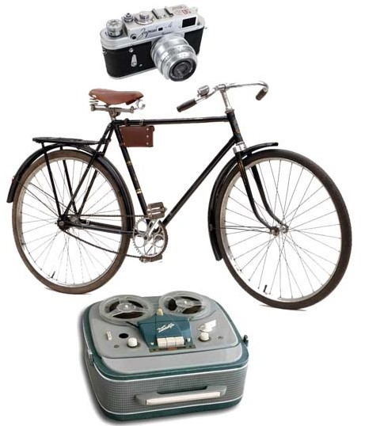
Велосипед и фотоаппарат сопровождают меня всю жизнь, а магнитофон не выдержал конкуренции и его заменил в 1994 году настольный компьютер. Много знаний приобретал самостоятельно и концентрировался на учебном материале тогда, когда было необходимо. Иногда в пол уха прослушивал и отсиживал неинтересные мне темы. По моему мнению не следует детям давать всё подряд и требовать отличных оценок по всем предметам - люди все разные и в ближайшем будущем реформа образования и отчётности по ней должны претерпеть какие-то изменения. Дети и молодёжь должны постигать все ценности во время обучения. Например, полезно внедрить свободный выбор предмета изучения и уровень его освоения.
Перед учёбой на первом курсе нас направили из городских дворов в деревню Сулово, в колхоз Большевик помогать местным коммунистам в уборке картофеля.
Той радости и юношеского счастья Сергея Есенина в сельской местности, которая была 50 лет тому назад я уже не встречал: не было заботливой любви к частной собственности, своему коню или корове.
Мне нравится стихотворение моего земляка Сергея Есенина:.
Ты поила коня из горстей в поводу,
Отражаясь, берёзы ломались в пруду.
Я смотрел из окошка на синий платок,
Кудри черные змейно трепал ветерок.
Мне хотелось в мерцании пенистых струй
С алых губ твоих с болью сорвать поцелуй.
Но с лукавой улыбкой, брызнув на меня,
Унеслася ты вскачь, удилами звеня.
В пряже солнечных дней время выткало нить...
Мимо окон тебя понесли хоронить.
И под плач панихид, под кадильный канон,
Все мне чудился тихий раскованный звон.
1910.
После первого курса учитель русского языка и литературы посоветовал прочитать книгу Льва Толстого Война и мир. Я приобрёл эту книгу и всё лето её читал, а когда после летних каникул учитель спросила кто прочитал Войну и мир, то руку поднял только я. Она спросила, что мне понравилось в книге и я ответил, что Наташа Ростова и объяснил ей свои предпочтения. Учитель был очень рад и поставил мне пятёрку. После этого эпизода книгу не обсуждали. Более ничего из техникумовской литературы мне не запомнилось.
На последующих курсах ездили в другие местные колхозы. Однако сегодня, от этих колхозов остались только умирающие деревни и памятник председателю колхоза Большевик Акиму Горшкову .
Это время я помню по некоторым цифрам зарплат и пособий, пьющих инвалидов и участников войны. Например, в 1967 году, в год 50-летия революции в Российской империи, моя стипендия в техникуме была 20 рублей, моя бабушка, всю жизнь работая, в 70 лет получала пенсию 30 рублей. Мой отец, воевавший с 1938 по 1948, и вышедший на пенсию с должности участкового инспектора, старшим лейтенантом в 1961 году получил пенсию 50 рублей и сразу вынужден был от неё отказаться, найдя работу на зарплату 110 рублей (тогда не платили пенсий работающим пенсионерам). Отцу надо было кормить 3 детей. Мама работала главным бухгалтером городской больницы и получала 90 рублей.
Партия и правительство вкладывала деньги не в население, в народ, а в номенклатуру, народную элиту: спортсменов, артистов, писателей, учёных, военных, партийную и советскую администрацию.
В 17 лет (лето 1968) и я заработал свои первые деньги 110 рублей, работая грузчиком на фабрике во время каникул в техникуме , ходил на танцы, любовался девчонками и неохотно включался в свои первые любовные истории, наверно, из-за скудного материального положения семьи и скудного сексуального воспитания тех лет - всё уходило на гонку вооружений и соперничество с США в ходе холодной фазы мировой гражданской войны.
В 1969 году провёл лето в деревне, в семье двоюродного брата Александра Ивановича Кузьмичёва и вплотную познакомился с молодёжью цветущего в районе колхоза 16 лет Октября и пропустил все волнения и новости о высадке американских астронавтов на Луне. Потом вступил в преддипломную практику на Хрустальном заводе и как-то вопросы высшего образования в потоке мирской суеты отступили на второй план.
В 1970 году окончил Гусевский стекольный техникум , где кроме свободной учёбы без выполнения многих домашних заданий, вошедшей в привычку, сидя на последних партах 7-8 класса, увлекался литературой: Пушкин, Дюма, Бальзак, Золя, Диккенс, Лермонтов, Чехов, Толстой, Тургенев, Лесков, Горький, Руссо, Вольтер, Манн, Антуан де Сент-Экзюпери всегда лежали у меня на столе. Постоянно читал журнал Техника молодёжи, играл в шахматы в турнирах и по переписке, выписывал шахматный журнал "64", Чигорин, Алёхин и Карпов были моими кумирами; увлекался музыкой, фото , но не был комсомольцем, не был и торжественно крещён в православную веру. Окружавшие меня с детства многочисленные женщины , как правило, в православной вере находили устойчивость для выживания.
Секса в СССР не было, но теоретически из книг я его представлял. Молодёжь моего возраста и быта о сексе узнавала на танцах, после танцев на укромных лавочках в тени немногочисленных фонарей или в сараях возле дома на специально оборудованных лежаках. Молодые женщины и девушки мне предлагали свои ласки в наших скудных условиях, но я не знал, как это осуществить безопасно и без серьёзных последствий, связанных с рождением ребёнка. Случай рождения детей был в 8 классе. Одноклассник завёл семью с девушкой из соседнего общежития ткацкой фабрики. Позже я учился в техникуме, а он стал работать после 8 класса на стройке грузчиком. Его подвиг, его грязная одежда и четвертинка водки, покупаемая им в продмаге после работы, меня не восхищали, а романтические переживания первой любви вытесняли близкие отношения для пробы. Я увлекался различными проектами образования и мой петух кукарекал чаще всего по ночам — я просыпался мокрым. Конечно, иногда и мастурбировал, но это не было каким-то психологическим излишеством. С девочками, девушками и женщинами я легко общался и общаюсь всю свою жизнь на всех уровнях. При этом я не тащился за юбками, да и физически я не был готов к жизни петуха с курами, коих я наблюдал с детства на подсобных дворах нашего неразвитого социализма .
{kind=link}
Партия и Правительство и после войны держали население в стрессе, отрывали необходимые на восстановление жизни народа ресурсы, наращивали ракетно-ядерные силы; пропаганда нацеливала людей на результат и требовала бдительности, самоотверженно строя Коммунизм, в котором мне предстояло жить, и на моё воспитание им не оставалось сил. На мой взгляд, это было время почти нулевого КПД для социального развития населения и ценностей человека.
Послевоенное советское время, на мой взгляд, добило чуть было возникший народ России , лишив его основ демократии, общечеловеческих ценностей и смысла победы над фашизмом.
Вожди и после ВОВ сохранили для населения свободу человека по Ленину, смысл которой исчезал за горизонтом.
Так во мне естественно рос индивидуализм и неприятие большинства, а позже созрело и отвращение к большевизму, оправдавшего свои преступления добровольно-принудительным соучастием населения.
В июле 1970 года после подготовительных курсов в институт и защиты дипломного проекта по своему "изобретению", на который потратил слишком много времени, после ни к чему не обязывающих встреч с девушками я был готов к поступлению в институт, но не определился в какой и потому, отложив свой магнитофон с библиотекой Высоцкого и Битлз, я направился в армию . Уехал как герои из русской литературы XIX века уезжали на Кавказ.
Непрерывная учёба надоела, реальной любимой девушки не было, свой свободный диплом я не оценил, да и некому было подсказать следующий шаг в жизни
Я стал готовиться к новым ощущениям в армии. Тем более, что во двор нашей двухэтажной хрущёбы вернулись в 1969 году товарищи в новых мундирах, да ещё из самой Праги и загадочно молчаливые. Родители никак не вмешивались в мои планы. Полагаю, что им самим было тяжело с тремя взрослыми детьм.
По радио и телевидению по заказам власти настойчиво звучали песни: "Будет людям счастье, счастье на века! У советской власти сила велика...".
У меня оказался вдруг перед самым выпуском свободный диплом и мне не нужно было обязательно ехать куда-то.
Первоначальное направление в Подмосковье на Лихоборский стекольный завод мне по какой-то причине отменили. Может быть партком проверял назначения и меня, как не комсомольца решили туда не пускать, а может быть свободный диплом мне выхлопотала наш первый руководитель группы Быкова и мама одноклассницы по школе.
В ожидании повестки защищать всё вокруг колхозное, всё вокруг своё я решил поработать.
Чтобы не отставать от сверстников и глубже познать жизнь, впервые выйдя за рамки города , я самостоятельно поехал во Владимир в Управление Владимирстекло и выхлопотал направление на завод местной промышленности. На следующий день собрался и уехал работать на завод в поселок Первомайский , Селивановского района, Владимирской области, где меня назначили мастером цеха и исполняющим обязанности главного механика завода.
Родители не вмешивались в мой энтузиазм. Тогда я себя видел и изобретателем машин, и журналистом, и даже писателем.
За первый месяц сумел проявить себя и главный механик, уйдя в отпуск на 2 месяца, оставил меня за себя. За первые 100 дней самостоятельной жизни я облицевал стекловаренную печь алюминиевыми листами, лично отремонтировал фрезерный станок, был шокирован босыми ногами, проходившей по тропинке мимо заводской проходной девушки и, не успев нацеловаться, распрощался со своими знакомыми, расписался за повестку: я дождался армии и меня забрали..
3 ноября 1970 военкомат поместил меня на нары в смрад помещения на 100 человек. Вспомнился мой дед, умерший от тифа или испанки в 1919 году на таких же нарах военкомата во Владимире, куда его поместили во время призыва Троцкого на гражданскую войну. Однако меня держали не более 3 суток и потом отправили по этапу (кошмары мероприятий призыва не раз будут сниться мне; во сне я не мог никому разъяснить, что уже отслужил срочную) в сержантскую школу, но из-за споров с сержантами и внеочередных нарядов меня перевели в обычную часть, где после курса молодого бойца назначили механиком - проводником специального вагона для ядерных компонентов и к моему сожалению нашей команде выдали мундиры старого образца: кругом были леса, а новых мундиров на всю армию не хватало. И тогда я впервые понял обман пропаганды и пожалел, что не стал поступать в какой-нибудь институт во Владимире, Рязани или даже в Москве.
В техникуме или после я пытался поступить в военное училище лётчиков, но из-за проблем с сердцем и травмированным позвоночником врачи закрыли мне этот путь в армию.
Техникум я закончил, но и в институт не пошёл. На этот раз меня, изъявившего желание служить в армии рядовым, взяли. Как оказалось, взяли в рабство, а рабовладельцами оказались вчерашние рабы.
На всём протяжении моей службы родине у меня были случаи оскорбления и предательства со стороны командиров и начальников. Если провести опрос, то наверняка выяснится, что более половины мужчин подвергались оскорблениям и предательству со стороны своих начальников. Эта большая проблема в армии и в других силовых органах нашей страны.
Известно, что господа из России уехали в Париж после событий 1917 года, а в Красной армии и Флоте для бывших холопов большевики установили свои порядки защиты социалистического отечества, далёкие от церемоний чести и достоинства человека.
Главной ценностью в России стала власть государства, а все подчинённые для власти оказались расходным материалом. И одним переходом к профессиональной армии проблему массового нарушения прав подчинённых в армии не решить, но это первый и необходимый шаг в этом направлении. Должны появиться элементы контракта и самоуправления, необходимые для современной армии. Но до этого далеко.
Это был рискованный шаг в направлении беззаветного служения родине на военном поприще. Но эта оценка того поступка ко мне пришла позже.
Закончилась моя провинциальная юность и только особенности семьи, да более убогий быт моего окружения увели меня тогда от активных путей решения социальных проблем нашего населения. Весь поток революционно-патриотического воспитания тех лет призывал к активным действиям. Работа за мизерную зарплату и угроза до 5 лет лишения свободы и конфискация имущества за тунеядство.
Позже, в годы перестройки, я узнал реальную новейшую историю России и какой низкий результат, а иногда и большой отрицательный принесли мультфильмы из моего детства про русских царей, которые рисовались дурнее Ивана-дурака, пионеры-герои, Овод, Павка Корчагин, комсомольцы Донбасса.
На всём протяжении моей службы родине у меня были случаи оскорбления и предательства со стороны командиров и начальников. Если провести опрос, то наверняка выяснится, что более половины мужчин подвергались оскорблениям и предательству со стороны своих начальников. Эта большая проблема в армии и в других силовых органах нашей страны.
Известно, что господа из России уехали в Париж после событий 1917 года, а в Красной армии и Флоте для бывших холопов большевики установили свои порядки защиты социалистического отечества, далёкие от церемоний чести и достоинства человека.
Главной ценностью в России стала власть государства, а все подчинённые для власти оказались расходным материалом. И одним переходом к профессиональной армии проблему массового нарушения прав подчинённых в армии не решить, но это первый и необходимый шаг в этом направлении. Должны появиться элементы контракта и самоуправления, необходимые для современной армии. Но до этого далеко.
Это был рискованный шаг в направлении беззаветного служения родине на военном поприще. Но эта оценка того поступка ко мне пришла позже.
Закончилась моя провинциальная юность и только особенности семьи, да более убогий быт моего окружения увели меня тогда от активных путей решения социальных проблем нашего населения. Весь поток революционно-патриотического воспитания тех лет призывал к активным действиям. Работа за мизерную зарплату и угроза до 5 лет лишения свободы и конфискация имущества за тунеядство.
Позже, в годы перестройки, я узнал реальную новейшую историю России и какой низкий результат, а иногда и большой отрицательный принесли мультфильмы из моего детства про русских царей, которые рисовались дурнее Ивана-дурака, пионеры-герои, Овод, Павка Корчагин, комсомольцы Донбасса.
Марченко , Буковский, Новодворская и несколько десятков других романтиков, лучшая молодёжь страны сурово наказывалась партийно-государственной машиной, администрацией страны за самостоятельные шаги в борьбе за лучше будущее, за уютное общество с широким набором современных социальных связей. При этом выведенное из оцепенения их борьбой население, веками приученное страхом к административному подчинению, составляло при опросах в КГБ просьбы о применении к ним смертной казни, так это было со студенткой Новодворской, которая в начале «революционной» деятельности кинула рукописные листовки в зал Кремлёвского дворца съездов 5 декабря 1969 года перед началом оперы «Октябрь».
Наш "призыв" из РСФСР влился в два предыдущих призыва из УССР, и я впервые в своей жизни почувствовал, что есть какие-то противоречия между братскими народами СССР. Всё было несколько иначе, чем нам говорили в школе и по телевизору. Я был почти на два года старше своего призыва, старше солдат старшего призыва из Украины. Это и помогло мне уходить от возникающих мелких конфликтов, да и национальные противоречия не имели базы во мне, выросшему в провинциальной российской среде. Я уходил от непонятных мне национальных конфликтов.
После курса молодого бойца прочёл в газете Красная звезда, что военные училища набирают курсантов. И через пару недель решил учиться на военного журналиста. Срок срочной службы уменьшался на 1 год, да и родителей я не обременял бы обретением высшего образования за казённый счёт.
Стать писателем я подумывал и раньше. Заводская карьера меня не привлекала.
По совету командира подал рапорт в Военную инженерную академию имени Дзержинского. Место замполита в части было вакантным и меня, не комсомольца, отправили в академию сдавать экзамены.
Военная мощь шокировала, и в августе 1971 года я сдал экзамены в академию, которой ныне присвоено имя Петра Великого. Мне захотелось более эффективно жить и служить родине в армии, но некоторые, если не большинство, пришли туда за зарплатой, в благоприятную нишу для обычной мирной жизни, а то и по заданию КГБ без экзаменов. Фанатиков построения коммунизма или мировой системы социализма я не встречал.
На первом экзамене по математике письменно была задача с логарифмами, решавшаяся численным методом по логарифмическим таблицам, которые не были выданы, но предлагались смотрящими в случае нужды, а я старался аналитическим методом её решить и естественно не смог — в результате тройка. Перед вторым экзаменом — математика устно, я был послан на работы по кухне и спал перед экзаменом около 4 часов, что и привело к тройке. Мой мозг не смог воспроизвести отработанные мной темы. Физику устно я сдал после хорошего сна на пять и потом написал осторожно сочинение на вольную тему без ошибок.
Однако замполит факультета, полковник, вызвал меня, рядового, в кабинет и неожиданно объявил, что я не прошёл по конкурсу и предложил вернуться в часть, вступить в ВЛКСМ, подтвердить звание отличника боевой и политической подготовки и снова поступать в академию.
Это был очередной шок. Начальник сборов обещал зачисление в Академию всех сдавших экзамены, а меня практически одного отчислили в часть для дальнейшего прохождения службы. Вероятно, курсовой офицер, руководивший абитуриентами из армии, набиравший себе послушных сержантов, докладывающих всё друг о друге, по окончании экзаменов дал мне отрицательную характеристику. Возможно, замполит факультета освободил место для нужного абитуриента, путём как бы моего добровольного отказа от поступления в академию. Это было очередным предательством. Подобные предательства, и более крупные, в течение службы были не редкостью. С меня сошла романтика военной службы, но и на гражданке было не менее мрачно.
Факт предательства или социального отбора в ту пору мне не был очевиден, да и курсовые офицеры-воспитатели были тогда и остаются сегодня далёкими от нужного уровня. Но это не только их вина.
Обычно офицеры становятся мудрее после отставки, да и череда переворотов с 1917 года не способствовали богатству традиций в становлении офицеров отечества, достоинства каждого человека, прав и свобод гражданина. Позже, я разделил офицеров и чиновников на два класса: тех, кто имеет какое-то чувство или понятие достоинства человека и служит родине, народу, и тех, кто служит близким начальникам, без высоких чувств и понятий — холуёв. Примерно, 5 процентов было сносных офицеров. Основная причина этого расклада заключена в том, что большевики силами тёмного населения Российской империи уничтожили не только настоящих офицеров, но всё благородное в нарождающемся гражданском обществе, сведя социум к новому холуйству — демократическому централизму. Полагаю, что 3% населения оставались здоровыми. Я же случайно не был подвержен советскому социальному заболеванию и, наверно, был один на 1000, а яркие несогласные с режимом диссиденты были один миллион. Их было не более 300 человек на весь СССР.
В конце срочной службы под командованием приличного офицера — майора Тарабанчука, в жаркое лето 1972 года, став сержантом, отличником боевой и политической подготовки, комсомольцем, (при желании за 3 месяца до поступления в академию мог стать кандидатом в члены партии и старшим сержантом, но такое желание у меня не сложилось из-за непонимания сущности режима власти), победителем математической олимпиады среди абитуриентов из армии, я снова сдавал приёмные экзамены и меня, потерявшему к этому времени энтузиазм, приняли. Приняли, не смотря или недосмотрев мой боевой листок в ленинской комнате, который мне поручили написать для абитуриентов перед последним экзаменом. А там для куража я написал, что мы, абитуриенты из войск, поступаем в академию потому, что лишь тот достоин жизни и свободы, кто каждый день идёт за них на бой и сослался на Гёте, который выразил основополагающую идею офицеров с незапамятных времён.
По совету командира подал рапорт в Военную инженерную академию имени Дзержинского. Место замполита в части было вакантным и меня, не комсомольца, отправили в академию сдавать экзамены.
Военная мощь шокировала и в августе 1971 года я сдал экзамены в Военную инженерную академию, которой ныне присвоено имя Петра Великого. Мне захотелось более эффективно жить и служить родине в армии, но некоторые, если не большинство пришли туда за зарплатой, в благоприятную нишу для обычной мирной жизни, а то и по заданию КГБ без экзаменов. Фанатиков построения коммунизма или мировой системы социализма я не встречал. Позже, наблюдая политиков и политическую жизнь вблизи, во время учёбы и краха советской государственности мне стало жутко от вооружённых людей в погонах. И, несмотря на цели служения родине, любые реформы или революции в первую очередь превращают в трагедию жизнь военных и различного рода тайных агентов. Все остальные социальные группы адаптируются быстрее.
На первом экзамене по математике письменно была задача с логарифмами, решавшаяся численным методом по логарифмическим таблицам, которые не были выданы, но предлагались смотрящими в случае нужды, а я старался аналитическим методом её решить и естественно не смог - в результате тройка. Перед вторым экзаменом - математика устно, я был послан на работы по кухне и спал перед экзаменом около 4 часов, что и привело к тройке. Мой мозг не смог воспроизвести отработанные мной темы. Физику устно я сдал после хорошего сна на пять и потом написал осторожно сочинение на вольную тему без ошибок.
Однако замполит факультета, полковник вызвал меня, рядового, в кабинет и неожиданно объявил мне, что я не прошёл по конкурсу и предложил вернуться в часть, вступить в ВЛКСМ, подтвердить звание отличника боевой и политической подготовки и снова поступать в академию.
Это был очередной шок. Начальник сборов обещал зачисление в Академию всех сдавших экзамены, а меня практически одного отчислили в часть для дальнейшего прохождения службы. Вероятно, курсовой офицер, руководивший абитуриентами из армии, набиравший себе послушных сержантов, докладывающих всё, друг о друге, по окончании экзаменов дал мне отрицательную характеристику. Возможно, замполит факультета освободил место для нужного абитуриента, путём как бы моего добровольного отказа от поступления в академию. Это было очередным предательством. Подобные предательства, и более крупные, в течение службы были не редкостью. С меня сошла романтика военной службы, но и на гражданке было не менее мрачно.
Факт предательства или социального отбора в ту пору мне не был очевиден, да и курсовые офицеры-воспитатели были тогда и остаются сегодня далёкими от нужного уровня. Но это не только их вина.
Обычно офицеры становится мудрее после отставки, да и череда переворотов с 1917 года не способствовали богатству традиций в становлении офицеров отечества, достоинства каждого человека, прав и свобод гражданина. Позже, я разделил офицеров и чиновников на два класса: тех, кто имеет какое-то чувство или понятие достоинства человека и служит родине, народу и тех, кто служит близким начальникам, без высоких чувств и понятий - холуёв. Примерно, 5 процентов было сносных офицеров. Основная причина этого расклада заключена в том, что большевики силами тёмного населения Российской империи уничтожили не только настоящих офицеров, но всё благородное в нарождающемся гражданском обществе, сведя социум к новому холуйству - демократическому централизму. Полагаю, что 3% населения оставались здоровыми. Я же случайно не был подвержен советскому социальному заболеванию и, наверно, был один на 1000, а яркие несогласные с режимом диссиденты были один на миллион, т.е. не более 300 человек на весь СССР.
В конце срочной службы под командованием приличного офицера — майора Тарабанчука, в жаркое лето 1972 года, став сержантом, отличником боевой и политической подготовки, комсомольцем, (при желании за 3 месяца до поступления в академию мог стать кандидатом в члены партии и старшим сержантом, но такое желание у меня не сложилось из-за непонимания сущности режима власти), победителем математической олимпиады среди абитуриентов из армии, я снова сдавал приёмные экзамены и меня, потерявшему к этому времени энтузиазм, приняли. Приняли, не смотря или недосмотрев мой боевой листок в ленинской комнате, который мне поручили написать для абитуриентов перед последним экзаменом. А там для куража я написал, что мы, абитуриенты из войск, поступаем в академию потому, что лишь тот достоин жизни и свободы, кто каждый день идёт за них на бой и сослался на Гёте, который выразил основополагающую идею офицеров с незапамятных времён.
В конце срочной службы под командованием приличного офицера - майора Тарабанчука, в жаркое лето 1972 года, став сержантом, отличником боевой и политической подготовки, комсомольцем, (при желании за 3 месяца до поступления в академию мог стать кандидатом в члены партии и старшим сержантом, но такое желание у меня не сложилось из-за непонимания сущности режима власти), победителем математической олимпиады среди абитуриентов из армии, я снова сдавал приёмные экзамены и меня, потерявшему к этому времени энтузиазм, приняли. Приняли, не смотря или недосмотрев мой боевой листок в ленинской комнате, который мне поручили написать для абитуриентов перед последним экзаменом. А там для куража я написал, что мы, абитуриенты из войск, поступаем в академию потому, что лишь тот достоин жизни и свободы, кто каждый день идёт за них на бой и сослался на Гёте, который выразил основополагающую идею офицеров с незапамятных времён.
Учёба в академии оказалась сложной, но интересной. Преподаватели были опытными военными, многие из них прошли войну. Особенно запомнилась профессор математики Эмма Зиновьевна Шувалова, которая поддерживала меня и советовала не терять научный интерес .
В академии я столкнулся с разными людьми: были и настоящие энтузиасты, и те, кто пришёл ради карьеры. Атмосфера была напряжённой, но давала возможность для саморазвития. Я продолжал заниматься самообразованием, читал книги по психологии, социологии, интересовался историей и философией.
В эти годы я начал задумываться о будущем страны, о роли офицерского корпуса и о необходимости перемен в обществе. Всё больше убеждался, что без уважения к достоинству личности и развития гражданского общества невозможно построить справедливое государство.
После приказа о зачислении в академию в начале августа 1972 года мне дали 10 суток отпуска, и я увидел родной город в дыму — горели торфяники Шатуры, леса вокруг, в городе хоронили солдат и офицеров, не щадивших своего живота. Этот кошмар казался мне предвестием ядерной войны, и я остался в армии.
Научно-техническая школа военной академии была одной из лучших в стране и могла быть гораздо выше. Однако академия готовила специалистов, кадры для советских войск, а не образованных офицеров, которые были не нужны правящей партии.
Курсанты жили против Кремля , лекции по естественным наукам читали генералы прошедшие 2 мировую войну. Профессор математики и ветеран ВОВ, в лихие годы служившая в ВМФ, Эмма Зиновьевна Шувалова прочила мне карьеру учёного или командира, когда рекомендовала меня в группу баллистиков в качестве командира. Она мне была симпатична, возможно потому, что принадлежала к героическому поколению фронтовиков, каким был и мой отец.
Однако прапорщики, тащившие из общего котла, своими методами учили меня относиться уважительно и к их персонам, и к вертикали в целом, вплоть до внеочередных нарядов сержанту на кухню. Их рекомендация для курсового офицера Ивана Беляева была авторитетнее моих претензий к ним. Он в общем-то был хорошим младшим офицером по советским аршинам и к тому же согласно аттестациям советского периода у него, как и у всех, весьма вероятно, было отмечено, что он делу партии предан. Позже такие офицеры упираются в нравственно-этическую трясину и становятся приспособленцами, зарабатывая себе на старость дачу и машину на фоне серой массы советских людей.
Мне формулировку о преданности делу партии написали при выдвижении на майорскую должность. Я удивился, но начальник сказал, что он сделал такой вывод по имеющемуся шаблону и мне лучше не возражать, хотя я, будучи членом КПСС никогда не заострял своего внимания на каком-то особом деле партии, которому полагается быть преданным. Наверное, это было дело строительства глобального коммунизма объединёнными силами пролетариата, которое позже завершилось всеобщим крахом, а пролетариат вместо объединения стал ещё ожесточённее воевать друг с другом во всех регионах мира.
Взаимоотношения с курсовой вертикалью у меня не складывались. В начале учёбы вместо меня командиром учебного отделения назначили сержанта из кремлёвского полка. По-моему, он пришёл к нам без экзаменов в общем потоке. Сказал,что сдавал экзамены в Москве. Возможно, таких подсадных уток в каждом потоке было несколько.
Позже я узнал больше про эту скрепу большевистского патриотизма от КГБ, про гарантию забвения их преступлений в первые годы советской власти. Им нужны были свои люди не только в РВСН. Ради нужд вертикали власти меня понизили до командира строевого отделения. Формировали скрепу из всех привилегированных воинских частей и на подготовительных курсах престижных высших учебных заведений из числа прошедших армию молодых людей, в военных спортивных ротах, полубандитских спортивных клубах, музыкальных ансамблях, художественных студиях и т. д. в Москве и других крупных городах СССР. Такая скрепляющая сеть тайных агентов-патриотов покрывала всю страну. И если ей увлекаются и нынешние службы безопасности, то нас ожидает новый крах государства из-за невероятно удачливых агентов, скрепляющих свободу и творчество одарённых людей во всех сферах общества.
Я видел, что командование могло делать всё, что угодно со своими кадрами. Из нужного прапорщика могли сделать командира баллистиков. Тайного и явного этического кодекса чести офицеров я не видел. Не заметно его и теперь, главное — это подчинение в интересах власти, а сама власть колеблется в непонятном направлении. Не уходит в забвение старая поговорка: "Закон, что дышло: куда повернёшь, туда и вышло."
На картине Януша Ковальского "Нападение волков", 1886 года, лошади безумны, дышло вот-вот вдребезги разобьёт сани, и крестьянина ждёт трагический конец. Да и лошади скованы упряжью. Эта картина для меня — модель, символ сильной власти (лошади), слабого государства (дышло), бедного населения (крестьянин) и неразумного поведения населения. При этом власть и население имеют жизненное начало, а государство, закон — формальны и не имеют каких-либо эмоций.
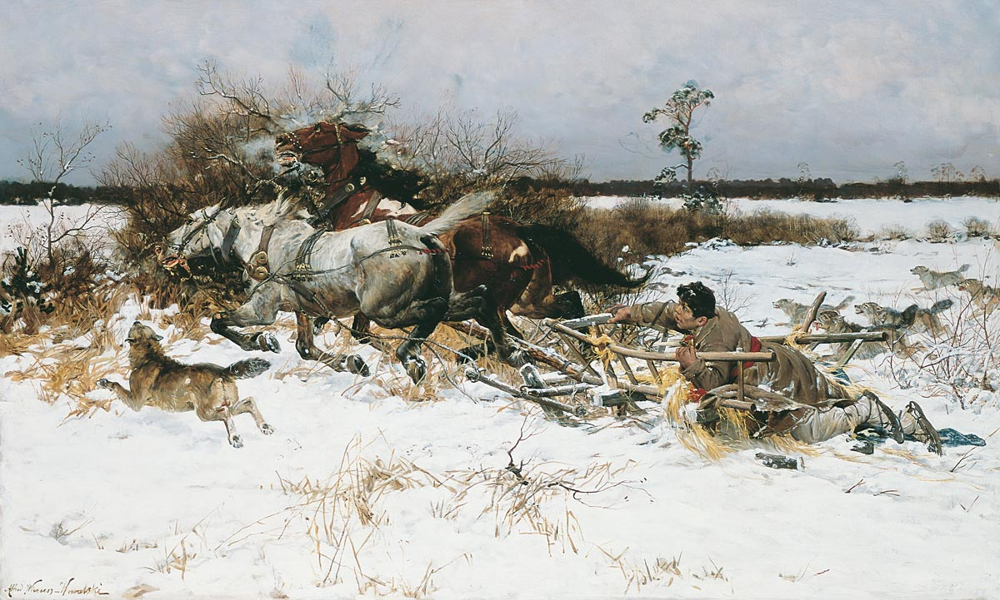
Воспитательный процесс формально шёл под наблюдением политотделов согласно сомнительной теории научного коммунизма. Курсантов по инерции готовили к последней войне с загнивающим капитализмом, который находился в стадии империализма. Это была инерция угасающей вертикали, продлевающей жизнь потомков бывших выгодоприобретателей и палачей России.
Будущее офицерское братство, горизонтальные отношения курсантов и смысловое поле вокруг не складывались. Скорее всего, формально готовя к борьбе за дело Ленина, всех приобщали к шкурным интересам, к борьбе за место по вертикали, что и стало определяющим во взаимоотношениях. На встречах после выпуска звучали только истории карьерного успеха или неудач. Такие офицеры могли служить любому политическому или неполитическому режиму, персональной власти любого лица, оказавшегося на высшей должности. Но были и сбои: то там, то сям человек не выдерживал такого поводка на шее, спивался, кончал жизнь самоубийством или бежал из страны, за которым посылался отряд надёжных чистильщиков системы.
Прогрессивность, надёжность и справедливость политической системы определяют качество кадров. Кажущаяся надёжность скрепы обеспечила торможение в развитии всех сфер общества. Эта же скрепа свалила и кровью созданный СССР. От такого наследия прошлого не избавилась и современная Россия. Но это всё открылось мне позже.
Через год учёбы мне стало скучно участвовать в соцсоревнованиях по случаю дня рождения Л.И.Брежнева, противно зависеть от воспитателей-прапорщиков и бездомных курсовых офицеров, и из своего убогого быта учиться на интересных лекциях с научной точки зрения "целиться в центры мирового империализма". Революционный социализм уходил в прошлое, строительство коммунизма заходило в тупик, и я не мог найти смысла ни в одном, ни в другом, ни в третьем. Социальные вопросы бытия заслонили мои научно-технические интересы. Я стал интересоваться психологией и социологией, знакомился с идеями Фрейда и Юнга, самостоятельно искал истоки противостояния СССР с западными странами — и их не находил. О достоинстве человека, из которого вытекают права, свободы и законные интересы, на лекциях по общественным наукам никто не говорил. А общественный договор, из которого вытекают основные обязанности гражданина и российского государства вообще, не упоминался.
На втором курсе в 1974 года я отказался участвовать в "воспитательном" процессе курсантов, откровенно поговорил с курсовым офицером. Он рекомендовал разжаловать меня в рядовые, а позже за посещение лекций по международному положению вместо плановых занятий по разборке-сборке пистолета познакомил в течение 5 суток с нарами Московской гарнизонной гауптвахты. Там растянул себе сухожилия от тяжёлой работы, которую выполнял под окрики и присмотр офицера с красной фуражкой и другой фурнитурой, которая потеряла у меня авторитет. Там впервые остро ощутил себя заложником жёстких субъективных отношений в армии и дешёвым, без понятия и чувства собственного достоинства, "инструментом" командно-административной системы государства, который можно ударить сапогом, кинуть на нары, на дзот, на поднятие целины или строительство БАМа, уничтожение президента "дружественной страны", на мировую революцию, на дискриминацию или ликвидацию отдельных народов или граждан собственной страны и т.д. т.п. Инструмент должен слушаться хозяина, вышестоящего по вертикали в администрации и в этом, полагали, и состоит призвание офицера, солдата страны инструментов. О чести и речи не шло. Курсовой офицер приходил с малолетним ребёнком на занятия курсантов в Балабаново, а позже и начальник курса брал с собой сына на посещение казармы в выходной день. Детей офицеров не с кем было оставить дома. О гувернёрах и речи не шло. И относились к курсантам не в российских традициях юнкеров . Хамство начиналось со старшины, взятом из армии на службу и учёбу практически без экзаменов.
В России не было устойчивого периода гражданского общества, чтобы народ создавал для себя государство. Тот, кто захватывал госаппарат, тот и определял формат населения для своих нужд. Творчеством полагалось заниматься в специальных КБ, а не в армии. И как говорил мой родственник из деревни — во времена колхозов народ был очередной раз перепутан, перемешан, сбит с толку.
В эти годы наша деревня поставляла не только дешёвых полковников для армии, но и учителей, врачей. Однако кругом был застой и "измена" — инструментарий потерял страх. В фильмах "Кавказская пленница" (1967) и "Бриллиантовая рука" (1968) Леонид Гайдай ярко и талантливо обнажил пороки СССР. Население нуждалось в новой этике и зарплате, в перестройке всех общественных отношений. Приговор системе Гайдай вынес словами Ивана Грозного в фильме 1973 года Иван Васильевич меняет профессию , назвав главного начальника Якина (Брежнева) "пёс, смердящий".
Страна Советов теряла свою эффективность, построенную на страхе и энтузиазме народной интеллигенции, заточенной большевиками на цели коммунизма.
Если политическая система устаревает, не понимает и не чувствует глобальных тенденций, то и инструментарию — офицерам приходится не служить, а выслуживаться. Это и усугубило моментальный развал страны с населением, не приученным к общечеловеческим ценностям, потерявшей, хоть и тупиковую, но цель.
Мне пришлось своё мировоззрение корректировать самостоятельно — по книгам академической библиотеки, в дополнение к программам марксистской философии, политэкономии, научного коммунизма и пропагандистским фильмам о ВОВ, вместо серьёзных лекций о причинах начала и ходе военных действий на разных театрах ВМВ. Офицеров даже в академии готовили к бездумному выполнению приказов. Что уж говорить об обычных училищах — там царил мрак повиновения и бездумного несения тягот и невзгод службы. Не намного лучше был устроен учебный процесс и на академических курсах для среднего командного состава, в академии Генштаба и военно-политической академии. Как позже я узнал, только на энтузиазме некоторые офицеры достигали высокого военного образования, но и тут за их деятельностью и ошибками внимательно следило КГБ, особые отделы в армии и на флоте. В случае критики высших решений по армии их также сурово наказывали, как и любого курсанта обычного училища. Неправильного патриота могли и ликвидировать, как это показано в фильме 2004 года Водитель для Веры .
Моя отлучка с занятий и суровое солдатское наказание помогли только курсовому офицеру получить квартиру и лучшую должность за настойчивость в воспитании подчинённых, а впоследствии и присматривать за кадрами у замминистра Кокошина.
Шел 4-ый год срочной службы.. , вместо 2 лет по закону, мне пришлось отслужить - 7 лет, хотя уже после 3 ноября 1972 года, на первом курсе академии, мог быть рассмотрен вопрос о звании прапорщик, так как я уже отслужил два года срочной службы, был отличником боевой и политической подготовки, сержантом, имел гражданское среднее специальное образование. Да что там я, рядовые в СССР не стоили практически ничего в ходе войны в Афганистане. Им не только год за 2 не шёл, но и денежное довольствие не было повышено и другие льготы отдавали уже потом, в рассрочку не деньгами, а грамотами и путёвками в санаторий для инвалидов. При этом неуставные отношения расцветали.
Звание отличника и комсомольца, за которым меня отправляли в войска годом ранее, нужно было только замполитам для прикрытия своей задницы и семинаров неконструктивной ненависти к буржуям. Заявления отслужившего срочную службу человека о своих законных интересах вызывали только репрессии. Впрочем, уже через несколько лет, я стал оценивать правящий режим репрессивным ко всему населению, а саму жизнь вне внутренних зон несвободной. По сути, Политбюро в качестве поощрения за послушание разрешало трудящимся жить и воплощать их планы в большой зоне, в границах СССР. Самоорганизация населения исключалась из внутренней политики страны.
Не став прапорщиком, разжалованный из сержантов в рядовые (словно вновь призвали в армию), зажатый в тиски времени, я не бросил учёбу (мой рапорт об отчислении по собственному желанию придержал начальник курса), но в дополнение к формальному обучению продолжил начатое самообразование в библиотеках и читальных залах по своему плану. С интересом познакомился с концепцией благоговения перед Жизнью и отказа от Власти А.Швейцера (в последствии, после 1991 года я пересмотрел эту позицию А.Швейцера и теперь считаю, что от естественной роли лидера нельзя отказываться, но и стремление к лидерству серых личностей надо ограничивать, отдавая кесарево кесарю, а Божие Богу, сохраняя устойчивое состояние собственной жизни). После Обращения А.Солженицына к Патриарху Пимену вновь вернулся к истории Руси и церкви. Большой интерес вызывали мирные инициативы легендарного академика А.Сахарова, концепции пределов роста Человечества, защиты окружающей среды и другие локальные и глобальные социальные проблемы, которые актуальны и теперь.
На старших курсах женился и после персонального и грубого ультиматума замполита академии генерала Орлова в его кабинете, что академия не учит на халяву, а готовит офицеров-коммунистов, добровольно-принудительным образом вступил в КПСС .
Конечно, я мог бы поспорить с генералом, что его слова "на халяву" не совсем корректны. Но мой послужной список был мал, и в нём не было подвигов , а его перечень политических шагов, провокаций и асимметричных ходов в сторону сослуживцев и противника пролетариев всех стран в набиравшей силу мировой гражданской войне меня тогда не интересовал. Да и кафедрой баллистики с 1951 года руководил выпускник МГУ Дмитрий Погорелов, спортивный и авторитетный генерал от математики, который был мне гораздо интереснее грузного генерала от политики. Запомнился мне на кафедре и жизнерадостный полковник-геодезист Борис Сергеевич Нуждин, который говорил о своей службе, что ему повезло: он вместо сволочных отношений в штабах до майора ходил в геодезические экспедиции, а потом стал преподавать геодезию в академии. На всех встречах выпускников он всегда с нами общался и был в хорошей форме и доброжелателен.
Партийный билет был дополнением к погонам офицера Вооружённых Сил СССР, и я не сопротивлялся, да и основания для этого у меня в ту пору не сложились окончательно. Наверное, в те годы были на меня написаны доносы с моими репликами и сомнениями в торжестве идей марксизма-ленинизма, и он, естественно, решил меня проверить лично. Если бы я убеждённо сказал, что с коммунистами мне не по пути, то тогда меня исключили бы из академии, и он бы, наверное, вставил отдельный абзац в доклад наверх о результатах проделанной им партийно-политической работы в академии в иной редакции. Сегодня трудно сказать, кто был генерал Орлов и спас он меня или наоборот поставил на мне крест, мне неизвестно. Позже я понял, что партийно-политические орлы внушали советским людям и экономистам, и юристам, и физикам, и химикам, и бригадирам цехов и полей, что они строители коммунизма прежде всего, а специалисты потом, и научный коммунизм — самое верное учение. Карьеру дозволялось делать в рамках линии партии или в интересах партии, но в шарашках в прямом или переносном смысле. Всё это засилье авантюрной политики над здравым смыслом привело к Чернобылю, а потом и к развалу СССР. Как оказалось, партийность была главной и в науке. Могло быть и хуже, но слава Богу, пока мир держится без ядерной войны на какой-то ниточке, известной только Ему. После ультиматума на красном ковре у генерала мне стало ясно, что для карьеры недостаточно наличия партбилета, нужна и партийная активность на месте службы. На это я уже не мог согласиться и был намерен после выпуска служить в Сибири, но другой генерал - начальник факультета направил меня служить в ГШ РВСН.
Во время практики на космодроме "Байконур", на стартовой площадке Ю.Гагарина , которая проходила после каникул в бедных районах Владимирской области, я был шокирован грандиозностью затрат на эти " объекты национальной гордости ". Пережить и правильно осмыслить это трудно: быт страны убогий, а ресурсы страны уходили на реализацию коммунистических идей и будущие яблоки на Марсе , на яростную пропаганду торжества учения Маркса, Энгельса, Ленина. С тех пор не люблю пропаганду, рекламу, учителей, обучавших меня без лишних диалогов по разработкам сверху и артистов, служащих чьей-то воле (в годы моей молодости они были бойцами КПСС, как и офицеры). Видимо, и для Ю.Гагарина такой шок не мог пройти бесследно. Партия и государство хотя и построили дом для матери в деревне, но его первый в полёт в так называемый "космос" и поездки по миру для психики не прошли бесследно. Он тяготился быть инструментом пропаганды, и это было видно в его последние годы жизни. А с учётом того, что он в составе группы ведущих космонавтов жаловаться в Политбюро после смерти Королёва на некомпетентность нового руководства, то там могли только испугаться (Политбюро был далёк от компетенции и легитимности) и принять соответствующие меры уже к Гагарину, который вскоре мог стать генералом. Управлять самостоятельными генералами для партии проблема. Кроме того, партийные пропагандисты могли заказать фальшивый полёт в космос. Показать миру успехи рабоче-крестьянской страны, где не боги горшки обжигают, не князья у власти. Население от сохи не допущено до гражданского контроля властей, а потому это могло считаться маленькой шалостью большевиков.
Заканчивалась эпоха отдельных энтузиастов послевоенного поколения. Впрочем до Юрия Гагарина был Александр Галич, которому, противно было быть инструментом тех, кто знает как надо , а после Гагарина Андрей Сахаров..
В 1977 году на отлично защитил диплом, но по научному коммунизму преподаватель с моего согласия настоял в экзаменационной комиссии, что согласно имеющимся характеристикам надо ставить не выше четвёрки, т.к. мои "либеральные" взгляды известны политотделу и там могли не согласиться с пятёркой. Я был доволен,что отбарабанил научный коммунизм на пятак (как положено, почти под аплодисменты), и меня просили, и я не возражал против четверки. Мне предстояло ещё 20 лет на политической подготовке офицеров снова и вновь конспектировать в трёх тетрадках Маркса, Энгельса, Ленина, решения съездов и постановления очередных пленумов ЦК КПСС.
В перспективах очередных пятилеток я сомневался из-за лежащих на поверхности фактов прогресса частных инициатив в западных странах и встающих во весь рост глобальных проблем Человечества.
После окончания военной академии из воевавших за отечество людей для меня самым главным авторитетом был отец. Все остальные жуковы-чапаевы мной не были усвоены, не ложились они на моё сознание и чувства. Командование академии и Главнокомандующий утверждали, что всех офицеров выпускников ждут благоустроенные общежития, а женатых с детьми удобные квартиры. И это был обман. Даже в XXI веке, сразу давали квартиры только за полярным кругом, да и то в какой-нибудь старой пятиэтажке.
Одинцово встретило меня равнодушно, жилья в городе я не нашёл. Стал осматриваться на местности.
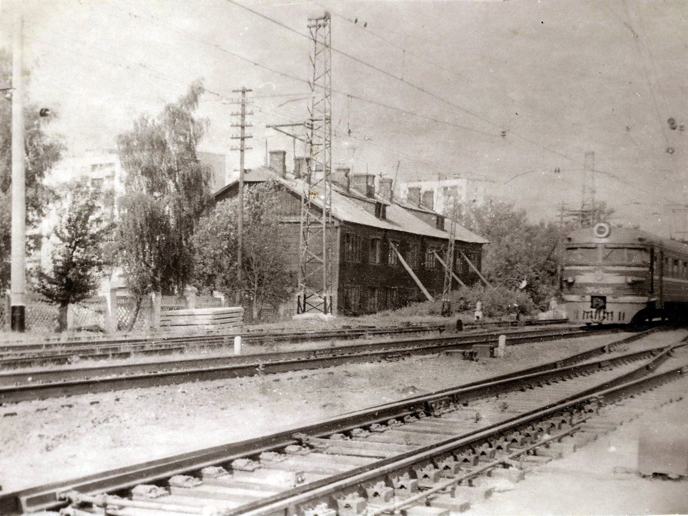
Из дальней истории отечества только Минин с Пожарским и составляли для меня авторитет.
Такой настрой не способствовал карьере, я это понимал, но для меня была важнее моя внутренняя свобода, раз уж внешняя была существенно ограничена режимом, порой невозможна или приводила мыслящих людей к гибели. Тот, кто придумал три тетрадки для политзанятий, был прорабом будущей перестройки - через эти три тетрадки у меня внедрялось отвращение к идеологии, к КПСС и семинарам по политучёбе. Для меня время всегда было и остаётся самым дорогим ресурсом человека. Из меня и моих однокашников не получилось ни правителей - мамлюков, ни защитников офицерского братства: огромный военный и человеческий капитал военных академий, возникших после победы в ВОВ так же был растрачен впустую.
К этому времени я вполне узнал практические моменты жизни, однако изобретателем машин, журналистом и писателем, как Веллер, не стал. Кроме знаний для социальных преобразований нужны ещё два важных компонента: деньги и сила, которых у меня не было, да и взять их тогда в моём положении мне было негде. Не было их и у компании Василия Аксёнова, Телесериал смотрел позже.
По распределению меня направили в город Одинцово, в Центральный вычислительный центр Главного штаба РВСН, которым руководил генерал-майор Алексеев Виктор Петрович
После трёхмесячного курса молодого бойца, в котором я познакомился лишь с уставом и Положением о Главном штабе, меня утвердили инженером в лабораторию расчёта траекторий спутников над позиционными районами РВСН. Кто создал программу для ЭВМ, и кто в группе ведёт тот или иной участок мне было знать не положено. Однако я научился вставлять в устройства магнитные ленты с программой расчёта, вводить с перфоленты исходные данные траекторных измерений, давить на кнопки ЭВМ М-220 по простейшей инструкции и получать распечатки прогнозов пролёта ИСЗ и телеграфные ленты с данными для оповещений войск. Но никто не ввёл меня в баллистику всего этого процесса: кто и на основании каких алгоритмов составлял программу расчёта, кто и на основе чего определил координаты позиционных районов и т. д. Мне это показалось странным - в тёмную проводить расчёты и выдавать результаты, но мне сказали так надо и дальше узнаю то, что мне будет положено знать.
В последствии такое введение в должность и чрезмерное занятие строевой и политической подготовкой сказывалаь на качестве работы лаборатории, а ответственность списывали.
В качестве инженера лаборатории, как говорится, от службы не бегал, но и на службу не напрашивался, тем более бытовых проблем было много.
С личным героизмом на службе соседствовал и казённый произвол. Например, целый полковник стоял у КПП и следил как ему отдают честь прибывающие на службу офицеры. Встал бы у выхода из туалета и оценивал как офицеры от задницы козыряют ему, а потом уж моют руки.
Однажды мне этот ритуал надоел, и я не отдал честь полковнику. На вопрос почему, сказал, что дочь, которую я вёл перед службой в детсад, крепко держала меня за руку и я не успел её вывернуть.
Жил то я с семьёй на станции Перхушково в деревне, в доме без удобств и каждый день входил в КПП с 3-летней дочерью.
Меня наказали, а после 15 лет службы я оценил этот поступок весьма положительно. Да и сегодня (лето 2020 год), Власиха благоустроена, но дети этих самых полковников, офицеров и прапорщиков и других службистов советского периода, их внуки продолжают выводить своих собак из многоквартирных домов срать на травку детских площадок Власихи. Гуляя с внуками я попадаюсь иногда в их мины, но что с них взять? Они ли в этом виновны? Они дикие и не со зла, как отмечала Ольга Бергольц.. .
Но это открылось мне позже. Глядя в Гугле на коттеджи служащих вокруг аналогичной базы в США Оффатт, делаю вывод - в России в ХХ веке произошла катастрофа, связанная с преступлением большевиков, Ленина и Сталина перед народом.
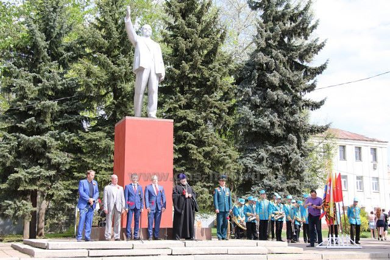
Интуиция меня не подвела, и я с лейтенантского уровня стал осторожно относиться к нравственности полковников, большинство населения в СССР у меня так же вызывало отторжение, как больные чумой.
Будучи майором с сожалением наблюдал, что коллеги в званиях майора часто приходили с благодарностью от коменданта Власихи за количество замечаний в наряде патрулём.
Армия сильна офицерами, однако советские офицеры стратегических сил периода развала СССР, по моему мнению, как защитники СССР не стоили и гроша. И когда он развалился крайне мало было отставок даже среди полных генералов и адмиралов.
Например, такие картинки из города моей юности пугают меня смысловым хаосом: у отремонтированного памятника вождю мирового пролетариата и колхозного крестьянства предприниматели, духовенство местная власть и военные. Они поздравляют жителей города в 2019 году с Победой.
Не радуют и плакаты для кадров, приставленным к ракетам возле многоквартирных домов на небольшой лужайке.
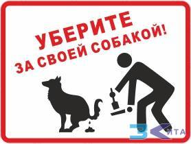
Типовая прогулка военнослужащего с собакой на Власихе завершается на лужайке возле своего многоквартирного дома. К сожалению, квартиру даже в таком доме мне пришлось ждать много лет.
Полно проблем с офицерской честью, ранее растоптанной большевиками и превративший КГБ в орган всеобщего контроля и прямых акций в русле ложной идеи построения Коммунизма во всемирном масштабе и интересов партии в реализации исторической роли пролетариата.
Современные офицеры служат на низком смысловом уровне. Нижнее звено из спортивного интереса занимается карьерой, а среднее и высшее начальство метит в новое дворянство за счёт присвоения всего, что можно, часто рискуя попасться карьеристам из надзорных органов. Служат по инерции идей, локомотив которых сломался в ходе Второй мировой войны. Из инерции и материальных интересов вытекают и мутные направления развития всего государства без учёта ошибок прошлого. В итоге утечка мозгов и изоляция России. Всё это чревато геополитической опасностью и перманентными катастрофами общественной жизни.
Без свободного творчества на высшем политическом уровне и научно-рационалистического подхода невозможно развитие современного общества, невозможен эффективный государственный аппарат. Остаётся надеяться только на то, что люди для свободного творчества способны и в России. Если оно невозможно в ближайшие годы по ряду социально-исторических причин,то из страны третьего уровня нам долго не выйти. Кстати, 10% квартир наших 9-этажек в конце 2020 года оказались должниками за услуги ЖКХ. В нашем доме средний долг составил 150 тысяч рублей при средних доходах в 45 тысяч.
Долги и кучи собачьего дерьма немыслимы возле типового коттеджа Оффатта или в любом другом месте США. Там следят за чистотой своей лужайки. С травы у дома, в том числе, у них начинает любовь к родине, а у нас только песня.
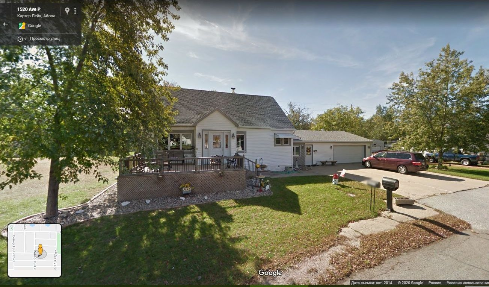
При этом размер лужаек примерно одинаков.
Однако вернёмся к последовательности изложения.
А автоматизировал управление , прогнозировал полёты, косвенно старался уточнить расчёты, участвовал во внедрении советского Интернета, создававшимся согласно американским идеям под руководством КПСС, так как выделение средств на АСУ было обусловлено решением Политбюро.
Многочисленные конструктора хаотично реализовывали свои программные и технические средства для системы гарантированного доведения сигналов боевого управления. Я с недоверием относился к этим затеям и интуитивно выступал против машин серии ЕС ЭВМ в качестве сервера локальной сети. Теперь эти памятники головотяпству 100 лет будут напоминать "командирам" о их доблести в застойные времена, так как фундаменты для этих серверов не подорвёшь и фугасом; от миллиардного проекта остались только здания в 2 этажа и мощным подвалом, видимо, в них хранят овощи.
Через несколько лет оказалось, что дело было не только в серверах, а в начале общего кризиса советской системы. Энтузиазм, даже праведный, может неэффективно реализовать простые громоздкие проекты , но сложные и высокотехнологичные изделия наследникам преступно-ошибочного энтузиазма большевистской системы не поддались.
Позже, анализируя энтузиазм некоторых учёных, офицеров и других слоёв нашего населения, я пришёл к выводу, что они, искренне любя Россию, родину в ВОВ и после неё интуитивно исправляли преступления большевиков, хотя и продолжали жить после осуждения культа Сталина в не до конца реформированной стране.
К моему сожалению, мы и теперь так живём, но вместо энтузиазма населения госаппарат выручают недра нашей необъятной родины. Всё это очень и очень неэффективно, но что будет дальше мне неведомо. Однако вернёмся к моей истории.
Снимал жильё в соседней деревне, жил некоторое время без семьи - и писал свою конституцию на проекте опубликованной в прессе брежневской. Глядя на суконные лица офицеров, нельзя было понять зачем они все собрались, да ещё меня к ним прислали.
Единственно разумным и эмоциональным был мат постоянно курящего начальника и периодически зачитываемые им постановления ЦК КПСС.
До направления в ЦВЦ лейтенантов туда приходили капитаны-майоры с желанием командовать и ничего не делать самому. Однако обстановка требовала интеллектуальных усилий, но на них уже не было ни сил, ни средств, ни развитого интеллекта.
Только после многих лет, я стал связывать это поведение старших с существовавшей цензурой , лишавшей смысла публикации СМИ, с отголосками репрессий правящего режима. Да и первая заповедь для офицера центрального аппарата застойного периода, которую мне озвучили старшие товарищи, повествовала, что офицер в создавшихся условиях может погореть только на пьянке, секретах или бабе.
Были среди офицеров и энтузиасты программисты и знатоки марсизма-ленинизма. В программирование мне не пришлось углубиться, а марсизм остался мне для меня мутным заблуждением окружающих с 7 класса.
О хорошей зарплате, отдыхе и пополнении уровня образования мне приходилось тогда только мечтать.
Скорее всего этот режим постоянного стресса поддерживался специально, чтобы не было свободы для самостоятельных раздумий и решений.
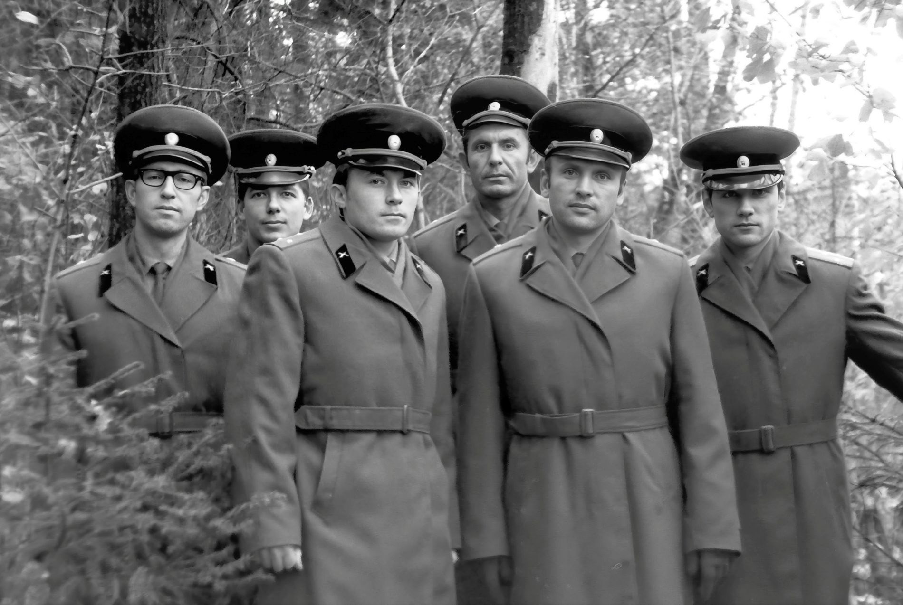
Однако кроме проблем службы в нашей части в это время 1980–1982 у офицеров стали пропадать карманные деньги во время занятий по физо, когда приходилось переодеваться и бегать-прыгать, поддерживая свою физическую форму. Оказалось, что это наш же лейтенант 1980 года выпуска из Харьковского училища проверял карманы своих товарищей. Состоялось собрание и вновь назначенный командир - полковник Сытняк, чтобы не было пятна на части и в своей характеристике на присвоении ему звания генерал-майора согласно должности объявил офицерам о переводе его на северный полигон, где он торжественно пообещал собранию офицеров исправиться. Его бес попутал на такой сбор денег для отпуска в родную деревню где-то в Украине. Через два-три года полковник не заслужил, а получил звание генерала, но жизнь вокруг и в части становилась всё хуже и хуже. Многие старшие офицеры с благодарностью вспоминали время генерала Алексеева, времена научных сотрудников вычислительного центра. Впрочем, такая тенденция распространилась и на всю страну. Пик 70-х завершался очередной упущенной возможность для страны вырваться из советской колеи. Целиться в центры империализма и мелочь по карманам тырить — всё это органически уживалось и замполитом скреплялось в единый коллектив из 300 офицеров и прапорщиков нашей воинской части. Мне оставалось лишь вспоминать одного из лучших генералов , которых я повстречал в Армии.
Оценив своё бедственное положение, решил выкинуть черновики конституции, отложил свои размышления над смыслами грандиозных проектов правящей партии, активные поступки в социальной сфере и решил обустраиваться. Однако только через 15 лет службы в Армии моя семья вселилась в нормальную служебную квартиру.
Растил двух детей, любил и страдал , играл в шахматы , фотографировал, “ торопил рассветы ”, не был партгрупоргом и в других спец структурах не принимал участия - эта сторона Армии, да и общества мне была неинтересна. В армии трудно найти баланс между властью и служением родине. По традиции Красной армии воин, особенно офицер в мои годы службы, должен быть сначала красным, а потом служить родине, как прикажет партия строителей коммунизма во всём мире. Да и понятия родина, отечество, власть в советской армии были размыты. Но большинство за дополнительную звёздочку или другой паёк шло в партийные активисты в агенты служб безопасности или во вне уставное услужение начальству. И выйти из этого порочного круга, заложенного большевиками в 1917 году было чрезвычайно трудно. Мне без помощи и опеки близких вырваться из армии было невозможно.
В ходе службы накладывались и некоторые бытовые подробности. Артиллерист Солженицын раскрыл мне глаза на ГУЛАГ, а шофёр артиллериста Толубко, живший в Гусь-Хрустальном в соседнем доме, рассказывал о страсти Главкома к женщинам и аварийному вождению автомобиля после наркомовских 100 граммов в годы войны, что и отразилось на его физиономии. Да и среди моих товарищей по службе было не мало потомков охранителей ГУЛАГа , тихо осевших в Москве после его ликвидации. В стране, где сохранилось много жертв и палачей у меня складывалась своя линия службы. При этом каких-то карьерных целей я не ставил. Жизнь сама по себе мне всегда была интересна во всех проявлениях и формах.
Полагаю, что социальные утопии 19 века были предтечей глобализма на основе достоинства человека. Наверно, Ленин, как и многие социалисты-утописты в юные годы на основе неосознанных тенденций будущего ценностного единства народов замышлял хорошее, но беда, пришедшая в Россию в виде обвала самодержавия, череды мятежей и активности всех разведок мира подтолкнула Ленина и его команду к захвату государственного управления для создания плацдарма для мировой революции. Возможно, эту же команду нацеливали и на гражданскую войну в России, самой богатой ресурсами стране мира в период своего подъёма.
Во время Первой мировой войны в России не было карточек на продовольствие, кроме сахара, чтобы население не баловалось самогоном. И уже после гражданской войны в ослабленной России (хотя Российская империя в союзе с Англией и Францией могла реализовать итоги Первой мировой войны) Сталин и его окружение на основе лозунгов классовой борьбы отвергли многовековую цивилизацию социальной иерархии общества и смогли создать для дезориентированного жуткими репрессиями народа только режим сук и секретарей , который с опорой на мифы и неразвитые социальные взгляды превратился в России в преступный режим, тормозивший развитие страны
Секретари пользовались специальными распределителями, а суки соревновались , кто больше возьмёт у режима благ за свою позицию государственника (размер или величина звания, квартиры, пенсии, льгот...), так большинство из них себя называло тогда и продолжает называть сейчас. Главная ценность России - отечество, общаг..., до личности и её интересов массы не доросли. Полагаю, что и новая конституция, и ввод войск в Афганистан накануне окончания строительства Коммунизма в СССР, и Олимпиаду 1980 года в Москве верхушка КПСС организовала для отвлечения масс от анализа результатов строительства Коммунизма , для дискретизации Армии, и для иных своих целей по зачистки офицерского корпуса и общества. За какую-такую справедливость в этой войне были искалечено более миллиона афганцев и несколько десятков тысяч советских мужчин ? Только размягчённое сознание замполитов это могло обосновать. К этому времени не только южное подбрюшье СССР оказалось мягким, но и рубль, так как в последующие годы войны за подвиги в Афганистане правительство расплачивалось чеками, приравненными к стоимости валюты, за которые и продавали героям афганской войны промтовары и продукты хорошего качества в специальных магазинах Берёзка.
Кто и каким образом в СССР, какими аргументами обосновывал внешнюю политику в Азии остаётся неизвестным. Обычно авторство и ответственность возлагается на Политбюро. Увод сил и средств усталого населения в тупик — это самое большое преступление, а потому и расследование должно быть до уровня экспертов.
В финале строительства коммунизма полностью размяк и авангард, поэтому в основном потомки аппаратчиков КПСС в 90-х года х становились не партизанами, а превращались в "новых" русских купцов. Мыслящие и самостоятельные личности в России к 1980 году были почти полностью уничтожены, а паровоз ещё шёл, но в тупик. Его остановка в 1992 году станет для населения большим шоком.
Убеждён, что Первая мировая (дезориентация, предательство элит) и гражданская война (авантюризм большевиков и экспромт обиженных масс) составили главную трагедию России в ХХ веке.
Было прервано естественное историческое развитие, убито зарождающееся гражданское общество, тенденция на активную личность. Создана политическая администрация для индустриализации и управления трудящимися в лагере социализма. При этом разжигатель войны -Германский император Вильгельм II дожил до старости с любимой женщиной, детьми и внуками, а участник этой войны Император Всероссийский был злодейски умерщвлён вместе с семьёй. Социальные эксперименты самые дорогие, поэтому-то и нужны сдержки и противовесы в современных демократических системах.
Герои, акторы (действующие лица) эпохи определяют будущее страны. Мне представляется, что отставание и тупиковое развитие России было задано преступлениями, ошибками и ложными целями начала XX века.
После огромного конфликта между рабочими классами Германии и России во Второй мировой войне, на фоне не желающих соединяться пролетариев других стран, интуитивно отпустил вожжи (смягчили хватку) сначала Н.С.Хрущёв, а потом Л.И.Брежнев, которые дали стране возможность после того как её оторвали от сохи для создания атомной бомбы и выйти на объективный путь движения социальной материи в форме общества.
Идеи нераспространения и запрещения ядерного оружия, его сокращения и контроля давали надежду на решение мировых проблем не в ядерных войнах.
"Перестройка" внесла кое-какую ясность, я стал ее сторонником ; обновление СССР и заключение нового рационального соглашения с союзными республиками была жёсткой необходимостью. Существование СССР в прежнем политическом и экономическом режиме стало невозможным (одна правящая партия и только общая собственность, социалистическое хозяйство), но "командиры и воспитатели", в своей массе не могли самостоятельно (отдельно от паханов) мыслить и тормозили ускорение, демократизацию и карьеру немногочисленных сторонников М.Горбачева в народном хозяйстве, политической сфере и в Армии. Верховный Главнокомандующий осторожничал - он и сам был в лучшие свои годы инструментом "Великого учения", к тому же у партийной элиты закончился золотой запас, иссякший вместе с падением мировых цен на нефть.
Обновление СССР и мировой системы социализма совпало с ростом демократизации административной системы страны и жёстким военным давлением Запада на обанкротившийся СССР, лекции по марксистской подготовке офицеров стали разнообразнее, зачастили молодые докладчики в ГШ РВСН. Выступал и Е.Гайдар, сотрудник журнала "Коммунист", критически относившийся к демократизации, рассуждая, что нам не построить демократию западного типа с тенденцией к союзу европейских стран. Максимум, на что может рассчитывать народ, уведённый его дедом в сторону от магистрального пути Человечества, так это на осторожное вхождение в Западный мир с демократией турецкого образца..., и он был прав, но почему-то допустил в Россию через несколько лет для нашего доверчивого (дикого) народа либерализм с диким и разрушительным уголовным лицом. Либерализм возможен в развитом гражданском обществе, и он вызревает вместе с гражданином, а население России под жёстким давлением коммунистической партии за годы советской власти было законсервировано, сохранено в качестве холопов, бесправных дезориентированных трудящихся, мужиков (как говорят в зонах их концентрации) постоянно мобилизуемых в целях выживания страны. Все сферы страны полны структурных диспропорций и далеки от того относительно гомогенного состояния, в котором может гладко функционировать рынок и тем более развиваться тенденции пост демократии.
26 апреля 1986 года произошла авария на четвёртом энергоблоке Чернобыльской атомной электростанции, расположенной на территории Украинской ССР (ныне — Украина). В ликвидации последствий этой катастрофы принимал участие Сергей Урывин, с которым в течение нескольких лет вместе в качестве военных инженеров служили в группе прогноза и расчёта траекторий спутников. Кроме службы, общим у нас был интерес к фото и шахматам. Потом его направили в другую часть, и мы удалились друг от друга. Общий смысл его песен того чернобыльского года мне представляется в том, что высокие технологии нельзя развивать в неподготовленных в социальном отношении странах. Т. е. атомную электростанцию, бомбу и ракету создать можно на энтузиазме, но правильно эксплуатировать, развивать и модернизировать эти системы невозможно без адекватного качества населения, накопленного человеческого капитала, благоприятной социальной среды. Полагаю, что атомное оружие и атомная энергетика опасны не только для неустойчивых стран, но является одной из самых главных проблем человечества, которую надо решить в XXI веке.
Коммунизм не состоялся и началось обновление и отслоение от "единого" общества трудящихся либеральной элиты (бывшей номенклатуры с собственностью), обособление криминала с целью захвата общей собственности, появились профессии по обслуживанию этой братвы, началось уничтожение слабых; появились беспризорники. После лекций Гайдара я отвечал офицерам, звонившим из войск (регионов) на вопрос "Сколько Вы ещё будете перестраиваться?" - Не меньше, чем строили государство трудящихся во главе с советской властью! Но всё рухнет в три дня 1991 года. И в России начнётся новая гражданская война, но не граждан, которые не созрели, а их представителей от всех 11 ветвей власти по моей образной классификации.
В это время генерал-майор с факультета управления для подготовки командных кадров академии РВСН отобрал меня, договорился со мной о поступлении к нему учиться в следующем году. Я был молодым майором, и кто-то вставил палку в мои карьерные ходики. Меня оставили заниматься чепухой при другом генерал-майоре. Возможно, и мне не совсем хотелось опять окунуться в суету академии, и я не настаивал. Меня заменили Васей из нашей же части, он вернулся после трёхлетнего курса, вскоре получил полковничьи погоны, но каких-либо результатов не показал, впрочем, как и вся система управления оружием трещавшего по всем швам СССР.
год ознаменовался единственным расширенным собранием офицеров всего Главного штаба не для занятий по марксизму, а для совещания на тему "Что делать? Чем и как противостоять "Першингам" в Европе и концепции "Звёздных войн". Проводил это совещание нынешний министр обороны демократической России И. Сергеев. (Кстати, его приказом я был уволен из его штаба, а заодно и из Армии новой демократической России в начале 1994 года практически сразу после участия в выборах от демократов) Это были годы фиктивного правления демократа-Ельцина, как перестроившегося члена Политбюро КПСС.
Что могли выработать офицеры 80-х, которых впервые спросили? Офицеры, кроме проблем службы, противостояли всемирному капиталу, который загнивал согласно марксистско-ленинской теории, не могли вымолвить ни звука.
Только какой-то замполит предложил будущему министру цитату из Ленина об эффективности несимметричных ходов по отношению к буржуям. Что это за ходы можно только догадываться в нашу террористическую эпоху, но уж если Ленин шёл на уничтожение миллионов граждан России, то и для ленинцев люди других стран могли идти в расчёты только миллионами. Возможно, это был талантливый замполит и он предложил эскалацию Мировой гражданской войны, хаоса и отвлечение империалистов от распадающегося СССР.
Заканчивался ХХ век, который через мировые войны, индустриализацию, социальные эксперименты и митинговую мудрость взорвал прежние социальные структуры, рухнули империи, но и устойчивых гражданских обществ оказалось недостаточно для глобального прогресса.
1987 год запомнился мне посадкой на Красную площадь лёгкого иностранного самолёта и моим участием в комиссии по проверке надёжности оповещения камчатского испытательного полигона о пролётах спутников-разведчиков американской космической группировки. Оказалось, что в результате преступной халатности или предательства полигон в течение нескольких лет получал ложную информацию о космической обстановке, т. е. были открыты испытательные полёты новых изделий стратегических ракет, а мои рапорты о расследовании этого случая десять "настоящих" полковников из разных ведомств, вероятно с ведома своих генералов, возвращали, угрожая принять меры. Возможно, какие-то меры они приняли.
Круговая порука, трусость и, как следствие этого, предательство подчинённых цвели махровым цветом в Армии противостояния Западу. Что и раскрылось полностью в ходе двух чеченских кампаний, правда в других видах войск. Что бы произошло в результате одной стратегической компании с США пусть каждый представит себе картину на свой лад. Если никто не хочет фантазировать, то может кто-то найдётся и подсчитает во сколько обошлось нам противостояние США. .
Однако в последствии был подписан Договор по открытому небу, ДОН (англ. The Treaty on Open Skies) — многосторонний международный договор, разрешающий свободные полёты невооружённых разведывательных летательных аппаратов в воздушном пространстве стран-подписантов. Подписан 24 марта 1992 года в Хельсинки представителями 23 государств-членов Организации по безопасности и сотрудничеству в Европе (ОБСЕ). Целью договора является содействие укреплению доверия между государствами через совершенствование механизмов контроля за военной деятельностью и за соблюдением действующих договоров в области контроля над вооружениями. Что сделало функцию контроля этого самого неба бессмысленной.
В это же время в шкаф для одежды, рядом с моей фуражкой вложили рулон для печатающего устройства с какой-то информационной мутью, но с грифом секретно. Я исполнял обязанности начальника группы и по виду залапанного рулона предположил, что это - провокация помощника командира по безопасности. Положено было бы написать рапорт по команде, но я его сжёг как мусор, полагая, что за рулоном никто не придёт и искать его не станет. Однако я оказался неправ. Это была не просто провокация, а провокация с ведома командира части для проверки кадрового резерва.
Обдумывая позже все эти провокации и асимметричные ходы в отношении личности, групп, общества внутри страны и в международных отношениях, я пришёл к убеждению, что не все методы и формы подходят для осуществления. Многие могут оказать разрушающее действие и опасны для самого государства - подрывают доверие к командованию, к руководству. Всё это и нужно отразить в концепции национальной безопасности. Например, был бы какой-либо совет офицерского собрания в нашей части, то я смог бы пойти туда и предъявить рулон с рапортом о провокации. Что бы было? Понравилось ли офицерам, что в части используются такие методы? Конечно, нет.
Кроме провокаций с секретами генерал мог приказать отделу из 30 офицеров с полковником во главе убирать окурки вдоль тропинки к вычислительному центру, при этом сам стоял у окна, и бог знает, о чём думал этот карьерист застойных лет, получивших звание генерала не за подвиги в боях и научные открытия. Может этим он компенсировал свою никчёмность и разочарованность в службе коммунизму, презирая подчинённых на этой самой службе. Вероятно, после выполнения приказания заслушивал доклад полковника о проведённом мероприятии. Может быть, спрашивал о возмущениях такого же служивого полковника. Мне одинаково были противны и курильщики, и эти методы проверки качества человеческого капитала в советской армии. Все эти случаи и подобные события не вызывали у меня уважительных чувств к командирам и начальникам, сослуживцам, делающих карьеру в условиях всеобщей деградации во времена несостоявшегося коммунизма. Хуже того деградация продолжилась и после моего увольнения.
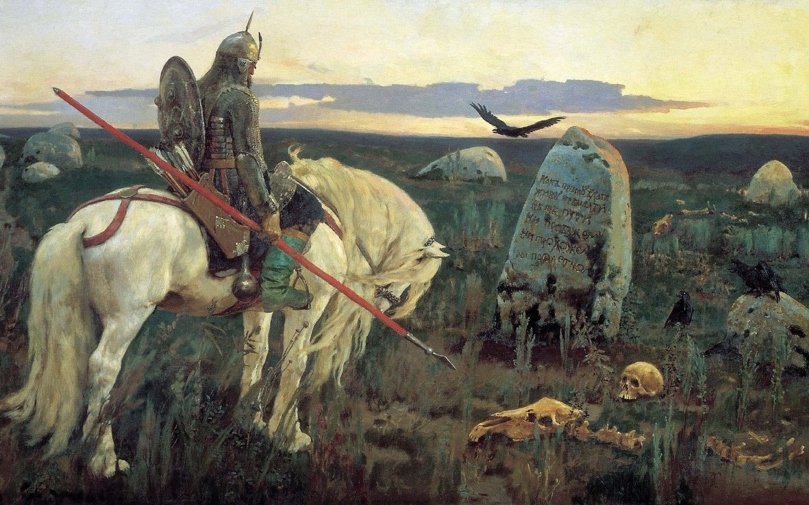
Мой самостоятельный поступок с "секретным" рулоном, вероятно, не понравился командиру, который рассматривал личный состав как средство своего кормления.
Можно было бы отправить рулон начальнику Главного штаба с жалобой на командира и тогда за такие сырые методы провокаций могли бы сделать оргвыводы по карьере командира. Но в то время мне такие варианты трудно было вообразить. Три мушкетёра, прочитанные мной в юности, предполагали приличных людей в форме.
Успешное прохождение провокаций, вероятно, служило командиру критерием для назначения офицеров на вышестоящую должность. Надеюсь, что взятки при выдвижении на должность тогда повсеместно не брали, хотя при получении квартиры ходили невероятные рассказы о первых ростках коррупции в армии.
Офицерам России надо не забывать о вероятности безысходности рыцарского пути, хорошо показанным на картине Виктора Васнецова "Витязь на распутье", где на камне у дороги есть только одна надпись – «прямо пойдёшь, живым не бывать!».
Провокации и словесный патриотизм отличников политической подготовки, готовых всегда обвинить кого-то в недостаточной верности советской системе были в полном расцвете.
Других критериев для отбора офицеров у нашего командира и замполита не было. Командир плохо соображал в современной электронике и программировании. В итоге его отбора начальников подразделений и перевоспитание офицеров-программистов и электронщиков в общевойсковых специалистов, показывающих на проверках хороший строевой шаг, ему присвоили генерала, а его первый заместитель с крепкой задницей, готовый наказать или хуже того предать своего товарища, стал полковником. Центральный вычислительный центр превратился в первый офицерский батальон общевойскового назначения. Мне офицеру-баллистику предписано было ежедневно в течение двух лет выдавать оружие офицерам, заступающим в наряд. При этом на полковничью должность к нам в отдел назначили специалиста по эксплуатации принтеров, их тогда называли АЦПУ. Мне подумалось, вероятно, он многие годы отработал стукачом особого отдела, так как с энтузиазмом начал осваивать программирование машин серии ЕС, как человек, который может всё с поддержкой КГБ. Однако программирование ему не далось даже с поддержкой особого отдела.
Всё программное обеспечение для машин серии ЕС, разрабатываемое вокруг ЦВЦ, укладывалось в простейший вариант программы Excel для совместного заполнения строк через запросы, приходящие по телефонным каналам без каких-либо функций. Ответственный генерал-разработчик от военного института за 10 лет работ представил комиссии штаба только массу не взаимосвязанных электронных таблиц, которые постоянно зависали при обработки текстовых сообщений из плохо работающих телефонных каналов связи. Хотя, до этого перехода на машины ЕС, только один подполковник Виргуш из ЦВЦ и другие офицеры на машинах предыдущего поколения смогли за несколько месяцев подобные таблицы ввести в эксплуатацию. Они формировали из сообщений телеграфного канала приличные таблицы, но и над ними никто не хотел чесать свой затылок в фуражке. Никакой оптимизации в несвободном, не конкурентном, не рыночном военном хозяйстве не могло осуществиться. Стимулов у вчерашних рабов, победивших в гражданской войне под знамёнами большевиков, не было. Не было и мира на территориях бывшей Российской империи, не говоря уж о солидарности свободных граждан в выборе своего пути.
Сколько же было написано характеристик на преданных делу партии офицеров, направляемых в центр разработки матобеспечения для автоматизированной системы? Сколько слов было выплеснуто о таланте офицеров перед представлением на новое звание? Я был в стороне от этого идиотизма, но и в звании не рос. Горы словесной трескотни, которые не стоила и гроша, но стали ещё одним фактором крушения армейских вычислительных центров.
Я имел опыт возражений, за которые получил удары от военных и заводчан. Одним нужны были доклады о повышении боеготовности за счёт новой системы, а другим деньги работникам за оборудование, не отвечающее своим штатным характеристикам. Вся эта промышленная система в годы застоя обросла воровством и взятками; ускоренно обогащались новые собственники, а обнищавшее население и тогда, и сейчас безразлично к происходящему.
ЦВЦ РВСН через несколько лет прекратил своё существование. Однако рядом открылся православный храм с иконой святой великомученицы Варвары - покровительницы РВСН и торговли.
Вскоре генерал благополучно ушёл из жизни, заместитель продолжал, с пользой для себя, делить до самой старости садовые участки, а их выдвиженцы, отличники боевой и политической подготовки, благополучно ушедшие в запас, понесли на Пасху крашеные яйца в новый храм.
Кроме всего прочего, от деятельности этих и других командиров, заставляющих дни и ночи нести службу своих подчинённых, в семьях ценностно-дезориентированных офицеров и прапорщиков подросли дезориентированные дети, которые сегодня (через 20 лет после развала СССР) не могут полноценно и честно трудиться в нынешней России.
В 1988 году меня сдвинули в списке очередников на автомобиль под предлогом, что я не отличник, по политической подготовке - у меня была четвёрка. (Ведущий семинара по марсизму-ленинизму поставил мне четвёрку, он мечтал стать полковником и выслуживался перед замполитом. Я не возражал, так как в своём выступлении не приводил цитат из классиков и последних постановлений ЦК КПСС. Этот офицер приспособленец после 1991 года работал на западную компанию и гордился своей высокой зарплатой смотрящего за кадрами. В последствии наше население не оздоровили ни мобильные телефоны, ни интернет с персональными компьютерами, ни выросшие зарплаты и даже ни импортные автомобили.
В свободное время, без садового участка, гаража и своего авто, я углубился в толстые журналы и газеты того периода. Многие мои товарищи по службе, в том числе и за счёт меня стали приобретать для себя и на продажу машины, дачные участки и всё, что можно и всё, что ещё недавно было нельзя, но плохо лежало..
В последствии об автомобиле, а равно и о дачном участке к нему я уже и не думал, не было времени на эти забавы — это было очень сложное и насыщенное для меня время. Кроме гласности началась литься кровь в национальных конфликтах в Армении, Азербайджане и других местах. Население стало резко нищать, а вокруг Власихи появились маньяки. В это время меня сделали ответственным за выдачу оружия в части. Я благополучно отбыл свой срок и меня вновь назначили ещё на год. Это было уже слишком, но я отбыл и второй срок. После чего командиру сделали замечание за введение должности ответственного за оружие, а меня выпустили из оружейки даже без благодарности. Так постепенно я начал переквалифицироваться в аналитики.
Надеюсь, наше население сможет пройти этот мой путь самообразования к 2045 году. Именно в эти годы вижу Россию демократической республикой в содружестве развитых стран. (По состоянию на 2017 год Россия в списке на 134 месте по развитию демократии).
Вопросы "Стоил ли Коммунизм великим жертвам и великого противостояния?", "Кто виноват?", "Что происходит?" "Каковы новые ценности и ориентиры?" не ставился, но он витал в атмосфере Главного штаба. Боевая учёба шла скверно, различные комиссии проверяли в основном теоретические знания для боя в полевых условиях, управление оружием и войсками никто не оценивал публично, а в быту офицеров включали в различные списки на льготы и прививали социальную трусость - полагалось только наблюдать за жизнью общества и не вмешиваться в вопросы текущей государственной политики. И, естественно, на политзанятиях не обсуждался роман Бориса Васильева "В списках не значился" - такие мероприятия были почему-то лишними, но Малую землю Леонида Брежнева мы, возможно, конспектировали. Но сегодня этого я уже не помню.
Многочисленные почтовые ящики сбрасывали многотонное оборудование для передачи двух-трёх слов в качестве команд управления. (Модем Минского завода к ЕС ЭВМ и ЗИП к нему весили почти тонну). Полковники (формально преданные делу партии марксисты-ленинцы, послушные инструменты вышестоящих генералов, с изображением на лице готовности съесть по приказу дерьмо, а на самом деле скверно обеспеченные и морально-политически подготовленные подписывали любые акты, а заводчане получали лёгкие деньги, остальные задницы вытесняли приличных офицеров из своей среды. Так был вытеснен и я из рядов перспективных офицеров Главного штаба.
Социально-политический процесс, запущенный большевиками в 1917 году не обращая внимание на обвалы крыши и стен работает и сегодня. Культ победы большевиков, подменивший демократическую трансформацию подданных в граждан после ареста Временного правительства и разгона Учредительного собрания, диктатура пролетариата и её бюрократия не способствовали гражданскому миру. Да и сама однопартийная система обросла приспособленцами, тормозился научно-технический прогресс, солидарность и развитие справедливости в обществе; население стало опасно пассивным.
Развернувшиеся в стране дискуссии вели к расколу формальной партии на демократическую и консервативную, но в Армии и других структурах раскол был невозможен, и государственный аппарат не мог работать без руководящей партии . Следовательно, дискуссии вели к развалу государства. В стране разрастался кризис. Мой любимый Карпов чуть ли не поцеловал Брежнева, в это время мне понравился яркий и независимый Каспаров. Жёсткая закрытая социальная система СССР с нищим офицерским корпусом и населением рушилась как при появлении ярких личностей, так и при замене или выемки какого-либо звена.
Застой и повторяющаяся сцена передачи ядерного чемоданчика из рук в руки кремлёвскими старцами на телеэкране шокировала весь мир. Полагаю, что и создателей этого самого чемоданчика .
КГБ страховал перестройку - подготовку обновлённого СССР, и на всякий случай вёл списки офицеров, ищущих пути выхода из сложившейся ситуации публично (демократов) и тех, кто тормозил перестройку, а потом и КГБ упустил ситуацию, а его структуры, вероятно, и сами раскололись после отмены руководящей роли КПСС. Социальным интеллектом КГБ не мог обладать, а потому и его верхушка, вероятно, после некоторых колебаний решила при постепенно вернуть всё взад. Одни только мысли о ином социальном устройстве наводили страх на каждого здравомыслящего советского человека. Это была своеобразная болезнь общества.
В ситуации наивысшей неопределённости в августе 1991 года президент СССР М.С. Горбачёв самоустранился, а руководители рангом ниже трясущимися руками взяли ядерную кнопку под свою ответственность и ввели танки в Москву для умиротворения источника своей власти - трудящегося народа Москвы. Эта решимость и трусость складывалась из желания КГБ взять власть под свой контроль, да шкурными интересами членов Политбюро. В сети появились сообщения, что Крючков подслушал разговор Горбачёва с Ельциным и Назарбаевым, в котором речь шла о замене Крючкова, Павлова, Пуго, Язова.
Однако исправить ситуацию в Союзе по плану ГКЧП на возврат к советскому социализму не удалось. Применив силу в Москве, комитету пришлось бы применять силу во всех республиках СССР и не только в столицах. Чрезвычайно возмущённый президент Ельцин и небольшая горстка от народа Москвы показали масштабы возможного насилия, вероятно, следившему за ситуацией в Москве из Крыма М. Горбачёву.
Сценарий ГКЧП и очередная авантюра КПСС и КГБ то ли удалась, то ли рухнула в три дня. Расколотая верхушка коммунистов и комсомольцев, в анкетах которых было записано, что они делу партии преданы , в России и в других союзных республиках не смогли конструктивно договориться и плавно перестроить страну, а попытка ГКЧП подтолкнула обвал СССР и недоверие к Армии. Народ России и других союзных республик стал интуитивно искать выход и естественно пошёл по рукам местных лидеров. От местного исторического времени и характера лидерства сложились разнообразные социальные формы государственного устройства бывших республик. В целом считаю, что отступление ГКЧП оправдано и надо было считаться с мировыми трендами: демократизация, либерализация, гарантии прав человека, ценностная ориентация, устойчивое развитие. Если бы у них не тряслись руки и они твёрдо заявили свой метод стратегии на сближение с технологически развитым Западом, то я бы мог им поверить. Но возвращаться просто назад - никому не хотелось.
В эти годы я увлёкся настольными компьютерами (персоналками), знакомился с московскими компьютерными фирмами. Сводил даже в Международный компьютерный клуб, который располагался в Политехническом музее своих коллег из управления автоматизации Главного штаба, но всё было напрасно. Войска по плану снабжались персоналками из Минска. Такое ощущение было, что по плану мы катимся и в пропасть. Так оно и вышло. 90-е годы зародили во мне неугасимую любовь к компьютерам, демократии и ценностям человека. Хотел даже организовать компьютерный клуб на Власихе. Предполагал, что они появятся по всей стране. Однако на Власихе вскоре появился православный храм и детская православная воскресная школа. Храмы вместо инновационных компьютерных клубов вскоре заполонили всю Россию. Кто и зачем сделал этот уклон в сторону от современных ценностей мне непонятно. Из всего религиозного мне нравится только слова в панихиде про вечную память об усопшем, так как о гражданине в эти годы нечего сказать. Хоронили рабов.
В 1991 году, после ГКЧП, развала государственного управления, распада СССР и Армии с молчаливого согласия нищего телом и духом офицерского состава меня в числе других офицеров строем вывели из КПСС методом выдачи учётных карточек на руки.
К этому времени в головах единого блока партийных и беспартийных совсем растаяли лозунги научного коммунизма. В головах трудящихся и правящей бюрократии образовалась водянка. Большое количество населения порывалось ко Дню 7 ноября в годовщину Октябрьской революции 1917 года и 1 Мая выйти на улицу с красными флагами, но трибуны с возгласами "Верной дорогой идёте" отсутствовали и они мирно расходились по домам.
Я воспринимал политику до этих пор со стороны, но после глупостей ГКЧП в свободное время стал непосредственно участвовать в Движении демократических реформ Г.Попова , А.Яковлева , А.Собчака.. . На первом съезде ДДР 14-15 декабря 1991 я был в военной форме (решил, что армия хоть одним мундиром должна участвовать в демдвижении). На съезде я пытался убедить прораба "Перестройки" А. Яковлева, чтобы похлопотал на верху (видимо, у того уже к концу года не было полномочий и сам съезд, собравший авангард "перемен" из населения СССР, опоздал по времени, как и все инициативы Горбачёва). Говорил А. Н. Яковлеву, что в сложившихся условиях надо бы пока сохранить единую Армию до становления гражданского общества и традиций демократии в республиках бывшего СССР в качестве гаранта мира во время жарких дискуссий внутриполитических сил. Явлинский призывал сохранить пока единую валюту - рубль и традиционные экономические связи. Но мои опасение за преждевременное расчленение Армии и передачу вооружений освободившимся республикам и народностям никто не услышал. Гайдар с Чубайсом переиграли Явлинского. Похоже на этом съезде делегаты вообще не слушали друг друга, а только выступали. Увы, культура общения в теперешней России не развита даже среди учёных обществоведов. Вскоре я пришёл к выводу, что начинать надо с развития достоинства у всего населения, а не с демократии.
В.В. Бакланов посмотрел на меня долгим взглядом и, ничего не сказав, покинул съезд раньше - раскол его структуры был виден на его лице. Стратегии в создании новой политической системы не было. Сработал экспромт СНГ. Вскоре члены Политбюро КПСС пересели в кресла Президентов своих республик, руководители всех рангов стали искать и менять бухгалтеров ежегодно на всех уровнях, полагаясь на стихию либерализма, рыночную экономику и эталон в качестве западной демократии или азиатских автократий. Бухгалтера составляли балансы, считали и докладывали об убытках, но организовать народ, нацию не могли. Не учли по незнанию, что агрессивность, доминирование и стремление к иерархии – начало всех начал в социальном движении любого толка. Тем более, что после учения Дарвина о естественном отборе и эволюции, социальных революций Европы и Азии на сцену вышел серый человек и отдельные романтики демократических реформ, к которым принадлежал тогда и я. Да и теперь считаю, что по мере сил, средств и знаний каждому человеку надо вносить свой вклад в становление современного государства.
Демократического движения не сложилось ни сверху, ни снизу. Республики с вновь назначенными Президентами начали свой путь вне СССР. В России это время формировались олигархи и авторитеты, на залоговых аукционах приобретая или захватывая общественную собственность и ладили вывоз её не в Сочи, а уже в страны-победители, в страны "золотого миллиарда". Повторилась история вывоза капитала из России большевиками после 1917 года под различными предлогами.
Летом 1992 году мне отказали в учёбе заочно в Академии Госслужбы под предлогом "некому служить". Хотя через несколько лет наш центральный вычислительный центр во главе с генералом ликвидируют "за ненадобностью". Нельзя на программистов и электронщиков надевать противогазы - рухнет кибернетика в войсках. Так же как, например, нельзя периодически строить в общем строю Управление внешней разведки, проверять стрижку затылков и оценивать их общевойсковую подготовку на всякий случай. Рухнет разведка. Так и приличные программисты после таких занятий покинули ЦВЦ и теперь там что-то похожее на овощную базу.
Каждый командир или колхозный бригадир начали править на свой лад. Вход в социальный тупик осуществлялся под жёстким контролем большевиков, а выход - пошёл стихийно.
Во время отпуска, чтобы самому разобраться в происходящем, я поработал в исполкоме Российского отделения ДДР, участвовал в Форумах сторонников демократических реформ, на которых было много эмоций сторонников и мало конструктивных решений.
В это время на семинаре Молодые лидеры для новой России в академии общественных наук при президенте я слушал Анатолия Собчака и познакомился с генералом Махмутом Гареевым. Он высказался за сохранения военно-научного потенциала Армии, и я имел с ним непродолжительную беседу.
Руководитель исполкома РДДР поручил мне наладить связи с демократически настроенными генералами и офицерами, что я с удовольствием и исполнял.
Замшелость и трусость реформаторов из бывших активистов помогла КПСС и КГБ организоваться и уже тогда саботировать некоторые рациональные действия демократов.
В августе "боевой" полковник В. Садовник, контуженный в Афганистане, с которым я познакомился за лето, с моего согласия оформил решение министра обороны и меня откомандировали в группу обеспечения советников министра обороны по социальным вопросам, которую курировал В.Уражцев .
До конца 1992 года в условиях всеобщего хаоса я за полгода прошёл 3-летний курс Академии госслужбы. Взаимодействовал с Верховным Советом и общественными организациями в процессе подготовки пакета "военных" законов, участвовал в конференциях по проблемам национальной безопасности, познакомился и лично беседовал почти со всей политической элитой России. Но не ну́жды населения и проблемы безопасности были главными тогда. Правильно, под руководством какой-либо политической силы, с участием госаппарата, начать вливать нацию в глобальное мировое экономическое содружество тогда никто не мог. Мастер строительного дела Б. Ельцин обошёл прорабов перестройки и начал с обвальной приватизации, его сподвижники - с юридического оформления уже поделённого пирога госсобственности, а народ, сбросивший с себя казённые маски советикуса - удивился своей собственной роже и начал входить в освободившееся социальное пространство России с чёрного хода. Стол и стулья, за которым поделили лакомые куски в 1992, делят и сейчас. Чиновники старого госаппарата начали погружение в коррупцию, а народ, лишённый опыта гражданственности за годы советской власти, организовывался в неформальные агрессивные группировки для добывания материальных благ.
В декабре 1992 года, в группе помощников депутата В. Уражцева присутствовал на VII Съезде народных депутатов Российской Федерации , где за продолжение реформ решительно выступил Ю. Лужков. После распада СССР и упразднения высших органов управления появилось много безработных из числа высших чиновников и их экспертов, сплотившихся вокруг Верховного Совета. По существу, они и уволили на съезде команду молодых бухгалтеров Гайдара.
Знаменитый Чубайс мне не глянулся - молодой, но приобщённый к государственному управлению, он мог вызывать лишь зависть сверстников, карьеристов из братских республик, стремящихся любой ценой обосноваться в Москве. Им, несомненно, были довольны воры в законе, которые захватывая собственность у беспомощных бухгалтеров, начали усиленно комплектовать государственный аппарат из бестолочи, с которой было легко договориться по поводу раздела сфер влияния и общего пирога. Но более всего тот кошмар Кремлёвского дворца поражал меня суматохой в действиях команды Президента и опасностью затеваемых политических игр Хасбулатовым с использованием декораций Верховного Совета и риторики парламентской демократии в неподготовленной к демократии стране. "Строитель" Ельцин и его команда не смогли договориться с Верховным Советом под руководством "профессора" Хасбулатова. Ельцин в конце 1992 года был встревожен; его команда, как мне представлялось, была смертельно перепугана. Для меня Ельцин не был авторитетом, но и тонкое издевательство Хасбулатова над Ельциным и его командой меня не радовало. В целом я поддерживал курс на демократизацию под руководством Президента, под водительством Ельцина, на укрепление президентского правления в стране с мирной заменой советской системы современным парламентом и системой местного самоуправления. Но мои надежды не осуществились. Да и независимые наблюдатели весьма скептично оценивали постсоветскую ситуацию
В кулуарах съезда беседовал с Жириновским, симпатичным мне в ту пору политиком и на мой вопрос "Что бы он предпринял с ВС в случае избрания его Президентом?" ответил, что он смог бы распустить ВС и назначить выборы делегатов в новый парламент уже в 1992 году. Он интуитивно чувствовал и имел мощную поддержку от бывшего КГБ или ГРУ, что агрессивность, доминирование и иерархия – начало всех начал в общественной жизни народа. По моему мнению сегодня яркие личности в России обычно являются тайными агентами или опираются на спецслужбы своего или иного государственного аппарата. И это индикатор упадка или до пределов усталого и разрушенного общества, народа, нации.
Взаимная неприязнь Ельцина и Хасбулатова, неумение договориться и провокации по отношению к Дудаеву и завязало в 1992 году чеченский узел. Молодую демократию России бездарные политики столкнули с патриархальным народом Кавказа, ревностно следившими за действиями государственной машины с момента покорения Кавказа царской Россией.
Либеральная Россия для 50 млн качественно нового населения возможна через 100 лет или позже, но называться она может как ценностно-ориентированная без уклона в либерализм, как антитеза силовому социальному управлению. Либерализм сейчас - такая же утопия, как и коммунизм вчера. Россия отстаёт от развитых стран и никогда не станет процветающей в теперешнем понимании западного образа жизни. Процветание России возможно только при понимании большинством своих рациональных ценностей, в том числе и либерализма (свободы) как одной из 10 основных равнозначных ценностей, на новых принципах глобализации и информатизации цивилизации объединённых наций. Процесс этот сложный и ошибок не избежать. Остаётся надеяться, что строительство новой глобальной системы обойдётся меньшей кровью, чем попытка соединения пролетариев всех стран в прошлом веке.
Молодых и ярких реформаторов заносит в сторону, а пожилые и мудрые уселись в кресла председателей впереди созданных ими движений к демократии. Они потеряли былой энтузиазм и веру в реформы, перешли в оппозицию к не сформировавшейся демократии.
Так получилось, что, горя желанием стать в позицию демократа, я вместе с Гавриилом Поповым и Анатолием Собчаком оказался в демократической оппозиции, а созданное Российское ДДР (РДДР) тоже оказалось не ко двору - игры в оппозицию возможны только в стабильной демократической стране. На период реформ оппозиция реформаторам должна быть урезана законом, а то народ помешает и тем, и другим своими нерациональными действиями. Криминализация — это следствие либерального подхода к реформированию страны, ответный ход народа на непонятные шаги реформаторов. Либерализм и интенсивное развитие экономики уходят в прошлое. Наступает эра ценностно-ориентированных людей, осознающих собственное достоинство.
Обвал реформ Горбачёва, основанный на ускорении работ утомлённого народа, привёл к всплеску либерализма в России для личного интенсивного обогащения. Нынешняя трансформация России и развитых западных обществ, надеюсь, будет настаивать на переносе интенсивного развития из сферы материального производства в сферу разума, создаст ценности пост либерализма на основе устойчивого развития инновационного общества. Надеюсь, что огромные материальные ресурсы в личном управлении уйдут в прошлое.
В конце декабря 1992 года "военному" министру П. Грачеву некогда было заниматься социальными программами, да и советники не показали себя, их отправили в отставку, а группу обеспечения распустили. Причём перед этим от депутата В. Уражцева через его помощника мне было сделано прямое предложение вместе с другими прикомандированными офицерами встать на сторону Верховного Совета. Я отказался, сказав, что Верховный Совет должен конструктивно помогать Президенту Б.Ельцину и его команде в проведении демократических реформ.
На том съезде Виталий Уражцев подвёл к своей группе помощников Сергея Станкевича и, указав на меня, что-то ему сказал - полагаю: "демократы бегут к нам)". Это была провокация. На съезде оформился Конституционный кризис в России (1992—1993) .
Провокации в политике не новость, но я к ним не был готов. Сразу после съезда я покинул депутатскую группу Уражцева и по сути ушёл из Армии из-за пекла противоречий между разными командами, в списках которых я не значился и вернулся в воинскую часть, где начинал службу лейтенантом и продолжал состоять в штате. Дослуживал свой срок под руководством местных "командиров" после трех лет командировок по "полковничьим" должностям, на которые меня назначали распоряжениями Главкома и Министра. Теперь я уже совсем не вписывался в строй, отстающей от меня в "образовании" молодёжи и меня, как белую ворону, шустрая бестолочь в погонах начала задирать. Мне было противно, но и из Армии уйти было трудно. Находил отдушину в общении с А. Астащенко и другими персонами демократической тусовки Одинцовского района. Население легко мобилизовывалось дворниками на уборку территории вокруг дома и "плевать хотело" на инициативу граждан, пусть и с академическим образованием - привычка подчиняться чиновникам, даже в лице дворника, пока выше уровня гражданственности населения и, видимо, останется таковой долго.
Василий Садовник по указанию Виталия Уражцева (весьма вероятно, активного агента КГБ) лез во все дыры демократического движения. И делал это, по выражению самого Уражцева, плохо, так как думал больше всего о своём жигулёнке.
Впрочем, в это время КГБ начали консервировать хрупкую надежду москвичей. А лидеров от демократов просто-напросто держали за руки, иногда успешно подменяя их собой. Из чего в последствии образовалось авторитарное государство с законсервированной свободой.
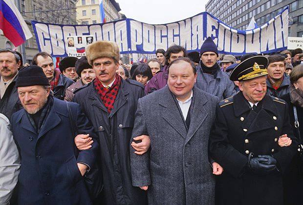
Василий Садовник держит за руки Глеба Якунина и Егора Гайдара на шествии 28 марта 1993
года.Фото из книги Олега Мороза « Как удалось отстоять реформы » (М.2018).
В тревожном апреле 1993 года, во время отпуска ездил на референдум в город Иваново наблюдателем от РДДР. "Родина Советов" проголосовала против власти Советов за доверие Президенту, но за новый курс его Правительства молодых экономистов и бухгалтеров. Кстати, наблюдателей от демократов чуть не побили тогда в гостинице "Турист" подгулявшие молодые коммерсанты от криминальных структур, которые чувствовали себя хозяевами подаренной им свободы - об опасности криминализации страны я тогда написал, но в исполкоме РДДР не придали таким мелочам значения, всё-таки благополучно вернулись, а то, что свободой начали пользоваться в основном бандиты мало кого волновало.
Я вновь решил учиться, но в июне 1993 года, как и в июне 1992 года командование не дало мне разрешение на поступление в академию государственной службы при Президенте заочно, грубо нарушив мои права под предлогом, что нет мне замены в боевой работе. Так защищая президента, можно оказаться беззащитным от непосредственного начальника. Я пытался жаловаться, но бесполезно: мои права и "целесообразность", рождённая в головах "командиров", пришли к противоречию, которое разрешилось не в мою пользу. В застойной Армии выдвигались секретари и всевозможные штатные и внештатные члены и бдительные товарищи . Вероятно, прапорщики делопроизводств частей центрального аппарата, лишённые складов, в большинстве своём вербовались в секретные агенты КГБ и контрразведки и с удовольствием докладывали, а если хотели, то и клеветали на офицеров. Всё это давило на достоинство человека и вызывало недоверие в офицерской среде, к уничтожению Армии, когда её личный состав слит с окружающей серой массой. Институт прапорщиков новой Армии Росси следует ликвидировать. Их места должны занять старшины и сержанты. Тем самым будет убран ненужный барьер между солдатами и их непосредственными командирами. Преобразование срочной службы в профессиональную пройдёт проще.
Возле меня многие товарищи по службе получили "свои" полковничьи погоны для своей серой формы. А наиболее шустро козырявшие о достижениях автоматизации боевого управления и связи - генеральские погоны на ту же серую форму. Создавало и расширяло свою сеть и КГБ, её "дятлам", как правило, предлагались нормальный рост карьеры и получение льготных материальных средств: квартира, машина, путёвки... В целом вся страна от мало до велика была охвачена пустыми клятвами в верности курсу КПСС, не мешавшими воровать, пьянствовать, лишаться ценностной ориентации и уже с 50-х годов после восстановления от войны тормозили развитие страны, контролируемую инициативу граждан, а во время перестройки лопнуло КГБ от взаимного стука "дятлов". Клятвы и обещания лучше давать только Богу.
После драмы октября 1993 г ода, когда авантюристы оживили декорации советской власти (Верховный Совет без руководящей роли КПСС) и попытались силовым методом под вывеской ущемляемого парламентаризма на старых декорациях включить в ход реформ свои зачастую личные интересы, я уже не мог пассивно участвовать в происходящем. По своей инициативе я выдвинулся кандидатом в депутаты от Российского движения демократических реформ по 111 Одинцовскому округу, несмотря на "уговоры" главного воспитателя Ракетных войск и полного отсутствия поддержки со стороны исполкома РДДР, так называемого конструктивного демократического движения. Россия после рухнувшего Союза была не демократической и развивалась интуитивным путём. Народу нужен был длительный конституционный процесс для определения и накопления своих ценностей и закрепления в поколениях ориентиров демократического общества, выработки навыков для устойчивого развития своих регионов.
{kind=link}
Первые свободные выборы дали "россиянам" новую Конституцию, а мне реальное ощущение уровня свободы, общей и политической культуры, роли администрации, доли демократии и прав личности в России, степени готовности народа к западному опыту либеральной демократии. В нашем округе победил В.Лукин , он мне понравился на одном из совместных выступлений, но мы, пожав с ним руки, уж более не встречались. Назвав свою партию «Яблоком», они только запутали слабое политическое сознание народа.
Для меня главным было участие и потому в листовку я включил фразу "Голосуйте за Героя нашего времени..." и усилил реакцию толпы, делившей общий пирог. Это были первые выборы вчерашних рабов, хуже того холопов, которым разрешили иметь собственность..., собственное мнение, и которые, сбросив свои социальные маски, захотели сразу стать господами. Коммунистический карнавал с масками от диктатуры пролетариата завершился, сограждане обнажили свои лица и приступили к свободной жизни. Многие содрогнулись, этот момент истины многих шокировал и им опять захотелось вернуться на прежний карнавал, но увы..
Всякая конструктивная активность в то время была на пользу раскрепощения населения, его свободы, демократии и во вред героям, рискнувшим отстаивать общие, а не собственные интересы.... Ускоренное освоение западного образа жизни и конструктивная активность народа, его гражданская позиция в различных профсоюзах, партиях и движениях и теперь может быть единственным условием наших успехов в будущем. Для этого надо направить социальное управление на единении народа, понимание своих проблем, конструктивного их решения на местах с целью решения задач повышения качества жизни всей России, а не противостояния друг другу под руководством непримиримых борцов и пламенных революционеров или их благодарных потомков? Только после решения социально-профессиональных проблем в бригаде, коллективе предприятия зарождается солидарность народа, социальная база для решения политических проблем общества. А пока народ продаёт возможности своей качественной жизни за зарплату в конвертах и дешёвую водку, от которых не в силах самостоятельно отказаться.
Конечно, демократы не объединены, так ведь и жёсткое объединение большевиков не привело Россию к процветанию. Пусть десятилетиями в условиях президентской республики складываются партии, а лучше элиты... не для борьбы за власть, а для конкурса на право 5% улучшения управления Россией в очередной пятилетке ХХI века с плавным переходом к середине ХХI века к всеобщей элите разумного народа отдельно взятого государства и в конце века к разумному социальному устройству на Земле.
В конце декабря 1993 года, после принятия новой Конституции России с ориентацией на права отдельного человека, а не коллектива (общности) как в предыдущей, мои "командиры и воспитатели", вдохновлённые поражением "демократов" на выборах в парламент, устроили мне зачёт по боевой подготовке, поставили двойки и понизили оклад, строго указав мне на место в строю. Коллектив опустил глаза - да и в Армии он запрещён. Начиналась травля неугодных. Своры брошенных властью "сук" готовы были разорвать любого..., указанного новым хозяином, который, к счастью, на тот момент не объявился и у меня возникла надежда на появление в России самодостаточных инновационных личностей с развитыми горизонтальными связями.
В январе 1994 года я снова вышел из строя "без команды". На местных выборах по городу Одинцово "командиры и воспитатели" уже из рук вырывали мои подписные листы (знали ли они, что тем самым расчищают дорогу в органы государственного управления иным, мало кому подчинённым субъектам, из рук которых они не посмели бы вырвать ничего. Так и случилось позже - одна из самых больших армий мира не может теперь защитить свой народ от своего же криминала, да ещё и поставляет туда обученные кадры). Они наивно считали, что как военному человеку мне не следует активно пользоваться своим избирательным правом. Все еще надо было голосовать по команде, как в старые добрые времена, являясь строем на участок для голосования.
В феврале 1994 года после нескольких лет участия в демократическом движении и борьбы за принятия новой Конституции России с прямым действием статей по правам человека я был уволен из Армии новой России с пособием, но за 24 часа в назидание молча стоящим в строю по сложившейся "традиции", которая не щадит ни космонавта, ни первого министра..., святого. Государственное управление пока пусто ценностными ориентирами, оно даже и не от Бога, хотя должно быть таковым, к ценностям человека госаппарат призывал и Христос, которого тамошняя "священная" власть распяла "за 24 часа".
Надо уходить от "традиционной концепции лидерства" основанного на воле Бога, которого до пришествия на землю Сына Божия люди представляли, как всемогущего Творца, грозного Судью, пребывающего в неприступной славе. Иисус Христос дал новое понятие Бога, как близкого, милосердного и любящего Отца - “Видевший Меня, видел Отца” — говорил Иисус Христос (Ин 14:9). И несмотря на это слово Власть встречается в Библии в различных сочетаниях несколько сотен раз. Аналогичная ситуация и в нашей Конституции.
Одни офицеры армии рабов мне позавидовали, другие стали наблюдать как поможет мне мой духовный Отец в этой ситуации.
Если бы на моём месте был солдат, решивший проявить гражданскую инициативу, то его могли и убить ногами свои же товарищи, сержанты, прапорщики, а офицеры в этой ситуации могли промолчать. Всё это усугубляло развал старой советской Армии при отсутствии каких-либо шагов в строительстве новой демократической Армии. Чубайс и Гайдар, видимо, считали, что рынок и в Армии сам создаст новые отношения, когда старший не будет вытирать задницу младшим (смотри фильм Михалкова Ослеплённые солнцем).
Мои добровольные помощники по "движению реформ" оказались в худшем положении, и нам оставалось только взаимное сочувствие и надежда, что демократия удержится в России и новые законы не дадут народу, вновь погружённому в мерзость нищеты и безработицы растерзать и неокрепшую демократию вместе с её конструктивной оппозицией.
Через неделю военный прокурор Ракетных войск четыре часа убеждал меня, что увольнение "оформлено" правильно (т.е. машина государственного управления, звеном которого и он является, движется в нужном направлении) и идти в суд для защиты своих прав не следует. Мне и самому не хотелось возвращаться к " боевым друзьям ", с усердием помогавшим "командирам" проверять мою боевую подготовку и оформлять увольнение из своих рядов. И это после 15 лет совместного ратного труда... Они честные офицеры и как всё население ни в чём не виноватые и я о них уж и забыл сейчас в 1996 году, а некоторым отвечаю на приветствие - Бог им судья . Некоторые продолжают служить... свободной демократической России, а многие убежали из Армии по тем или иным причинам, не дождавшись поощрений за своё усердие в службе вышестоящему начальнику. Бывшие активисты и партгрупорги, гебисты торгуют на рынках, используя наёмных работников и жёсткие методы эксплуатации вплоть до убийств бывших товарищей, ставших теперь конкурентами в бизнесе. В случае отката системы они же могли бы вновь ударить себя в грудь и выйти в активисты борцов за права трудового народа. России нужен новое ядро офицерского корпуса из среднего класса для солдат профессионалов и ускоренное увольнение мордатых генералов. Но средний класс продолжает накапливать ресурсы и переправлять их за границу, а в профессиональные солдаты мало кто идёт.
Россия остаётся во тьме... национальных границ, таможен и свободных внутренних базаров. "Деловые люди", используя противоречия сегодняшнего дня, продолжают грабить страну, карманники центральных регионов осели в Москве, а народ продолжает вымирать в пьянстве.
Режим управления Армией через КПСС ( основы основ строительства и разрушения Армии, организатора всех побед и поражений ), под присмотром КГБ , контрразведки и личной инициативы командиров по досмотру через отдельных подчинённых тормозил развитие мужского населения, замещая инициативу и мысли воинов, конспектами первоисточников, постановлений съездов и партии, недоверием друг к другу, вынужденно организованную в вертикальные цепочки из "пустых" личностей в погонах, способную только смотреть в рот начальству или подавлять подчинённых, более того воевать со своим народом. Пресекалось свободное и самостоятельное вне рамок марксизма-ленинизма и мышление гражданской интеллигенции. Горизонтальные отношения были скудны и вызывали подозрение их инициаторов. В казарме три "боевых товарища" могли бить четвёртого, а остальные 70 всё это научились не замечать (опыт войны в Чечне подтверждает, что 3–4 храбреца могут сковать или уничтожить роту). Элиты не любят Армию , офицеров. Десятки тысяч призывников уклоняются от службы, а другой Армии у России нет. Новая Армия и новые офицеры быстро рождаются только в крови и победах, медленно выправить положение можно только десятилетиями мира, больших денег и адекватным времени содержанием военнослужащего, но ни того, ни другого в достаточном количестве нам никто не даст. Нет даже методических разработок и толкования Конституции для воина. "Измена" утомлённого и дезориентированного народа будет дорого стоить России, возможно и рождением в крови новой Армии... и новой конкурентно способной промышленности (к сожалению, славится только "Калашников" ). Крови и народа много, но, чтобы её меньше лить нужны талантливые полководцы для побед и не только военных. Ячейки партии не работали с преступностью - там сейчас авторитетные и содержательные лица.
Несмотря на годы, проведённые в заботе обо мне со стороны КПСС, я хотел быть активен и после увольнения, но Верховный Главнокомандующий в те времена не считал подчинённых. Активистам демдвижения вновь появившиеся кадровики от демократов устраивали тестовые испытания на профпригодность по западным тестам, массовое движение свободных людей пугало лидеров, привыкших работать с холуйским меньшинством и безропотным большинством, да и толкаться локтями среди новых "демократов", которые считали, что их и так много, а диванов возле Б. Ельцина мало, я не хотел. Вспомнилось, как некоторые отличники политической подготовки доказывали нашему замполиту, что они отличнее других отличников. Нынешние демократы стали говорить, что они демократичнее иных демократов. Видимо, качество населения таково, что мы способны пока только на третьеразрядные успехи. Появились термины "демшиза", "дерьмократы" и т. д. На одном из форумов демократических сил В. Смирнов объявил просьбу военнослужащим собраться ..., а потом сказал, чтобы военные возвращались назад и не говорили командованию, где были: мне было противно. Наметился явный курс на сдерживание политических реформ. Ельцин с Гайдаром и Ясиным, видимо, сконцентрировались на экономике и отказались от поддержки массового демократического движения. Это походило на предательство. Изменение курса в ходе демократизации страны вновь разобщило население, уничтожило первые ростки социального капитала, становления гражданского общества. СМИ стали сравнивать российскую демократию с развитыми демократиями, пугали ошибками активных граждан. Суверенные теоретики и чистоплюи оказались сильнее и погубили ростки демократии снизу. Забыли, что без навоза не будет урожая. А нужно было лишь усилить милицию и проводить демократизацию страны методами особого переходного периода. Слава Богу, что я не с Дальнего Востока прибыл на форум и мне недалеко пришлось возвращаться. Потом это всё стали называть курсом эволюционного развития. Может поэтому позже возникла "Дальневосточная криминальная республика", да и все общественные отношения стали развиваться по криминальному сценарию. Например, вместо демократических активистов Дудаева советники Ельцина своими неумелыми действиями превратили в боевиков, в неконтролируемых федеральным центром вооружённые формирования в горах Чечни.
Давнишняя связь или трусость и недальновидность самого или окружения больного Ельцина приведут Россию в очередной тупик с борьбой проходимцев за власть и формированию центров легального захвата власти структурами бывшего КГБ. Авторитетных и адекватных лидеров политических партий после резни гражданской войны и почувствовать собственное достоинство гражданина население России и за 300 лет не сможет создать и восстановить хотя его ростки. Не только население, но и правящий класс оказался в колее мировой революции на основе обще собственности и власти государства. Такова цена переворота большевиков 1917 года.
В исполкоме РДДР с трудом могли решать только свои проблемы, причём уровень "революционного" исполкома по моим оценкам стал ниже парткома среднего колхоза времён позднего Брежнева. Отказавшись от политического лидерства, вожди "Перестройки", не сумели создать умеренного и организованного демократического движения, распылили силы на оппозицию друг другу. Те, кто и позицию то свою не понимал, оказались разрозненными и на очередных выборах их обошли "Женщины России". После чего они удалились из конструктивной оппозиции на дачи или разъехались по заграницам с рассказами о положении в России, где многие народы и народности получили свободу и оружие в придачу.
Процесс налаживания внутренних и внешних отношений пошёл... А по существу вливание в мировое сообщество по одному. Уезжают те, кто сумел приватизировать лакомые куски общего пирога. Всё это затормозило развитие нового общества в России. Население посчитало себя обманутым либералами.
Единицы, зарабатывая себе на хлеб, продолжили активную общественную работу. Среди них мне симпатичен С.Федоров и К.Боровой .
В России стали возникать партии дешёвой колбасы и любителей холодного пива -"Мужчины России", сторонники фирмы "Анкл-Бенс", обещавшие завалить страну рисом и кетчупом, "готовились" выдвигать своего представителя в Президенты России и собирали подписи в Петушках.
Лидерам ДДР, находящимся в конструктивной оппозиции, я не годился. Они разделились и стали конкурировать друг с другом. Не получив достойного места в системе управления страной, они переходили в оппозицию на дачах или становились пассивными и бросали демократические структуры, движения - тысячи активных демократов, по существу, оказались обманутыми и хуже того преданными. Бизнесменам я не подходил, там господствовал криминал и несостоявшийся публичный политик для них хуже пьющего минта.
Случай привёл меня в мэрию Москвы на должность ведущего специалиста и любимую работу консультанта по компьютерам . И с осени 1994 года я начал преподавать основы применения компьютера
Находясь в персональной позиции, конструктивно сею зерна вечного, доброго... для булок, пирогов с капустой, которые испекут когда-нибудь и в России для импорта. Возможно, это будут граждане 90-х годов рождения, появившиеся на свет в качестве гражданина, Личности для мирового экономического хозяйства, а не трудящегося, Инструмента для построения Коммунизма в одной отдельно взятой стране. Рекомендацию, которую дал мне Гавриил Попов, повертел в руках помощник управляющего делами мэрии и, вероятно, бросил в корзинку для бумаг.
Не впервые меня оставили сподвижники и, сильно не расстроившись, продолжил учительствовать.
А мои бывшие "командиры", отвоевав с блеском со мной, укрепили дисциплину, повысили боеготовность и "честно" получили генеральские звания, а когда началась война в Чечне, молча наблюдали за “доблестью” коллег, тройным кольцом силами дивизии, окружающих роту в селе, берущих на прицел каждого противника, а потом после применения установок "Град" по селу, пропускающих по "недоразумению" их из кольца на виду у публики всего мира. Мои бывшие начальники меняют штаны с лампасами, кресла на больший размер для своих задниц и радуются своей стратегической недоступности. Некоторые из них давали, да и сейчас дают советы высшему руководству страны, но молча наблюдают, как и другие генералы "власти" не только за мерзостью непрофессионализма, но и за участием криминальных структур в выборах глав администраций. Они завоевали свои лампасы, продолжая традиции гражданской войны, за жесткое руководство подчиненными в мирное время и соглашательство с руководством и генералами от ВПК. И поскольку я консультант органа управления, то позволил отрастить в знак неприятия сложившейся ситуации только бороду
Символ РДДР - "Буйвол" или "Корова", видимо, точно отражает положение дел в России, которой предстоит долгое "пережёвывание" ценностей демократии , а при нападения "волков", каждый вправе рассчитывать только на себя. Советники по охоте на волков в нашей стране руководящих молодых бухгалтеров отсутствуют, а некоторых претендентов для оценки их мастерства со щупленьким Суворовым и поставить рядом нельзя, за Державу обидно.
После бестолковщины 1996 года и вынужденного продления полномочий Ельцина на выборах мне удалось немножко отдохнуть и развернуть проект " Военной академии в интернет ", который поддержал депутат Н. Московченко, но чиновники от мэрии проект информационного узла тормозили, да и наша команда не смогла проявить настойчивость, и я его сделал за свой счёт. Считаю, что Перестройка Горбачёва и Преобразования Ельцина объективный процесс социального движения, окрашенный российской бестолковостью. Именно так я и оцениваю этот период, а кто и что говорил или делал в эти годы подвижки социальной системы в России не так уж и важно с исторической точки зрения, если не было явных преступлений против конкретного человека.
На своей странице - “МИР БОРИСА МАЙОРОВА” я начал показывать проблемы преобразований и варианты решений безопасного вхождения в мировой рынок и обустройства России в мировом сообществе развитых стран.
Жизнь неповторима, а личность человека основа всему и архаическое стремление к власти и саму хаотическую власть в обществе пора изучить и преобразовать в цивилизованное социальное управление . Только управление через закон и стряпчих (исполнителей закона), корректирующих поведение человека согласно закону. Затянувшееся насилие над личностью в течение тысячелетий - основная беда и для России особенно. Устранить насилие можно, осознав, что социальная материя, как и весь материальный мир существует в движении путём расширения во все стороны. Линейное проектирование или целеполагание тысячелетнего рейха, коммунизма и т. д. невозможно в силу выше указанного основного свойства социальной материи. Новый социальный расцвет или величие России в семье объединённых наций сформируются постепенно, если лидеры научатся социальному управлению. Возможно, в скором времени обществознание сделает прорыв в глобальном существовании наций, а пока выходить из кризиса и вливаться в современные объединённые нации для России лучше в целом. Для самостоятельного вхождения отдельных лиц с приватизированной собственностью надо бы срочно подготовить закон, а то вчерашние рабы уничтожат свою матушку - Русь, общество не возродится и тогда в глобальное сообщество войдут только просторы, которые пока считаются нашими. Для сотрудничества с Западной Европой нам надо форсировано разработать и реализовать национальную программу адаптации, иначе будут постоянные стычки.
Увлечение компьютером, огородом, велосипедом, шахматами, общественными процессами и проблемами национальной безопасности России в переходный период её вхождения в интегральный мир для меня стали главными. Остаюсь в России и продолжаю служить её народу.
В партиях не состою, сочувствую социал- демократическим общественным объединениям, мечтаю о либеральном устройстве нашего отечества в будущем глобальном столетии и стараюсь выжить в реальной России на зарплату преподавателя и акцию "ГЕРМЕС-СОЮЗ" вместо ваучера, торжественно вручённую мне в доме офицеров многочисленной комиссией с высоким руководством по велению молодых бухгалтеров - реформаторов. Хорошие они ребята - молодые экономисты, только вот где-то просчитались? Их время наступит, видимо, после 2008 года и я их буду выбирать по своим критериям . Только бы выстоять. Приватизация была подобна сеансу одновременной игры в шахматы с мастерами. Многие так и не догадались на каком ходу их игра в приватизацию была проиграна.
В 1993 году я один из немногих применял персональный компьютер в управлении, например, вместе со своим товарищем Валерием Ростовым настроили первый персональный компьютер в администрации Одинцовского района для моего товарища, последнего председателя Одинцовского совета от коммунистов - Николая Смелова. Однако специальная комиссия из других моих товарищей по службе, назначенная генералом Есиным, проверила меня по практическому применению ЕС ЭВМ, и предложила ему уволить меня за плохое знание принятых им систем гарантированного боевого управления войсками и ракетно-ядерным оружием. Меня "выгнали" на пенсию, Есин стал большим генералом и вскоре благополучно уволился, оставив телевизионные репортажи о кнопке для пуска, о благополучных взлётах ракет и Главнокомандующего перед монитором бытовой персоналки IBM.
Специалисты полагают, что стоимость этой чернухи боевого управления ужасна. О преодолении ракетами системы ПРО и их попадании в цель репортажи не снимаются, наши граждане не господа и их не испортили отчётами с результатами их добровольно-принудительных инвестиций. Однако они теперь не собираются работать на карьеры новых командиров и чиновников гражданских ведомств, складывающих свой стартовый капитал на пусках всевозможных проектов, которые народ пока не может, да и не хочет контролировать.
Россия замерла в ожидании.
Часто сменяемые "команды" Бориса Ельцина, действующие под знаменем либеральной демократии, не смогли остановить сползание страны к катастрофе, из-за неправильного решения структуры проблем только через экономику личности, семьи и государства. Либерализм сегодня способствует лишь отделению сил и средств от России для вложения их в эффективные места остального мира, а это для теперешней России только ускоряет кризис. Лишь через возрождение нравственности, постепенно осознавая свои ценности большинство граждан преобразится и сможет ездить из России на Канары отдыхать. Как этого достичь и сколько снова ждать? Надеюсь, что поймём сами или нас научат внешние обстоятельства.
Полагаю, что с браком мне повезло. У меня любимые жена и двое детей.
Характер общительный , ровный, без вредных привычек, обязательный, практически здоров, практически оптимист. Что ещё надо для нормальной жизни? Ищу спонсора для воплощения своих идей по основам применения ПК и счастливой жизни.
Как-то по дороге на работу встретил генерала Сытняка, своего последнего командира в Армии и предложил ему опубликовать на сайте академии военных наук какие-то свои мысли или воспоминания. Он молча покачал головой, а в его стеклянных глаза я прочитал ничтожность своей самооценки и недоверие к достоинству своего бывшего подчинённого. Так советская власть сделала ничтожными всех и саму себя ради чего-то в будущем. Вскоре он умер, так не сказав о своей карьере и пару свободных слов.
А что делать? Степь да степь кругом ..
После увольнения из Армии в начале апреля 1994 года полгода искал себе новую работу и в начале сентября стал преподавать основы применения компьютера для сотрудников мэрии и думы Москвы на должности ведущего сотрудника ИТЦ..
В 1995 году попытался начать избирательную компанию в Гусь-Хрустальном от Социал-демократов , но у меня ничего не вышло. Ничего не вышло и у моих сподвижников.
Возвращаясь рано утром из Курлово в ходе своих поездок по регионам, на дороге повстречал любовь своей юности - Марину Завало. Она шла как по подиуму с отрешённым от житейских проблем видом со взором вперёд и узнал её только после того, когда мы разошлись. Я её не окрикнул на этой её ранней дороге к дешёвой водке и вскоре её не стало.
20 февраля 1997 года я посетил круглый стол «Какая Армия нужна России», устроенный ассоциацией «Гражданский мир» и генералом в отставке Владимиром Дудником , с которым у нас сложились неплохие интеллектуальные контакты и рабочие отношения в это историческое время между прошлым и будущем.
Только что появившийся интернет я предложил использовать для сайта Академии военных наук и встретился со своим знакомым генералом Гареевым. Он пригласил меня в скромный кабинет, где за столами сидели ещё генерал и адмирал. Встретил словами: «Рассказывай майор, какие города брал?».
Я ответил, что служил в РВСН и эти войска не берут города, а служат барьером для таких подвигов военных.
Он предложил мне опубликовать его книгу о Жукове, что я и сделал.
Однако все последующие мои усилия о создании веб-сайта с поддержкой правительства утонули в пассивности застрявших в прошлом генералов новой России. В последствии это пренебрежение армией и консервативная политика захвативших власть силовиков из других ведомств привела к новому кризису и распаду бывших территории Российской империи, временно сплочённых победой красных в их мировой революции. Хотя России нужен был бы прочный гражданский мир, развитая демократия и магистральная дорога к единым ценностям человека.
В интернете на своём сайте avn/avn.htm я опубликовал и другие материалы академиков.
Например, размышления о чести офицера и другие материалы симпатичного мне генерала Владимира Дудника.
{kind=link}
Дудник Владимир Михайлович.
Родился 28 января 1933 года.
В 1950 г. окончил Сталинское суворовское училище, а в 1952 г. Ленинградское пехотное училище им. С. М. Кирова.
1952 - 1957г.г. командир взвода.
1957 - 1987г.г. на партийно-политической работе в Советской Армии.
С 1979г. проходил службу в органах стратегического руководства Вооружёнными Силами на уровне военного округа.
Последняя армейская должность - начальник кафедры партийно-политической работы и партийного строительства в Вооружённых Силах в Военно-политической академии имени В. И. Ленина: сентябрь 1987г. - март 1991г., кандидат педагогических наук (защитился в войсках), доцент.
С 1957г. член КПСС, из партии не выходил.
Член союза журналистов с 1962г.
В период перестройки сотрудничал с газетами «Известия» и «Московские новости».
С 1991г. военный консультант, а в 1992-1994г.г. военный обозреватель газеты «Московские новости».
Участвовал в создании и был членом высших руководящих органов партии Экономической свободы (ПЭС), партии свободного труда (ПСТ).
Инициировал создание Демократического Выбора России (ДВР), но участия в работе не принимал и членом не был.
Длительное время состоял в руководящих органах Демократической России (ДР).
В первой половине 1995г. партийную работу прекратил и из партий и движений вышел.
С марта 1991г. член координационного совета движения «Военные за демократию».
С середины 1992г. сосредоточился на литературной деятельности:.
-избирался председателем общественного совета «Круглый стол «Армия и общество»;.
-военный эксперт ассоциации «Гражданский мир».
Автор многочисленных трудов и статей по вопросам перестройки и реформы Советской Армии. По этим вопросам выступал по радио и на телевидении, печатался в журналах: «Огонёк», «Новое время», «Человек и закон», «Международная жизнь» и в других российских и зарубежных средствах массовой информации.
Женат, две дочери и четверо внуков.
9.01.1997 год.
В. Дудник.
Чего ожидает Россия.
В рамках исследовательского проекта «Национальные интересы и безопасность России» Горбачёв Фонда проведён Круглый стол «Какие Вооружённые силы нужны России». По его материалам издана брошюра.
Актуальность проведённой работы определяется тем, что обещанная нашим президентом всеобщая реформа и профессионализация Армии вновь повисли в воздухе. Как и раньше для этой работы у министерства обороны не оказывается ни денег, ни самой концепции, ни знающих людей.
Обсуждение показало: на самом деле концепция военного реформирования есть - и не одна. На реализацию её первого этапа хватит и бюджетных денег.
Реформа не начинается из-за отсутствия конкретных шагов самого президента, его администрации и сопротивления правящего генералитета.
На недопустимость решения работает и во многом надуманное и искусственное раздувание разговоров светил вокруг продвижения НАТО на Восток. Реанимация образа врага служит недопустимости каких-либо изменений в Вооружённых Силах..
Анализ показал: военная реформа не могла была начата в коррумпированном демократическом бюрократическо-феодальном государстве, каким остаётся Россия. Порочный круг таким образом замкнулся.
Между тем уже начали военную реформу во Франции и Аргентине. Приступили к нем и в Китае.
Чего ж остаётся России?.
14.01.97г.
Честь офицера: российские измерения.
Формула «Честь имею» появилась в российской Армии с незапамятных времён. Она, думаю, формировалась стихийно по мере складывания и осознания офицерами своего общественного предназначения, статуса, престижа офицерского звания и своего личного достоинства. Не малую долю в формирование статуса офицера вложило и само общество, государство, ведшее войны почти непрерывно.
Со временем реплика «Честь имею» вошла в лексикон офицерского братства и чаще в повседневной жизни неформально подтверждала индивидуальные достоинства лица, служившего Отечеству «не живота ради».
Однажды... в далёком 1813 году, командующий всей кавалерией армии Великий князь в резких тонах отчитал князя Трубецкого, а заодно и его полкового командира, за то, что князь в походе был не в положенной кирасе, а мягкой фуражке. Он не знал, что перед тем офицер был ранен в голову.
На ближайшем бивуаке командир полка объявил своим подчинённым, что поскольку он не сумел уберечь честь офицера, следовательно - и вверенного ему полка, он слагает с себя командирские полномочия и подаёт высочайшее прошение об увольнении от службы.
Разобравшийся к тому времени в своей оплошности Великий князь прискакал к полку и, сняв головной убор, просил прощения за оскорбление чести и достоинства офицера.
Закончил же он так: - Ежели господа офицеры сочтут мои извинения недостаточными, я к их услугам.
Это означало дуэль с каждым офицером. Таким образом Великий князь честь младшего офицера оценил равной собственной жизни.
Известен и другой исторический факт - о роли Офицерского собрания в защите чести и достоинства и каре за их утрату..
Например, офицеру, уронившему свою честь, могло быть отказано в посещении собрания. А это делало невозможным его дальнейшее пребывание в службе. Более того: по соображениям чести собрание могло отказать в доверии командиру и довести своё решение до Государя.
В этом случае командир немедленно отрешался от должности (если не успевал уйти добровольно). Случаев, чтобы Государь Император отклонил вердикт Офицерского собрания неизвестны.
Данное слово и честь для российского офицера стали едины. Закончилась эта идиллия трагически.
Осенью 1920 года десятки тысяч офицеров, оставшихся от армии Врангеля, поверив замирительным посулам большевиков, сложили оружие и прекратили сопротивление. Всех их расстреляли красногвардейцы без суда и следствия из пулемётов у крымских скал.
Не столь давно российским уставом учреждён прежний элемент общения между офицерами «Честь имею». Возвращается словесная форма, а понятие чести офицера ещё не возродилось. И в реальной жизни... случается нередко, что за бесчестье жалуют Звезды Героев России и большие звезды на погоны. И не желает знать народ своих героев, а иногда и проклинает их.
Так всласть живут после изгнания из Армии за злоупотребления начфин генерал Воробьёв и скомпрометировавшийся генерал Бурлаков - у них пожизненные блага. У погибших по их вине солдат безымянные погребения, у молодых офицеров и немощных военных пенсионеров задерживают их небольшие зарплаты и пенсии.
Кстати, после учреждения вновь для офицеров честь иметь объявились свету… нет не дуэли, а иски обиженных генералов друг к другу за оскорбление чести и достоинства на суммы от рубля и выше.
И судят - рядят в основном женщины - судьи, чистят мундиры у наших доблестных мужчин генералов.
Пусть хоть по капле, но очищают своих защитников от дерьма наши женщины.
В теперешней Армии своя правда, мораль и честь; генерал Шкирко проспал Кизляр - и ничего. Подполковник Орешкин принял участие в съезде «ДЕМРОССИИ» - вон из Армии. Генерал Тихомиров делом и словом мешал замирению в Чечне - и ничего. Майор Майоров выдвинул свою кандидатуру на выборах в Госдуму от Российского движения демократических реформ - изволь в 24 часа в запас.
А генерал Грачев, с чьим именем связано горе десятков тысяч женщин, числится в лучших министрах обороны....
Знаю доподлинно лишь двух из действующих генералов, подтвердивших свою честь офицера.
Генерал Лев Рохлин, находившийся в подчинении удалого Грачёва, сделал все, что мог в своей должности, но не принял из рук президента Звезду Героя.
Генерал - реформатор Андрей Николаев, будучи незаконно обиженным в ненадлежащей службе подчинённых ему войск, тотчас подал прошение об отставке.
Вспомнили позже о собственной чести и судьбе Армии и новоявленные «демократы» генералы Эдуард Воробьёв и Борис Громов, вспомнили тогда, когда и их из этой Армии турнули.
И все же полагаю: в Армии и теперь есть и становится все больше офицеров, для которых «Честь имею» не пустая фраза, но в полной мере офицерские чины приобретут и форму, и содержание чести только в Новой Армии России.
Возможно, с её «Национальной гвардии», формирование, которой, полагал бы уже сейчас необходимо поручить будущему Верховному Главнокомандующему и вероятному Президенту России после выборов 1999 года!.
Председатель общественного совета.
Круглого стола «Армия и общество».
генерал-майор в отставке.
5.1.1997 год Владимир Дудник.
18 июня 1997 года на Арбате состоялась гражданская панихида по скончавшемуся барду России Булату Окуджаве.
Господи! Ты все, конечно, видел.
Булат тебе без корысти служил.
Травинки в поле не обидел.
О совести и чести пел, как жил!.
Б. Босой.
Работа в мэрии и Тверская тех лет мне нравились и я прослужил преподавателем до конца 2011 года, после чего в 61 год уволился на пенсию и не работаю по найму.
Сразу с появлением интернет в России я стал неплохим дизайнером первых сайтов и мной интересовались и приглашали к сотрудничеству многие известные лица: Марат Гуриев - руководитель Информационно-технического центра аналитических разработок Администрации Президента России; Глеб Павловский - директор « Фонда эффективной политики », на радиостанцию Эхо Москвы, во Всероссийское общественно-политическое движение " Наш дом-Россия " и в другие, но что-то удерживало меня на избранной мной спокойной должности. Наверно, ощущение ложности политического курса, складывающегося в России.
Вскоре радикальные демократы сошли со сцены и какие-то тайные силы начали разворачивать политику в иную сторону.
1996 год.
С мая 2002 года решил продолжить текст своей истории, редактируя предыдущие абзацы.
Продолжени.
На фоне моей наивысшей политической активности, в июне 1998 года, скоропостижно скончался мой отец. На похоронах отца в Гусь-Хрустальном мне рассказали и об историях краха семьи и самой жизни некоторых моих одноклассниц, в прошлом ярких девочек. В целом эта была жуткая картина переоценки населением ценностей и жизненных ориентиров, выжить в которой смогли не все.
В августе 1998 года Россия объявила о своей неплатёжеспособности. И только семья и работа преподавателя помогли мне выстоять.
Россия теперь в 1998 году не нуждается в бухгалтерах, всё ценное приватизировано. Освобождённые капиталы утекли в зоны их эффективного применения.
Теперь, почти на ровном месте, нужны усилия каждого и лидеры, способные организовать созидательную работу населения для качественного возрождения каждой Личности, Семьи и России как современного государства с ежедневной и осторожной интеграцией в мировое сообщество.
В мире началась складывается действенная глобальная среда для свободного перемещения людей, идей и капитала для наибольшего удовлетворения рассчитанных и прозрачных потребностей в той или иной ячейки глобального мира. Смогут ли эту транснациональную элиту принять народы остального мира?.
Неосторожное вхождение России в мировую рыночную экономику, неподготовленное население и выжженная коммунистическими идеями инициатива масс центральной России привело к невероятной несправедливости - лишение масс части общей собственности, а через это к снижению экономической активности населения, обнищанию страны и, по сути, оккупация народами окраин, где во все советские времена многие продолжали держать своё стадо овец, иметь свой бизнес.
После неудачных выборов и неоднократных с 1997 года предложений по организации сторонников РДДР и социал-демократов через сайт интернета и посещения в феврале 1999 года 3 съезда Социал-демократов России я приостановил свою политическую активность среди полумёртвых душ и занялся своими любимыми компьютерными технологиями. Нехаризматичному Горбачёву , в окружении неестественно активных молодых помощников (вероятно, из КГБ), взявшемуся возглавить объединение социал-демократов России, не поверил, хотя он сам искренне взялся за дело.
Например, Явлинский или Болдырев, на мой взгляд, подходили бы больше на эту роль. К тому же новый руководитель исполкома РДДР господин Рыдкин отказал мне во всех моих компьютерных инициативах и положился на своих исполнителей для сайта социал-демократов http://sd.org.ru/ . К этому времени иссяк чуть вспыхнувший энтузиазм преобразований и у нашего населения.
По телевизору и в начале 1999 года продолжают показывать Главнокомандующего РВСН на боевом дежурстве в повседневной форме за канцелярским столом с бытовым или школьным компьютером. За его спиной 10 тонн релейной аппаратуры боевого управления на бронированном кабеле типа "лапша", по которому циркулирует не на много больше трёх русских букв и трёх арабских цифр. Возле него мои бывшие начальники в лампасах, которые росчерком пера на актах приёмки зарыли в землю огромные деньги для системы боевого управления и связи и до сих пор, в окружении беспрекословно преданных своих помощников, ожидают первых ростков дерева с плодами боевого управления на поле чудес своей деятельности. Впрочем, такие поля оказались вокруг многих едино начальников рухнувшей империи надежд на рай среди неэффективных и холодных пространств России.
В конце 1999 года великий строитель" Ельцин сделал невероятный ход - передал или окончательно сдал государственный руль измученной перестройкой России , не герою России, не генералу... де Голлю, как это сделали французы, а удачливому и вроде бы нейтральному чиновнику своего аппарата, подполковнику запаса не тронутой перестройкой КГБ. Наверно от отчаяния, но кто-то потом создал версию о том, что так и было задумано.
Если бы у нас всё заранее продумывалось..., то России до такого состояния надо идти и идти..., а иногда и бежать.
Россияне на фоне последовательной дискретизации Армии, демократии и полного отсутствия безопасности - взрывов жилых домов и затянувшейся антитеррористической операции в Чечне были окончательно ошарашены и выбрали В.В.Путина Президентом России. И я голосовал за в надежде на чудо. Так как сам в качестве армейского майора баллотировался в Государственную Думу в 1993 году, когда генералы проявляли полную растерянность, а порой и трусость. Государство не выполняло своих основных функций по обеспечению безопасности общества и слава Богу, что не бывший ефрейтор возглавил тогда Россию.
В 2001 году была проведена непонятная мне кампания против Березовского и Гусинского и принадлежавшим им средств массовой информации, хотя вреда от экономической рекламы других каналов на мой взгляд не меньше.
Вероятно, эти и другие крупные собственники и различные группировки слегка реформированного КГБ под прикрытием демократизации постепенно приходили к власти в России. И рынок для демократии был тогда и остаётся сейчас на подтанцовках. Власть и собственность в любых руках без глубоких и широких гуманитарных знаний в обществе становится диким зверем капитализма или пролетариата, охраняющим существование немногих за счёт народа.
После теракта 11сентябре 2001 года в Нью-Йорке у меня сложилась твёрдая уверенность, что начало перехода к новой системе глобального устройства мира начнётся лишь после полного их раскодирования квантовыми компьютерами запрещения всех секретов. Секретные службы будут лишними и запрещены как химическое и бактериологическое оружие.
Все несоответствия, все искажения в идентичности продуктов и организаций должны быть запрещены также (например, партия Яблоко или ЛДПР должны носить соответствующие сущности названия). До начала принятия законодательных актов в большинстве современных государств я не поверю ни одним благим договорённостям любых президентов. Всюду враньё. Надеюсь, что в этом я не одинок. Наряду с общими организационными проблемами, видимо, предстоит решить проблему безграничного обогащения национальных и транснациональных элит, переориентации её на другие ценности, а высвобожденные ресурсы гласно направлять на развитие населения всего мира.
2002 год. Верховный Главнокомандующий нашёл деньги на нормальное денежное содержание Армии, военных начали уважать после десяти лет пренебрежения. Для меня это важный ход Президента - штатного чекиста в недалёком прошлом.
Хорошо бы, чтобы великая восьмёрка договорилась в ближайшее время о привлечении армейских офицеров к инспекции государств, корпораций и отдельных личностей для их открытия в рамках закона. Вал секретности, закрытости, войн и криминала самого разного характера захлестнул цивилизацию. Только за 2001-2002 годы в се члены моей семьи и я сам был искусно обворован за несколько секунд днём на улице прилично одетым старше меня карманником , работающим под глухонемого иностранца ищущим магазин верхней одежды или мастерскую по пошиву.
23 октября 2002 года мятежники из Чечни захватили 800 граждан в Москве, Алла Пугачёва смело вступила в переговоры, а всё ещё дееспособные Борис Ельцин и Руслан Хасбулатов почему-то никак не проявились; например, могли бы предложить себя в качестве заложников вместо восьми сотен россиян и гостей столицы. Для Ельцина этот ход был бы более сильным, чем завещание своих политических "загогулин" Владимиру Путину. Для Хасбулатова демонстрация гражданского мужества и признание ошибки противостояния Ельцину в 1992–1993 годах.
Сегодня 23 февраля 2003 года впервые за последнее десятилетие Россия достойно отметила профессиональный праздник воинов, защитников - древней и благородной профессии среди грешных людей, которые, к сожалению, неосознанно копят свои проблемы и потом вынужденно их разрешают в войнах.
А может этот шум по поводу праздника связан и с неотвратимой войной США с Ираком - детищем политики КПСС, который будет отвечать за ошибки своего старшего брата. Надеюсь, после поражения режима Ирака и в России неминуемо произойдут события покаяния и очищения от груза ошибок своего недавнего прошлого.
17 апреля 2003 года убили депутата Сергея Юшенкова, симпатичного мне человека и политика. Так уж судьба распорядилась, что пути наши пересекались, а познакомиться ближе не удалось. От него я и перенял название "радикальный демократ", когда трусливые офицеры в 1992 году меня спрашивали о политической ориентации, я бросал им в лицо, что я "радикальный демократ" - теперь, к сожалению, такого ответа позволить себе не могу. Жаль, что в России не находится места для радикалов... Они почти всегда интересные люди.
Беспредел убийств Путин должен остановить, иначе россияне будут мочить друг друга по любому случаю и в частном порядке, прогуливаясь и днём, и ночью с бутылкой пива как со шпагой.
Весной 2003 года для меня неожиданно началась ещё одна перестройка.
Находясь в больнице в Отрадном, случайно узнал, что затруднения с дыханием не только от травмированного носа, но и от критически расширенной аорты и жить мне осталось с этой миной в груди не более 1–2 лет. Руководство ведомственной больницы в Отрадном выписало меня для самостоятельных консультаций. В поликлинике №1 меня направили в комиссию по госпитализации РНЦХ , где мне без вариантов объявили, что такая операция стоит ~ 7000$ и в случае оплаты операцию сделают незамедлительно. Никаких других вариантов мне не посоветовали. Я заинтересовался функциями комиссии и своими права пациента.
За 23 года служения в Армии России и почти 10 лет работы в Мэрии Москвы скопить денег не удалось. Пенсия офицеру запаса ~ 3000 рублей, заработок консультанта по информационным технологиям в Мэрии и Правительстве Москвы ~ 7000 рублей, мои инициативы в сайтостроении прибыли пока не приносят. Наш профсоюз может оказать помощь не больше, чем на 500 рублей.
Сын решил обратиться к состоятельным гражданам за помощью через страницы наших сайтов.
Я выясняю насколько серьёзно моё положение, и кто сможет сделать операцию дешевле.
30.10.2003.
По совету эксперта из страховой медицинской организации Макс-м сын обратился в Минздрав и получил письмо с просьбой сделать операцию за счёт бюджета. Это письмо я отнёс в комиссию по госпитализации при РНЦХ, где мне объяснили, что в центре это отделение переполнено бюджетниками и меня вызовут по телефону, когда дойдёт моя очередь. Интересно когда?.
Выяснить права пациэнта не удалось , а каковы функции комиссии буду выяснять. Справок комиссия не даёт, в поликлиниках и больницах врачи заняли круговую оборону стихийного рынка. Это произошло во всех сферах. Наладятся правила общежития в новых условиях наверно через 20–30 лет.
Моё поколение после этапа быстрой приватизации по плану Чубайса оказалось ограбленным своими (нашими) согражданами. И теперь в стране вызревает новая гражданская война, а рыночные цены предпринимателей атакуют бюджетные карманы учителей, медиков, военных и других работников государственного аппарата.
Надо что-то делать. Хирурги и их пациенты, учителя и ученики, военные и мирные граждане современной России могли бы гармонично взаимодействовать друг с другом на правовом русском поле, но поле это оказалось обычной целиной. До солидарности бывших рабов, наверное, пройдёт долгое и медленное историческое время.
В нашем Одинцовском районе только один кандидат в депутаты Собакин знает, что теперь делать. Попрошу сына записаться к нему на приём.
02.11.2003.
В выходные после напряжённых 45 дней нашёл примерные правила госпитализации:.
- отделение сердечной хирургии НИИ трансплантологии ;.
- Российский кардиологический НПК;
- Научный центр сердечно-сосудистой хирургии им. А.Н.Бакулева
Из-за круговой обороны эти правила мне не объяснили сразу соответствующие кардиохирурги.
Порядок оказания населению высокотехнологичной медицинской помощи на сайте Минздрава России не активен , аналогичного сайта для Московской области вообще не нашёл или его нет.
Всюду на сайтах отчёты о дележе миллиардов рублей на лечение населения России, того или иного региона, а схемы действий конкретных пациентов с различным социальным статусом и кошельком нет. Вынуждены жить и поступать по понятиям в числе многих граждан России и врачи с пациентами.
07.11.2003.
Только что в программе Свобода слова мне и другим избирателям предлагали смириться со своей судьбой и погибнуть за лучшее будущее, так как возвращение денег в бюджет из-за вне правовых схем приватизации в 90-е годы приведёт к большим бедам. Немцов призывал ему верить и умереть с просветлённым взором, так как россиянам, обнищавшим, умирающим от болезней, холода и криминала, по словам лидеров СПС, надо более всего бояться произвола прокуратуры и тюрьмы.
Хочется ему верить, что братья олигархи после того, как заработают себе достаточно денег, научат в светлом будущем и нас зарабатывать. Правда я так не договаривался. Мне хотелось бы учиться зарабатывать сейчас, а не ждать насыщения олигархов и всех структур всех 11 ветвей "власти", чёрт бы её подрал.
27.11.2003.
Написал письмо Министру здравоохранения. Интересно ответит кто-нибудь из Минздрава?
5.12.2003 пришло письмо с просьбой и талоном на консультацию (госпитализацию) от комитета здравоохранения Москвы, интересно что этот означает?.
9.12.2003.
Подведены общие итоги выборов в Думу. Единая Россия, КПРФ, ЛДПР и РОДИНА завоевали сердца, желудки и головы граждан.
Я предполагал крах СПС за трусость по отношению к олигархам, но не думал, что и Яблоко уйдёт в историю. Чубайсу с компанией и Явлинскому с друзьями надо бороться за демократию, а не декларировать свои умные мысли и автоматически работающие макроэкономические модели в случае их применения. Рухнула их глупая надежда на то, что в своих коттеджах за заборами они и далее будут смотреть по телевизору за расцветом их модели демократии в России.
Конечно, я голосовал за партию СПС и за Лукина от Яблока в нашем округе, хотя и понимал, что в последний раз. Правых взглядов, политической культуры и проводников этих идей в России остро не хватает, а потому и лёгкой победы в обозримом будущем не будет.
Надеюсь, что Путин трансформирует КПРФ, РОДИНУ и другие левые силы в партию Новых Социал-демократов, а Единство вместе с Яблоком, СПС и другими правыми силами в партию правых государственников.
Надо прекратить обман народа с экранов телевидения прохвостами от философии, политологии, социологии, экономики, истории и других гуманитарных наук. Пусть обновлённую на 5% научную политико-экономическую модель современной России предлагает за год до выборов академия наук после закрытых дискуссий, а на выборах для реализации этих 5% борется одна из двух политических сил и всегда в интересах народа! Даже, если народ ошибётся, он переживёт 5% убытки.
31.12.2003.
Благотворительный сайт нашей студии www.xim.orthodoxy.ru за 3 года своего исправного и усердного служения за варёную полбу сыграл свою роль и по заявлению священника о. Михаила закрылся, открывшись вновь под новым и более точным названием http://xim-i.narod.ru/ . Случай по сказке Пушкина...
16.02.2004.
После платных консультаций в различных медучреждениях на сумму 15 000 рублей , бумажной организацией моего лечения и реальным затягиванием вопроса о конкретной госпитализации в РНЦХ, я собрал всевозможные справки и направился в НИИ трансплантологии, где договорился с главврачом о незамедлительной госпитализации после 8.03.2003 на бюджетной основе с оплатой импортных протезов, лекарств и необходимого сервиса по уходу после операции, что составило 35 000 рублей..
Может сын плохо просил, но состоятельные граждане не пожелали мне помочь деньгами, и я решился на этот подходящий для меня вариант. Была возможность дождаться очереди на операцию в военном госпитале в Красногорске, но и там вопрос о госпитализации затягивался, так как военным хирургам нужно было дать те же деньги плюс своё доверие, которого я к ним не испытываю.
Скоро мне предстоит операция на сердце. Кончается вторая пятилетка моей подвижнической, преподавательской деятельности для аппарата Думы, Мэрии и Правительства Москвы. За это время я обучил до 2000 служащих аппарата основам применения компьютера и не получил ни грамоты, ни повышения по "службе", ни поздравления с днём учителя, ни служебного жилья. Мои просьбы и заявления о жилье в Москве остались без ответа, и я продолжаю жить в Подмосковье на служебной жилплощади Минобороны и ежедневно по 2 часа добираться до работы. Нет такого закона, чтобы офицеру запаса, который прослужил в в\ч 77866 по адресу Москва К-160 боле 20 лет и работает более 10 лет в Мэрии, жильё давать, как сказали мне в профкоме мэрии. К тому же служебное жильё в Москве дают только дворникам, а программистам не положено. Да и гласность в этом вопросе не стоит на повестке дня. Демократическое движение первого мэра Г. Х. Попова и моё участие в нём пока не принесло видимых изменений в образе жизни. Большинство вновь вверяют себя начальству, вновь способствуют разрастанию старых язв на теле России. Не борются за свои права россияне и тем самым их не имеют. Впрочем, и моя борьба не много мне дала. Но если бы были активны многие, то по крупицам нам много бы удалось.
8.03.2004.
В 1999 году после распада демократического движения я познакомился с православной церковью, создал сайт для Храма Преподобного Илии Муромца Печёрского, помог организовать компьютерный класс для детей гарнизона.
Церковь сейчас восстанавливает, расширяет сферу своего влияния вступает и в экономические отношения. После нескольких лет взаимодействия с отцом Михаилом из храма Илии Муромца возникли мысли, что условием возрождения России и очищения её нравственности является демократизация её внутренних отношений, обновление принципов хозяйствования самой православной церкви с её примерной, назидательной экономической открытостью, прозрачностью её бюджета в целом и каждого прихода и монастыря в частности. Газета "Городок 10", выпускаемая храмом Илии Муромца ни разу не публиковала отчёт о хозяйственной деятельности и только приглашает постоянно в храм на высокий оклад уборщицу и продавца в свечной киоск.
Жаль, что СВОД НРАВСТВЕННЫХ ПРИНЦИПОВ И ПРАВИЛ В ХОЗЯЙСТВОВАНИИ принятые на итоговом пленарном заседании VIII Всемирного Русского Народного Собора адресуется в первую очередь Миру, а не себе и в этом вопросе, как видно из Правил, не собирается лидировать, а без примера церкви такую язву как коррупция, взяточничество и неэффективность управления страной не удастся остановить на фоне разочарования широких слоёв населения в существующей системе социального управления. Да и население наше адекватно сложившемуся социальному управлению - состоятельные граждане не спешат жертвовать на благотворительные цели.
Хотя операция на моём сердце прогнозируется успешной, попрощался с близкими и распорядился на случай своей кончины установить только православный крест на местном кладбище без изгороди. Ничего приватизировать при жизни не смог, а после смерти участок мне не нужен.
17.05.2004.
Прошло два месяца после операции на моей аорте, восстанавливаю свои физические и творческие возможности; восхищаюсь успехами современной медицины и способностями наших отечественных хирургов и врачей и благодарю Господа за подарок в несколько дополнительных лет жизни. Жаль, что государство много тратило на вооружения против империализма, а не на внутреннее развитие и образование нашего народа. Мир вновь оказался в затруднении перед фанатиками новой волны после фашизма и русского коммунизма. России после конфликтов ХХ века и новых бедствий, если их не предотвратить, не сможет стать цивилизованной нацией.
22.08.2004.
Сегодня в день национального флага России взял в руки информационный вестник командования гарнизона Власиха и написал письмо Президенту, защитнику национальных ценностей.
Народ в эпоху застоя жил своей правдой, растительной жизнью огородов и дач, не боролся за свою свободу и демократическое устройство государственного аппарата, за него это сделала горстка героев на пике 1991г., которые завоевав свободу и демократию, не стали уничтожать прежнюю элиту, как это делали конники и свинарки по призыву Ленина- Сталина , а оставили на своих постах без всяких условий прежнюю номенклатуру, гордящуюся тем, что из детей кухарок они превратились в элиту, т.е. в тех кого уничтожили, создав СССР... Это было мало вероятно. Феодализм ковал элиту столетиями и в боях, а по указу элитой не становятся. Надеюсь, что когда-нибудь широкая свобода для становления демократической России даст больший эффект, в ближайшем будущем информационные вестники станут редактировать молодые редакторы благополучной России, построенной без уничтожения предшествующей элиты. Хотя разумное ограничение свободы, на мой взгляд, полезно. Так как угроза ослабления России свободой сегодня так же реально, как и диктатурой прежде. За десять лет если уж не свобода, то потенциал свободы вырос и продолжает расти.
17.09.2004.
Шок от действий террористов в Беслане и борцов с ними начинает проходить. Надеюсь, услышать от наших государственников и политиков, что страна на современном этапе жизнеспособна своими гражданами: здоровыми, работающими, состоятельными, свободными, семейными, нравственными, любящими, защищёнными не испытывающими нужду в жилье и другой собственности. Похоже пока аппарат управления продолжает работать сам на себя, оставляя народ на произвол судьбе, при этом пытаясь выкачать у него все ресурсы.
21.01.2005.
Граждане Украины будут приветствовать своего президента на площади Независимости. Я желаю мирного становления гражданского общества в Украине. В СССР 70 лет жестокими мерами строили сообщество трудящихся под управлением администрации партии, а не сообщество граждан, что привело после распада администрации к упадку народного хозяйства. Только человек со всеми атрибутами гражданина в естественно сложившемся снизу демократическом обществе может производительно трудиться.
30.01.2005.
Намедни увидел по телевизору мордатого генерала, который среди танков докладывал о победе всего лишь за 2 суток над блокированной в квартире на 4 этаже хрущёвской пятиэтажки самодеятельной вооружённой группы. А неделей раньше кабинетные полководцы среди танковой группы докладывали о победе в течение суток над пятью добровольцами оппозиционной военной группировки, блокированной в частном жилом доме.
После чего идут сюжеты о мордатых региональных чиновниках вертикали управления полгода, докладывавших о готовности к монетизации, которые инициировали митинги строителей коммунизма по всей стране, создав пенсионерам множество барьеров в получении компенсаций; лично обо мне и других ветеранах Армии забыв вовсе. После операции на сердце я не получаю льготные лекарства - нет в аптеке 7 центральной поликлиники МО, покупаю за свой счёт - считается, что 300 руб. из кармана я ещё смогу достать и.…, вероятно, кому-то отдать. А происходит это, как мне объясняют врачи - потому, что нет возможности наладить учёт и контроль в поликлинике ракетных войск стратегического назначения. Что уж тут говорить о России, в которой чиновники играют не в шахматы на компьютере, а в "козла" в домино и не могут организовать элементарный учёт по социальной карточки каждого гражданина... и это после переписей и голосований, когда периодически уточняются базы данных населения и потом, видимо, выбрасываются - нашему чиновничеству учёт ни к чему.
Заканчиваются новости сюжетами о маяках российской приватизации, продолжающих распылять ресурсы народа, вывозить за рубеж капитал и беспощадно эксплуатировать сограждан, ввозя в страну товары по мировым ценам.
В добавок Верховный Главнокомандующий на весь мир заявил, что ему стыдно за проявления российского национализма в современной России, а вчера утром мимо меня строем прошло отделение контрактников в полной боевой экипировкой, треть которых курила в строю на ходу (дисциплину среди контрактников создать труднее, чем найти деньги для оплаты их труда; это ещё одна причина, заставляющая мордатых генералов держатся за призыв бесправных молодых ребят, а новой элите не опасаться за свои капиталы и на фоне слабой Армии и других недисциплинированных структур вывозить ценности в благополучные страны).
Полагаю, что если Главнокомандующий на публике будет стыдиться, а его Правительство бездействовать, то эти и подобные им мордатые генералы во главе армии бесправных солдат по указанию родных ему спецслужб сожрут его, как скушали ранее Михаила Горбачёва. Однако этим на данном этапе российских реформ может не кончиться, и создаваемая вертикаль военного и гражданского управления может ввергнуть страну в хаос управления и военных переворотов - мордатых генералов и спецслужб в России много.
Сильная Армия, свободных воинов нужна только суверенному народу России, которого пока нет. Современная, адекватная теперешней России Армия не нужна сегодняшнему правящему режиму, и он будет препятствовать её модернизации. Причём появление силы у Армии при отсутствии развитого гражданского общества и авторитета у других структур управления почти всегда чревато военными переворотами.
Для укрепления общества надо бы на фоне монетизации и реорганизации системы управления страной, взять взаймы у развитых демократий и ускоренными темпами создавать вертикаль и горизонталь национального единства, социальной справедливости и активности свободных от пайков и льгот граждан, которые, окрепнув в инкубаторе демократии, не позволили бы грабить себя и бить свою Армию. К сожалению, мы пошли своим путём и можем не успеть стать современным народом с развитыми гражданскими институтами.
9.05.2005.
Грандиозный праздник в ознаменование 60-летия Победы я воспринял прежде всего как праздник самосохранения СССР и РОССИИ, понёсшей самые большие потери, а реальную победу в той войне как показала история одержали народы, сражавшиеся за идеалы либеральной демократии во главе со странами западной коалиции. Колонна поколения победителей, провезённой по Красной площади, вызвала во мне мысли о чудовищных ошибках народа России в ХХ веке, чудовищных преступлений его элиты, созданной вождями пролетариата из социальных низов, насильно оторвав людей от сохи и станка. Победители должны бы проехаться на собственных волгах-москвичах, ведомых детьми и внуками.
И в доказательство усвоенных уроков прошлого теперешний режим во главе с Президентом мог бы на предстоящий день России 12 июня устроить скромный праздник с прохождением колонны открытых мерседесов с миллионерами и миллиардерами по Тверской с выездом на Красную площадь для приветствия ветеранов Великой победы. И если собравшийся народ и ветераны будут их приветствовать или хотя бы терпимо к ним отнесутся, то НАШЕ ДЕЛО ПРАВОЕ - МЫ ПОБЕДИМ.
30.06.2005.
Этой весной и в начале лета я потерял коллег и друзей: скоропостижно умерли В. Слипченко и В. Васин. Упокой, Господи, души усопших раб Твоих: Владимира и Виталия и прости им вся согрешения вольная и невольная, и даруй им Царствие Небесное.
Уходят гиганты, которые жили и творили вопреки трудностям. Приходит поколение, которому предстоит научиться жить в условиях созданной для них свободы.
В память о своих друзьях решил опубликовать выдержки из самиздатовской книги Л. Куликова - симпатичного мне человека, которому меня представил В. Васин и связь с которым у меня оборвалась в 2000 году. После форума социал-демократов. Книги этой я так и не встретил в магазине. Надеюсь, она была издана.
28.07.2005.
Отпуск в июле принёс мне яркие картины Жизни, созданной Богом Отцом на Земле:.
- для удаления расплодившихся гуппий я запустил в аквариум ротана из местного озера. Ротан сожрал самцов и других более мелких рыбок, а крупные взрослые самки выбросились из аквариума на пол;.
- проходя утром мимо дерева, услышал, а потом и увидел на тропинке птенца, просящего голосом и взмахами крыльев, что ему надо взлететь на дерево и выжить;.
- примеров стремления Живого к выживанию среди растений и не перечесть, а вот Человечеству, его интеллекту предстоит долгий путь развития, становления разумной Жизни.
Лондонские теракты – это проявление интеллекта, ещё один призыв убрать «ротанов» из общества, в котором существует безысходность, угрозы для выживания большой интеллектуальной массы. Возможно, киты выбрасываются на берег от безысходности, когда под водой встречают огромную подводную лодку.
Привожу ключевые определения, навеянные философией ненасильственного развития И. Острецова :.
Жизнь – форма существования интеллекта, носитель Святого Духа.
Интеллект – способность Жизни к развитию путём проб и ошибок, накопления и закрепления аксиом разумного поведения в пространственно-временном мире.
Разум — это рациональное проявление интеллекта Человечества, Флоры и Фауны – гармония Жизни на Земле; вне разума любая форма Жизни смертна.
Интересный метод измерения интеллекта человека и повышения разумной организации общества предложил А. Казьмин в своей книге "Теория интеллекта. Как выбрать президента?".
1.09.2005 Состоялись выборы на Власихе и в Одинцово.
18.10.2005 Скончался А.Н. Яковлев. Ушёл из жизни государственный муж, стеснявшийся применять силу для социального управления, а жаль. Именно этого-то и не хватала им с М. Горбачёвым. Их ошибки исправляет В. Путин. Лишь бы не перегнул палку в отношениях с нашим населением.
1.12.2005 Народ Германии впервые выбрал женщину своим канцлером — это показатель правильного курса нации после великой войны. Нашим мужчинам-политикам надо много работать, чтобы рекомендовать народу женщину на пост Президента и Верховного Главнокомандующего.
7.04.2006.
В Санкт-Петербурге убит темнокожий студент из Африки и рядом нашли ружьё со свастикой.
В это время, читая последнюю книгу А. А. Зиновьева Трагедия России, не мог удержаться от реплики. Зашёл в интернет на форум и другие места с изложением его философии и определением философии как "словоблудие по поводу неспособности решить банальные проблемы". Отдельному человеку мало удаётся сделать конкретных вещей, а философу и того меньше. А. А. Зиновьев не исключение, так как и в его произведениях философские словоблудия зачастую не смогли вылиться в решения банальных проблем.
Я не профессиональный философ и смогу лишь кратко изложить своё мнение на особенности нашей эпохи, человека и социума.
Сегодня, в результате научно-технической революции второй половины ХХ века человечество вновь переосмысливает себя и в этом контексте очерчиваются контуры ГЛОБАЛИЗАЦИИ - нового социума Земли в качестве платформы для эпохи РАЗУМА, где основой жизни станет индивидуальный РАЗУМ ЛИЧНОСТИ, а не частный капитал, заборы, религия и прочие национальные границы и ограничения.
ГЛОБАЛИЗАЦИЯ — это имя социальной траектории ЧЕЛОВЕЧЕСТВА. Интуитивная глобализация начинается с первых цивилизаций, укрепляется с момента первых кругосветных путешествий и закрепляется с появлением первых межконтинентальных экономических и культурных связей. Основой и движущей силой современной глобализации на данном историческом отрезке времени стало США.
Эпоха РАЗУМА позволит раскрыть свои возможности всем людям Земли и очень возможно жить они будут не только в США.
Даже в случае гипотетического саморазвала США эстафету подхватит самоорганизованный ГЛОБАЛЬНЫЙ центр силы с тем же вектором, с той же программой движения. Интуитивно об этом говорит и Зиновьев в своих произведениях. СССР, по существу, шёл в направлении ГЛОБАЛИЗАЦИИ мира, но своим неэффективным советским способом, о котором он, мальчик из деревни, ставший профессором, жалеет. И я его очень хорошо понимаю, так как и сам продолжатель своего отца-энтузиаста из деревни, ученик профессоров фронтовиков. Но то, что инициатива перехвачена США стоит ли жалеть, может помочь ЛИДЕРУ? Альтернативой может быть конфронтация, практику и результаты которой многие из нас помнят и наблюдают теперь. Конечно, глобализацию не ввести декретом, к ней надо постепенно идти. Отдельные черты гуманизма наблюдались и тысячи лет тому назад, но все общества далеки от порядочности в отношениях. В человеке постоянно генерируется укоренённая миллионами лет агрессия животного.
Уверенная позиция нашего Президента, Правительства и Думы на стороне Восьмёрки и США в том числе могла бы помочь нашей молодёжи направить свои силы по вектору ГЛОБАЛИЗАЦИИ и накоплению индивидуального РАЗУМА. Публичные колебания наших лидеров в этот сложный переходный период для России не способствуют передачи молодым людям культурных традиций ЧЕЛОВЕЧЕСТВА, которые собственным разумом и дарованной от природы силой пытаются решать проблемы мирового порядка.
21.06.2006.
После десятилетий поисков истин в социальных движениях ЛИЧНОСТИ и ОБЩЕСТВА, размышлений и интуитивного деятельного участия в обустройстве России наконец-то можно сверить свои шаги по книгам об УПРАВЛЕНИИ; для меня это стало событием. Рекомендую:.
1. Халипов В.Ф. Кратология – наука о власти. Концепция. М.: Экономика, 2002.
2. Маршев В. И. История управленческой мысли: учебник, М.:Инфра-М, 2005г.
3. Атаманчук Г.В. Управление: сущность, ценность, эффективность: Учебное пособие для вузов. – М.: Академический Проект; Культура, 2006.
Выдержка из [2] "Должны же мы как-то ответить на вопрос, почему наша страна и в после реформенный период XIX в., и в период социалистического строительства в XX в., и (пока!) в период демократических преобразований (начало XXI в.) управлялась, по сравнению с другими странами, намного инертнее, слабее и неэффективно. Если большевики критиковали императорский режим за предельное отставание от передовых стран, а сами довели страну до разрушения; если демократы-либералы, отвергая социализм, сами никак не могут придать стране динамическое развитие и подойти к решению её проблем, значит, для этого имеются какие-то причины, которые надо отыскивать. Где они? В сознании нашего народа? В навыках и традиционности его деятельности? В идеологии и ценностях субъектов власти и в характере управления с их стороны? Или ещё в чем-то? Лишь исследование управления посредством массы управляющих воздействий множества субъектов власти или руководящих воль, причём во взаимодействии с сознанием и деятельностью людей открывает путь движения по научной тропе познания.".
8.12.2006.
2 ноября 2006 в Общественном центре А. Сахарова я присутствовал на презентации книги Егора Гайдара «Гибель империи. Уроки для современной России» и это было для меня главным общественно-политическим событием года. Я не слышал выступлений Е. Т. Гайдара более 15 лет. Теперь перед слушателями предстал учёный, зрелый политик, муж. Жаль, что у России всегда нет времени на обустройство своей жизни, не находится смелых и мудрых лидеров в нужное время. Хочется сказать спасибо теперешнему Егору Тимуровичу и пожелать ему дальнейших успехов на благо России. А то, что ему в молодости многое доверили, так в этом больше достоинства..., чем греха. Кто в молодости мудр?.
А та мерзость, что сейчас происходит в связи с убийствами лидеров народа, так это последствия неспособности демократического движения войти в конструктивное русло, произвол внутренних разборок, так как демократы не смогли быть твёрдыми и последовательными после 1991г., в России не нашлось ни одного генерала Наполеона. В этом и урок демократам: свобода свободой, а партия для реформирования управления страны, созданная демократами в 1991 году пригодилась бы, и сила принятых и реализуемых законов к этому времени вызывала бы трепет и уважения каждого, нуждающегося в твёрдой руке индивидуума. Но увы... В теперешнюю партию власти прёт бюрократия и случайные люди, а социальное движение находит не совсем нужное направление для своего стихийного развития. Силовые органы слабы и дезорганизованы. Повторяется печальный опыт партийного строительства КПСС - серость займёт все ниши и будет опять тормозить развитие качества жизни в России, а экстремисты подрывать жизненные силы народа. ... Дон Румата из «Трудно быть богом» однажды сделал знаковое наблюдение: когда властвует серость, рано или поздно её сменяет чернота. Всё-таки медленное устойчивое развитие политической системы лучше мобилизационного варианта из уходящих эпох интенсивного развития человечества.
12.12.2006.
Сегодня День Конституции России и мне хочется только одного, чтобы на всех первых полосах и каналах СМИ появилось объявление о пятой национальной программе под названием Национальная гвардия. Хватит уже всякого малоспособного вооружения народа под названием милиция. Пора при общественной аттестации скомплектовать профессионалов национальной гвардии из милиции, внутренних войск, омона и всяких чрезвычайных и других сил. Чтобы всякий экстремист только при виде национального гвардейца впадал в трепет, а добропорядочный гражданин чувствовал уверенность.
20.03.2007.
Прошли 11.03.2007 региональные выборы. Столько серости и грязи, что теперь только национальным гвардейцам и можно поручить избирательный процесс. Командующий национальной гвардии - Председатель избирательной комиссии до становления демократии в России. Пусть такой порядок сохранится на 100 лет или больше. Народ должен дорасти до гражданского образа общественной жизни. Доверять народу (гражданам по конституции) суд и выборы пока рано. Наряду с храмами (сейчас строится на ровном месте в Одинцово храм в честь великомученика Георгия Победоносца ) надо бы создавать рабочие места и строить общественно-политические центры, парки гражданина, чтобы не мучились современные люди, где человек смог бы направит свои взоры на себя и своего ближнего, обсудить свои проблемы и ощутить свой народ и, может быть, всё Человечество. Такую инициативу можно было бы развить совместно с имеющимися центрами, например, Музеем и общественным Центром им. Андрея Сахарова . А пока идею развивают энтузиасты, вроде героя Владивостока В. Черепкова . Проекты этих центров надо создавать с небольшим парком, где постоянно действуют читальни, залы ораторского искусства и комнаты парламентских и иных партий и общественных организаций, профсоюзов. И только через десятки лет в этих центрах будут представлять свои проекты ценностно-ориентированного управления для устойчивого развития общества национальные элиты и самородки народа, которому государство гарантирует равенство прав и свобод человека и гражданина независимо от пола, расы, национальности, языка, происхождения, имущественного и должностного положения, места жительства, отношения к религии, убеждений, принадлежности к общественным объединениям, а также других обстоятельств будет голосовать за их проекты и программы реализации напрямую по современным средствам индивидуального учёта мнения, а не через представителей в парламенте или за рожи нынешних лидеров искусно оформленных партий. А пока строятся религиозные храмы, которые не спасают от кровопролития ни Чечню, ни Ирак, и, возможно, именно храмы с малообразованными фанатиками веры станут центрами межконфессиональных противоречий в будущей России. Если уж в древнем Ираке режут друг друга братья мусульмане, различно толкующие ислам, то искусственно усиленные различные религиозные направления России через своих фанатичных ревнителей смогут принести зарождающемуся гражданскому обществу России больший вред, чем фанатики большевики.
Религия, православная церковь, не сможет объединить народ, сгенерировать в нём современную культуру. Современная эпоха может базироваться только на достоинстве человека с учётом всех ценностей конкретного сообщества, инициативе гражданских масс и прямой собственности общественно-полезных объектов, начиная с общих подъездов жилых домов. Эпоха помазанников Бога прошла и её возврат чреват большой кровью. Нужны эффективные и различные "объединители" народа, социальные сети коммуникаций, а пока народ объединён только дымом отечества, дурно пахнущими подъездами и полупустыми библиотеками, храмами, спортивными сооружениями. Даже великий русский язык через СМИ только и работает на разжигание вражды на просторах российской равнины. Главным родителем, объединителем гражданского общества может выступить только демократия снизу, поддерживаемая всеми ветвями управления ( власти ), и если общество не складывается, не объединяется, то это прямой сигнал к переизбранию правящей партии или реформированию каких-либо структур госаппарата.
29.04.2007.
В Москве похоронили виолончелиста Мстислава Ростроповича.
Провести маэстро в последний путь на Новодевичье кладбище пришли десятки известных людей. Среди них Наина Ельцина, Юрий Лужков, Ильхам Алиев, королева Испании София, жена французского лидера Бернадетт Ширак и другие яркие представители прогрессивного человечества.
28 апреля и я имел честь последний раз поклониться великому гражданину России.
Да, это не был нескончаемый поток благодарных сограждан. В стране оказалось лишь горстка гражданского общества. Нескончаемые потоки народа 70-х - 90-х, участником которых я был по приказу своих командиров, состояли из лиц иного качества.
Похороны Б. Ельцина , М. Ростроповича и К. Лаврова в последние дни апреля отразили начало оздоровления общества, народа России, который начал свой путь к гражданству в демократической стране.
У России есть конституция, но нет граждан.
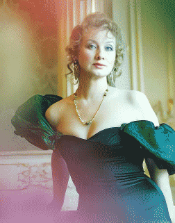
Есть великая музыка, но нет слушателей.Есть таланты , например, голос Натальи Ивановой, но нет широкого круга почитателей.
Есть нобелевские лауреаты, но нет благодарных соотечественников...
Неужели Россия обречена на вечную серость, рассуждающего о погоде населения?.
Пора прекратить мобилизационное развитие, войти в союз с Европой и черпать оттуда культуру в обмен на своё сырьё, постепенно увеличивая качество гражданской жизни России. Как это делают, например, турки: Некто Ахмед из турецкой деревни приехал работать на московский рынок, женился на москвичке, которая родила ему подряд шесть детей и после чего он увёз семью в свою родную деревню, в Турцию. Правда, та после этого "опомнилась" и развелась с ним. Но какой герой Ахмед - наши же крутые парни в развалку по улице могут пройтись только с бутылкой пива. А так чтобы поехать в Стамбул и привести оттуда жену с шестью детьми - пока слабо
Тот, кто был в турецкой деревне, подтвердит: сравнение не в нашу пользу.
6.11.2007.
Вчера на телеканале Россия шёл фильм "Штурм Зимнего. Опровержение", режиссёр Галина Огурная, производство: 2007.
Фильм посвящён 90-летию Октябрьской революции. Авторы фильма предлагают свою версию одного из ключевых событий ХХ века, основанную на вновь открытых фактах и документах и исследованиях авторитетных специалистов. Кто был истинным организатором и руководителем Октябрьского переворота? Какова была тайная роль Керенского накануне и во время переворота? Каковы были военные силы большевиков, как и где в реальности готовились боевики "революции"? И какова была её настоящая цель? На все эти вопросы в фильме даются ответы, опрокидывающие до сих пор известные мифы об Октябре 1917 года.
Конечно, абсолютная монархия тормозила социальное развитие России, но Февральская революция (пусть даже инициированная разведками странами противниками в войне) не могла привести к конституционной монархии или республике, народ не был готов. Произошёл обвал государственности, как и во времена перестройки М. Горбачёва. Видимо, Ленин отчаялся искать интерес народа путём политической борьбы малыми силами и лозунг поражения царизма в период с 14 по 17 год был оправданием его сделки с противниками России. Это привело к предательству. Государственный переворот привёл к гражданской войне . После войны в ходе борьбы за безальтернативное государственное управление заговорщики применяют силу и уничтожают ослабленную ленинскую группировку. Сталин , который возможно не пользовался спонсорами, возглавил обновлённую вертикаль власти с опорой на силу, тем самым компенсируя отсутствие денег и знаний во всех структурах управления. Из-за искусственности всех революций на базе силы в России не складывается политическая культура, обеспечивающая функционирование партий; из-за давления вертикали управления не складывается система общественных отношений и гражданская культура, да и личный морально-этический облик среднего русского нуждается во многих свойствах и далёк от качества среднего западного европейца..
{kind=link}
{kind=link}
После просмотра этого фильма у меня одно желание - требовать судебного процесса по поводу февральско-октябрьского военного переворота 1917 год. Пора воссоздать достоверную картину и попытаться объективно оценить те и последующие события. После всех разоблачений последних лет стало противно ходить по улицам революционеров-террористов и наёмников внешних разведок, смотреть на памятники заговорщиков , обвинявших друг друга во вражде к народу и, зная причастность свою и своих сподвижников к иностранным разведкам, организовывали массовые репрессии именем великой цели (знали бы эти недоучки, что потребности теперь приходится разумно ограничивать), усиленные дикостью исполнителей, что разбудило и другую традицию - пренебрежительное отношение к народу. В стране, как и во времена Гоголя, по-прежнему продолжают жить мёртвые души. Отмороженному населению России продолжают морочить головы, врать и угрожать. Только контролируемое из вне государственное управление может допустить в стране разгул уголовщины и экономических преступлений. Обанкротившиеся в самом начале своего пути марксисты-ленинцы-сталинцы тремя волнами своих глобальных революционных планов травмировали Россию: 1- авантюра с мировой революцией и гражданская война; 2- подготовка к захвату Европы и Вторая мировая война; 3-гонка вооружений и проигрыш в "холодной войне".
Если мы хотим полноценно жить и развиваться давно пора обратиться к культурно-историческим корням России и создавать реальный мир , общество, гражданские инициативы, запретить все тайны и тайные организации (пойти дальше лозунга 1917г.: "Публикация тайных договоров"), розыгрыши и клевету, осторожно шутить... Новое общество надо возрождать в реальном мире, не врать и учить жить каждого свободно и не бояться прежде всего госаппарата.
Мне видится только один путь - глобализация в союзе с Европой и США : Россией может управлять пока только бюрократия с авангардом в качестве партии власти (примитивный вариант), но для этого нужен пакет законов-ограничителей для толпы и ревнителей нового порядка , которые присутствуют в нашем слабом и больном обществе. Партию власти формирует Президент группировки, захватившей государственное управление (власть) . Следовательно, все усилия на ближайшие 50 лет надо направлять на соблюдение сменяемости Президента России по конституции и подготовку элит к выборам Президента Мира. Политические партии скорее всего отомрут за эти годы. Нишу переходного периода к цивилизованности лучше всего отдать двум партиям: Единой России и Справедливой России - пусть конкурируют во благо народа, сменяя друг друга на политической сцене, не вмешивая народ в жёсткую политическую борьбу (да, это - примитивный вариант). Реальность такова, что не только руководитель в офисе, но и не всякий бригадир грузчиков открыт для членов своей бригады: стукачи всех вертикалей влияния и различных оперов одного отдела покрыли страну сплошной сетью. Особенно плотная сеть в Москве, в научных и военных городках центрального подчинения: сексоты всегда рады общению, но редко высказывают своё мнение, сторонятся публичности без указания сверху: по-моему, типичный образ сексота. Эти тайные гослюди от политотдела, КГБ, контрразведки , криминальных группировок охраняли, консервировали режим, понижая тем самым политическую культуру населения, и сегодня она остаётся примитивной и недостаточной для демократии; предстоит продолжительное размораживание инициативы населения, строительство демократических сообществ, культивируя доверие и открытость всего общества.
Возможно, что СПС, Яблоко и другим партиям надо объединиться с Единой и Справедливой Россией. Ранее я предполагал, что демократия в России и СПС подойдёт к выборам 2008 подготовленными, но увы, ошибся. Никите Белых следует бороться за свободу ещё 10 лет и только тогда в него поверят, и он сможет реально выставить СПС на выбор народу.
Лидеру показано мотать предвыборный срок в тюрьме или пахать на политической ниве, а не объявляться народу перед выборами после работы в банке и на митингах призывать петь Але-Але...- противно. Ни демократия, ни демократические партии пока не складываются.
Отдам голос Путину и его команде - пусть попробуют реализовать свои планы. СПС и Яблоко надо тоже присоединиться к планам Путина и не участвовать в выборах. Это будет более сильный ход, рассчитанный на консолидацию нации. Хватит противоборства, оппозиция в России должна быть только конструктивной. Если планам Путина не удастся реализоваться, вот тогда в 2012 году объединённые демократы с лидерами, работающими года ми, обязаны победить, да и созревший народ может их поддержать и вновь попробовать свои силы для демократического строительства! Если команда Путина будет успешной, то появится база для политической культуры России. Если нет, то и тирания нашему населению полезна, холуйский дух из населения России долго не выветрится. И молодые лидеры закалятся. Словом, проиграть от лидерства Путина, надеюсь, невозможно. Да и он не гасит многотысячные митинги в свою поддержку, как это делал Ельцин и окружающие его так называемые демократы, которых временно посадили на диваны.
Прежде чем пользоваться схемами демократии нашему народу надо прежде всего создавать материальную и нравственную базу нации, постепенно учась самоорганизации и прямому волеизъявлению через социальные движения, профсоюзы, клубы, кружки, семинары... Скорость этого процесса может зависеть от множества факторов. Но спешить не следует (сложный вариант социального управления по изменению социума в процессе решения креативных задач должен вызреть). Весь ХХ век был веком серых людей, зачастую внешне красивых, и харизматичных лидеров, зачастую кривоногих и рябых, прописавших в уголовном праве поблажки для преступлений, совершённых в аффективном состоянии. Надеюсь, что новый век будет открытым веком элит, общественной иерархии по признакам разума и солидарности социально богатого народа, осуждающим нарушителей права по тонким технологиям без каких-либо привилегий.
26.11.2007.
Арест Каспарова на 5 суток - начало определённой эпохи в России. Если этот арест не станет началом традиции соблюдения законности, то станет началом эпохи беспредела. Посмотрим...
12.12.2007.
В понедельник четыре партии - "Единая Россия", "Справедливая Россия", Аграрная партия России и "Гражданская сила", набравшие на парламентских выборах 2 декабря в общей сложности более 75% голосов, предложили выдвинуть Д. А. Медведева кандидатом в президенты. Бог не забыл Россию и дал нам последний шанс!.
По-моему, Медведев лучший кандидат в президенты. Сила России будет прирастать вложениями в человека; холопство должно исчезнуть с просторов России. И первый шаг - наёмная профессиональная Армия, второй - защищённый труд, третий - открытость общества и личной собственности. В качестве укрепления правопорядка хорошо бы ввести штрафы за неявку на выборы, по-моему, наше население и системы учёта граждан созрели для этого.
23.09.08.
В августе во время отпуска в Гусь-Хрустальном событие по принуждению к миру Грузии воспринимались мной неоднозначно. Сегодня мне представляется, что залежи силиката вокруг города моего детства и юности не превращаются в полупроводники из-за таких событий. Если мои земляки, продолжат делать традиционные бутылки и гранёные стаканы для спиртного из Осетии и других регионов Грузии, отправляя своих сыновей в батальоны охраны, то локальное принуждение к миру и вложение средств в локальную безопасность сегодня сделают невозможной инновационную продукцию завтра. И это, по-моему, гораздо опаснее для нечернозёмной центральной России!.
Российскому народу нужно устойчивое развитие с элементами либерального развития Западного толка (для России ещё возможны эти либеральные методы развития, так как есть ресурсы), и нам не нужно возвращаться за железный занавес на основе локальной силы, обращённой внутрь страны или на своих ближайших соседей.
По-моему, мир глобализируется по трём осям: по оси силы (прошло две мировые войны и теперь лидирует НАТО и если бы лидировал Варшавский договор суть вектора на интеграцию народов была бы той же), по оси денег (мировые финансовые кризисы после 20-х годов не редкость и теперь лидирует банки США, если бы лидировал Сбербанк, то отличия были бы тоже незначительными), по оси знаний (яркий пример Интернет, в котором пока лидирует США, но и Россия могла бы лидировать и отличия не были бы существенными). Если уж нам не противиться объективному скольжению по этим осям, то НАТО смогло бы способствовать порядку в Грузии, а наука и расширенные контакты с Западом помогли бы уже за 5 лет превратить Мещеру в аналог Силиконовой долины США. Однако реальности таковы, что ценности у нас одинаковые, а реализация разная. Социальное развитие, время России отстаёт. Внутри страны есть серьёзный тормоз и он, по моему мнению в социальном управлении, в системе лидерства, в отношениях лидерства, в отношениях людей, в качестве самих людей. Чтобы зарождающееся общество в трупных массах прошлого стало адекватным современным вызовам и сформировало свои структуры, в том числе и средний класс, нужны несколько пятилеток качества не товаров, а человека: выровнять или приблизить человеческий и социальный капитал российского населения с потенциалом народа Европы.
25.10.08.
Ушёл из жизни Муслим Магомаев, уходят счастливые моменты прошлой жизни. В Армии в 70-е Магомаева, пластинку с песней в его исполнении "Свадьба" крутили по воскресеньям все роты и эта песня, я уверен, поддерживала дисциплину и порядок лучше, чем десять тысяч прапорщиков, а часто и компенсировала их отсутствие-присутствие в казармах.
25.12.08.
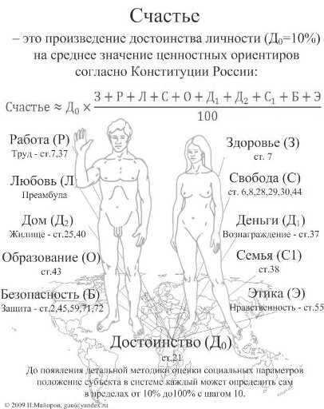
Самое главное в итоге 2008 — это завершение работы сына над диссертацией по лидерству устойчивого развития, управления по ценностям на основе достоинства каждого человека . Конечно, защита научной работы пока отложена на неопределённое время, но графический результат его исследований с его разрешения я имею честь представить на суд моих читателей. Главное в счастье — это опора на достоинство человека, солидарность и развитое, добродушное общение, отношения (социальный капитал) по ценностям, одинаково поминаемым всеми. Не следует забывать о своём достоинстве — это уже 10% счастья! (В 1993 году я баллотировался в Госдуму и в моей программе были эти 10 ценностей, но в 2008 ценности превратились в систему на основе достоинства и позже, к 2013 году, картинка была поправлена. Достоинство в расчётах счастья правильнее считать 100%).
Конечно, бывает локальное счастье: в работе, в любви, в доме, деньгам..., но лучше иметь настоящее, ценностно-ориентированное. Будущее за лидерством на основе достоинства человека.
21.02.09.
Вертикаль управления России (79 слов о власти в Конституции) без горизонтальной составляющей (всего 2 слова о достоинстве человека и гражданина в Конституции) показала себя малоэффективной в расследовании дела Анны Политковской, а ранее и Пола Хлебникова. Всё это подтверждает необходимость дальнейшей организации социальных систем управления на основе модернизации просвещённого единоначалия или демократизации на основе достоинства каждого гражданина и обновлённой системы лидерства.
Теперешняя безопасность общества слабее допустимого уровня для демократической страны и это очевидно, демократизация нуждается в открытости, распределённости и мобильности, но нет надёжной защиты собственности, нет доступного жилья, не работает финансовая система; экологические трудности, создаваемые свободными людьми, губят здоровье поколений; закрытость администрации от народа, который мог бы знать и реагировать на ситуацию, усугубляют коррупцию.
Наступивший мировой кризис взывает к самому серьёзному отношению к социальной науке и системам мирового лидерства, необходимо незамедлительно вносить изменения в "стандарт" социального капитала отдельной личности, в отношения образованных и динамичных людей: иначе в наших условиях люди могут открыть войну всех против всех. Для устойчивого развития надо и в этот раз корректировать сверху систему лидерства в России.
12.03.09.
Движение социальной материи (субъектов и организованных человеческих сообществ) вышло на глобальный уровень. Настало время оптимизации. Боюсь, что некому будет остановить сползание человечества к третьей мировой войне – первой глобальной войне, в ходе которой человечество откажется от целе-ориентированного мировоззрения и перейдёт к ценностно-ориентированному поведению под защитой глобальных сил быстрого реагирования. Возможно, на законодательном уровне мировое сообщество будет проверять цели развития для каждого региона. Иначе устойчивого развития не получится.
Но самое главное, что некому будет сделать анализ причин и последствий текущего развития общества - в живых могут не остаться нужные мыслители, которых и теперь мало.
18.03.09.
Полковник Виктор БАРВЕНКОВСКИЙ в газете Время новостей N°44 от 18 марта 2009 вновь обратил внимание на поступки "преданных делу партии бывших офицеров Главного штаба" - нынешних ветеранов РВСН. На Власиху политотдел отбирал офицеров только с характеристикой "делу партии предан" в личном деле, иногда там были слова "беспредельно предан". Таковы страницы истории партийного строительства в Армии, в отдельно взятом гарнизоне. История форсированного развития из-за внешних угроз и торможения развития космической отрасли, искусственного, идеологического противостояния с США бедной страны с преданными "делу" коммунизма офицерами. Если бы в характеристике достойного офицера вместо записи "делу партии предан" проставлялись более объективные записи, например: достойный гражданин, работоспособен, вынослив, спортсмен, богат, хороший семьянин или из потомственных военных, любит родную историю, животный мир и природу, литературу и музыку, всесторонне образован, этически корректен, новатор, изобретатель, рационализатор..., такое количество могло перерасти в нужное народу качество. А преданность делу партии рассыпалась в прах. Это произойдёт скоро в КНДР. Иногда я спрашиваю ветеранов, ценили ли вы мир, дорожили ли вы формулировкой "Делу партии предан", они отвечают, что дорожили. Но на сколько? Они отвечают, что 500$ тоже на дороге не валяются и по приказу Брежнева могли спалить весь мир капитализма и насилия. И для многих обычные ценности непонятны или равнозначны партийным, корпоративным.
По аналогии и наша российская братва в различных местностях большой России "делу банды предана", но на сколько? Наверняка, большинство братств стоит не более 500$. И только отдельные корпорации по совокупности своих ценностей обеспечивают своим членам сносное существование. Однако примеров не знаю, да и ценности пока не формализованы для однозначного толкования и измерения, а Конституцию у нас приняли, но не читают ни самостоятельно, ни коллективно, ни через СМИ .
29.04.09.
Для России в Федеральных законах о памятниках, названиях улиц, площадей... надо бы предусмотреть, что физические лица могут быть увековечены только через сто лет, в местных законах только через 50 лет.! Иначе в Делах российских сподвижников, подельников и братвы не разобраться и через 1000 лет потом, а граждане будут разгуливать по площадям и проспектам головорезов.
На мой взгляд удачным оказался памятник композитору Араму Хачатуряну открытый в 2006 году в центре Москвы - в сквере возле Дома композиторов в Брюсовом переулке с участием супруги президента России Людмилы Путиной, президент Армении Роберта Кочаряна и мэра столицы Юрия Лужкова.
В бронзовом памятнике скульптора Георгия Франгуляна и архитектора Игоря Воскресенского запечатлён маэстро в минуты творческого вдохновения в окружении музыкальных инструментов практически на уровне земли.
{kind=link}
Арам Хачатурян создал всемирно известные балеты «Спартак», «Гаяне», симфонии, инструментальные концерты, музыку к кинофильмам «Маскарад», «Адмирал Ушаков», «Отелло». Известны в мире и его композиции к театральным постановкам.
Но самая главная удача для памяти народа заключается в том, что местные дети любят играть вокруг и своими ладошками за два года отполировали ноги монумента.
06.07.09.
Ещё один шанс для народа - сможет ли его не упустить законно избранный Президент?
23.08.09.
Считаю, что в настоящее время гласность и опора на общечеловеческие ценности более всего способствует развитию России . Если народ дезориентирован и безмолвствует могут возникать стихийные или плановые ГКЧП для ликвидации социальных или технологических коллапсов..
1.10.09.
Заметил, что старею. Стали раздражать молодые советники высшего руководства страны, вещающие по ТВ. Например, говорят, что к 13 году мы наладим, углубим, расширим и произведём. Но почему 3 года назад не наладили, не углубил, не расширили и не произвели - молчат.
В качестве итога своей работы преподавателя обновил книгу о компьютере для пользователя , некоторые хвалят.
13.12.09.
Слушал по радио Эхо Москвы передачу Евгении Альбац с участием Елены Масюк. Какие мужественные женщины! Жаль, что таких личностей мало. А их для России нужно много, очень много. Хотя ростки есть.
Однако случай с орденоносным военным в форме полковника с надраенной фурнитурой, разместивший своё фото на сайте и осмелившимся задать вопросы о портянках бывшему гражданскому министру с рыжей шевелюрой, а не военному министру его поры о гибели боевых товарищей в Грозном, мне трудно квалифицировать. Геройство ли это? Задавать вопросы надо и лучше бы каждому начать с себя, отрабатывая гражданское самосознание!.
20.12.09.
Смотрел по ТВ передачу Сталин с нами - поразил меня орденоносный полковник, угрожающий носителям либеральных взглядов, росткам общества какими-то будущими карами во имя отечества без общества под управлением вновь созданной администрации, сливая в один стакан отцов церкви и отцов безбожного авангарда трудящихся. Мерзость такой угрозы от военного в наше время в России очевидна. Воины нашей молодой демократической республики обязаны оберегать права и свободу, в том числе и свободу мышления граждан в любом законном направлении согласно Конституции. Это очень важно для поиска выхода из сложных ситуаций развития человечества в ХХI веке.
Да ещё некоторые деятели на передаче за мало понятные подвиги рыжего грузина - Сталина , беззастенчиво унижали всех, и самое главное тех, кто помнит его злодеяния, оскорбляли память миллионов погибших по его распоряжениям, они унижали и моё самосознание гражданина. Милиция до таких хулиганов или провокаторов не добирается, а общество, как и личность учатся в дискуссиях и в научных выводах оценивать социальные движения и поступки выбранных лидеров, учится признавать ошибки и прославлять победы народа.
Надо шире практиковать общественные дискуссии для повышения культуры нарождающегося общества, укрепляя солидарность нашего народа. Приглашая на такие передачи, надо предупреждать и участников, и зрителей, что всё сказанное будет оценено обществом и правоохранительными органами. А то можно подумать, что выступление по телевидению вне правового поля.
В эти же дни был похоронен Гайдар, который взялся спасать Россию в 1991 году. Дума отказала ему в звании "отца режима" и не захотела встать и почтить его память вставанием. После такого поступка хорошо бы создать комиссию и дать оценку его деятельности на текущий момент. А то не понятно: молча голосовать задницей можно только от себя, а депутаты - они представители. Кого представляют и чего в Думе они заседают ????????????? Не на яйцах же сидят?.
17.01.10.
Проблемы устойчивого развития и глобального партнёрства. Размышление у телевизора 13–16 января 2010 года.
Смотрел кадры катастрофы на ГАИТИ, гибель представительства ООН на острове… и куда-то уходила надежда на мирный путь замены интенсивного развития устойчивым, а после просмотра встречи Медведева с лидерами партий по вопросу политической системы подумалось об общих чертах социального развития на Гаити и в России, о постоянной слабости прогрессивного человечества во все века. Двести лет свободное Гаити и почти сто лет свободная от царя Россия не смогли построить приемлемое для жизни отечество. Оба государства лидируют в социальных экспериментах, оба широко применяют военную силу, но одним мешает жара, другим, наверное, - холод. Но я так думаю - администрация, подменяющая собой естественно исторические социальные связи населения. «25 ноября 1998 года.
Совет Безопасности в своей резолюции 1212 (1998) от 25 ноября 1998 года , продлив мандат Гражданской полицейской миссии Организации Объединённых Наций в Гаити (ГПМООНГ), подтвердил незаменимую роль международной помощи в обеспечении устойчивого развития в Гаити и предложил органам и учреждениям системы Организации Объединённых Наций, особенно Экономическому и Социальному Совету, оказать содействие в разработке долгосрочной программы оказания поддержки Гаити.».
Что-то нет репортажей о том, что Совет Безопасности ООН и другие органы ООН трансформируются в Мировое Правительство с Силами глобального реагирования для поддержания устойчивого развития или о других конкретных шагах для построения системы устойчивого развития. Например, сразу после катастрофы на Гаити можно бы Силами глобального регулирования, при финансовом обеспечении Мирового банка и научным рекомендациям Юнеско и других центов мировой науки разработать программу осуществления устойчивого развития одного острова Земли. Досадно, но Цели развития тысячелетия по всей видимости не будут достигнуты к 2015 году:.
- 1. ликвидация нищеты и голода;
- 2. обеспечение всеобщего начального образования;
- 3. поощрение равенства мужчин и женщин и расширение прав и возможностей женщин;
- 4. сокращение детской смертности;
- 5. улучшение охраны материнства;
- 6. борьба с ВИЧ/СПИДом; малярией и другими заболеваниями;
- 7. обеспечение устойчивого развития окружающей среды;
- 8. формирование глобального партнёрства в целях развития.
- Статистика по России за 2008 год
- Рождения - 1713947
- Умерли - 2075954
- Заключение брака - 1179007
- Расторжение брака - 703412
- Численность населения района на 01.01.2008 - 45.5 тыс. ч
- Численность населения города:
1926 год - 17.9 тыс. 1939 год - 40 тыс. 1959 г. - 54.2 тыс. 1962 г. - 59 тыс. 1967 г. - 63 тыс. 1970 г. - 64.5 тыс. 1973 г. - 67 тыс. 1976 г. - 69 тыс. 1979 г. - 71.6 тыс. 1982 г. - 73 тыс. 1986 г. - 75 тыс. 1989 г. - 76.3 тыс. 1992 г. - 76.9 тыс. 1996 г. - 75.9 тыс. 1998 г. - 74.8 тыс. 2000 г. - 73.4 тыс. 2008 г. - 61,9 тыс. 2009 г. - 61 тыс.
Статистика по городу и району Гусь-Хрустальный за 2009 год.
Город Гусь-Хрустальный
рождения - 752 смерти - 1278 заключение брака - 684 расторжение брака - 289
установление отцовства - 139 усыновление (удочерение) - 10 перемена имени - 24.
Район Гусь-Хрустальный
рождения - 490 смерти - 1048 заключение брака - 152 расторжение брака - 160
установление отцовства - 76 усыновление (удочерение) - 3 перемена имени - 8.
Большая смертность в сельской местности! Это значит, что экстенсивное развитие невозможно. Какая уж тут модернизация - надо останавливать вымирание
Полагаю, что теперь недостаточно после работы населению посмотреть самодеятельность, развлекательный фильм, концерт звёзд или победу на олимпиаде.
Жизнь каждого должна быть качественной, ценностно-ориентированной, на основе достоинства человека.
Народу надо заботиться об обустройстве жизни каждого гражданина, а не о достижении рекордов отдельными лицами. Рекордное уничтожение в ХХ веке миллионов жителей России в ходе обустройства внутренней жизни уполномоченными от "народа" создали пассивную личность, которая не в состоянии вникнуть в собственное достоинство, продолжая с равнодушием смотреть на символы жестокой эпохи - памятники Ленину, названия улиц и населённых пунктов..., сосуществуя с устаревшей командной бюрократией, "заточенной" на ломку человека. Население и в начале 21 века эксплуатируют все, от политиков разных уровней до управдомов ЖКХ. Видимо, нас ожидает застой до новой генерации политиков, которые сумеют подвести итоги ХХ веку России и самое главное вновь восстановят в человеке чувство собственного достоинства и твёрдую ценностную социальную ориентацию
13.03.10
После 1967 года вновь полностью просмотрел фильм Вертикаль. Многие его достоинства перечёркивают и выпивка перед поездкой в горы, и курение Лужиной на маршруте. С. Говорухин и наверняка курящий и пьющий худсовет обеспечили развитие курения и пьянства молодёжи на десятилетия. Тогда в 1967 году девушки не курили, а пьяных девушек я совсем не видел. Эти фильмы закладывали теперешнюю Россию.
02.04.10
В эту Великую пятницу по телеканалу «Культура» посмотрел фильм Анджея Вайды «Катынь», обращения самого Вайды к зрителям и участникам малой дискуссии, реплики российской элиты после показа фильма и не мог заснуть, не оставив запись в этом дневнике. Фильм подтвердил необходимость переосмысления всего ХХ века, иначе бюрократия так и будет именоваться как МЕХАНИЗМ, средство и дополнение ЛИДЕРА, которые все вместе составляют основы традиций нынешней системы лидерства , с которой пора расстаться взрослеющему человечеству и России более всего - она хронически больна. По-моему А. Вайда мог бы усилить образ МЕХАНИЗМА ротой молчаливых солдат с лопатами вместо бульдозера. Этот МЕХАНИЗМ, соучаствующий в уничтожении будущего России, без конкурсов принимался в институты, занимал командные должности и заложил традиции теперешней бюрократии.
10.05.10
Отгремел салют в честь завершения 65 лет тому назад Великой Отечественной войны. Вчера в 65 раз был повторен Парад Победы в той ужасной войне-катастрофе.
Да и демонстрация силы в нашей стране настраивает социальную ориентацию у многих граждан, особенно у нашей молодёжи.
Единственный урок из этого действа полагаю состоит в том, что наших солдат надо учить шагать так как шли солдаты НАТО. Их шаг - шаг граждан, любящих свою родину и глубоко осознающих своё достоинство, свои ценности. Такой солдат очень крепок. Может, девушки в нашей Армии послужат катализатором строевого достоинства военнослужащего.
Пишу эти строчки, так как уже болят мои ноги, которыми я бил наотмашь по плацу более 20 лет, болит сердце за будущее России. Пора менять пустой чеканный шаг оловянного солдатика на строевую выучку, основанную на достоинстве человека, а потом и с призывом можно разобраться. Временное рабство в Армии не отвечает нуждам страны.
Вспоминаю, как оскорбляли меня, командами-криками "Выше ногу, тяни носок!!!" Наверно, кто-то придумал такой шаг для солдат, да ещё обязательную строевую подготовку для обучения этому шагу. Наверно, для того чтобы по прибытии в Армию человек почувствовал себя без почвы под ногами, человеком без достоинства, так как даже шагать это двуногое существо не может, чтобы всю службу меньше размышляли маршируя. И подумалось мне, глядя на достойно шагающих гостей нашего 65-го Парада, реформу Армии надо начинать в первую очередь с реорганизации строевой подготовки, которая всеми своими строевыми приёмами должна подчёркивать наличие у солдата его человеческого достоинства. А выйдя в отставку, многие ветераны сумеют сохранить хотя бы крепкие ноги.
03.08.10
Анализ текущих событий лета 2010 года показал - наши люди и после 65-летия Победы в ВОВ ещё не стали хозяевами на своей земле, гражданами свободной и социальной демократической республики. Администрация нынешней правящей партии в условиях перехода к демократии не смогла выработать соответствующую стратегию развития. Население, освободившееся от мобилизационного стиля тоталитарного режима, продолжает быть равнодушным к происходящему вокруг. Судя по картинке очагов пожарищ это свойственно и Украине, и Молдавии. Правящие партии и там и у нас не несут ответственности, а народ и не спрашивает с них, так как не народ их создаёт. Следовательно, путь народа от тоталитарного государства к демократическому самоуправлению будет долгим.
Сила государства спала, но у людей взамен этому не появилось собственной силы, собственности, наличности и развитых средств платежей, собственных этических правил повседневного общения. Ослабевший режим в России не смог обновлённой вертикалью управления, администрацией компенсировать былую силу, не стало население и богаче, и мудрее. Администрация, объявляя о чрезвычайной ситуации или заведении уголовного дела никого уже не пугает. Эти сигналы для бедного и не организованного в гражданское общество населения безразличны, а чиновниками даже ярусом ниже игнорируются. Кроме этого, идут постоянные помехи самоорганизации народа в отдельных регионах. Например, в городе Химки что-то никак не состоится консенсус между администрацией и народом по поводу вырубки местного леса. Э.Панфилова ушла в отставку: содействие народу в организации гражданского общества - это не организация детей или взрослых в хороводы. Брошенная на произвол гражданской судьбы загорелась в жаркую погоду от человеческого фактора великая Россия; горят и недавно отделившиеся от России народы Украины и Молдавии - у нас пока общая доля . А на фоне пожаров происходят скандальные хороводы для молодёжи на озере Селигер, поддерживаемые Президентом и Премьером. Всё это действо выглядит по меньшей мере не к месту; тем более, что ежегодно проваливаются необходимые государству сборы молодёжи в Армию. Странно, но в Армию пока идут с удовольствием только женщины и то из провинции.
{kind=link}
А если и тушат кое-где пожары, то только методом мобилизации. Например в моём городе юности Гусь-Хрустальном летом 2010 года , как и летом 1972 году, новая местная администрация с навязанным городу в качестве главы не местного человека (дай Бог ему здоровья и успешной работы), ничего не помня и ни к чему не приготовившись, содействует тушению пожаров в районе почти теми же силами - солдатами по призыву и лопатами, которых не хватает. Такие большие пожары в засуху возникают только потому, что нет традиций местного самоуправления: нет сильных предпринимателей, а чиновники занимают места своими задницами в основном для собственного обогащения, а там хоть трава не расти. Но коттеджи горят так же, как и соседние хижины. Огонь не признаёт административных границ. Воздух над городом и районом един, клопы и блохи переползают из квартиры бомжа в квартиру с евроремонтом.
{kind=link}
Как бы не опоздать со становлением гражданского общества. Ведь благополучие одних не решает проблему всех.
Только включением жёсткой законности, заинтересованности, инициативы и справедливости в действия каждого можно избегать подобные и более серьёзные катастрофы.
При этом наше население остаётся неготовым не только к демократии, но и к упаковкам продуктов, которые разбрасываются народом всюду. Реклама дамских сигарет и пива привела к тому, что девушки и молодые мамы, как им кажется, эффектно затягиваются и грациозно выбрасывают окурки всюду, даже в траву у детсада или деревянного дома в деревне.
17.10.10
Отставка мэра Москвы и назначение Президентом нового мэра обозначили и для меня очередную веху моей истории.
Итак, с октября 1994 года по октябрь 2010 года прошло 16 лет моей подвижнической работы в мэрии на одной и той же инженерной должности с основными обязанностями обучения сотрудников аппарата навыкам использования компьютера. Надеюсь, мне с коллегами удалось на 3% поднять производительность самоотверженного труда аппарата.
Факт назначения нового мэра после периода выборов, видимо, открывает переходный период рождения прямой электронной демократии эпохи постмодерна, который в итоге сделает излишним политическое членство граждан в партиях представительной демократии. Надеюсь, что в этом столетии созреет инструмент электронного гражданства сообщества России: население будет напрямую выбирать для себя те или иные социальные проекты и авторские модели социального управления, в том числе и из-за бугра. (Со стороны иногда виднее, как нам жить.) После прямого электронного выбора - одобрения проекта электоратом, для его осуществления будут проводиться опять-таки прямые электронные выборы менеджеров этих авторских проектов, в которых будет разрешено участвовать лицам со всех уголков нашей планеты. Предвижу, что лет через 15 на должность мэра Москвы могут баллотироваться Барак Обама, Кондолиза Райс, Арнольд Шварценеггер и т. д.
Конечно, если темпы будут низкими и переход России на социальную модель устойчивого развития снизится, то это будут их дети или внуки.
Полагаю, что для политических партий, отживающих свой исторический срок в России, на 30 лет можно было бы узаконить кодекс политических игр электората, населения для двух-трёх партий, как приложение к закону о политических партиях. В нём предусмотреть, что в случае роспуска отжившей или проворовавшейся партии создаётся новая взамен убывшей.
Три партии для того, чтобы одна правила не более двух сроков, другая была бы в системной оппозиции, а третья митинговала, находясь в свободном поиске, и боролась за роль системной оппозиции и даже правящей партии в случае каких-то гениальных решений в головах партийцев. При этом на основе социальных сетей надо тренироваться что-то выбирать. А пока наш социальный паровоз с КПД в 3% готовится к модернизации. Других социальных моделей для управления современным общежитием пока не озвучивали и, самое главное, население ими не интересуется. И мне представляется, что наибольший эффект в наше историческое время возможен от построения каждым человеком собственного счастья на основе понятия и чувства собственного достоинства, семьи и дома. Человеку в России надо на основе ценностных ориентиров несколько поколений учиться управлять строительством прежде всего собственной жизни и умело, и критично относиться к неэффективным социальным институтам, которые используют пока на 3% силы, деньги и знания народа. После 3–5 поколений ценностного развития самого человека от упрощённой вертикали государственного управления до начал постмодерна население сможет обрести потребность выбора конкретных моделей управления социальным развитием на всех уровнях социума.
04.11.10
Сегодня замерил активность сообщества пользователей Интернет.
Не прошло и месяца как электронный народ потерял интерес к прежнему мэру. Этот факт подтвердил мой прежний диагноз - население утомлено. Да и доверия в стране нет ни к кому. И если нет действительных грехов, то молва прилепит всё, что угодно, да ещё к такой колоритной фигуре как Лужков. Снимать сегодня можно кого угодно: население безмолвно - новое общество не выросло и осмыслить происходящее большинство не может, да и не привычен наш народ к такой процедуре, как публичная смена власти.
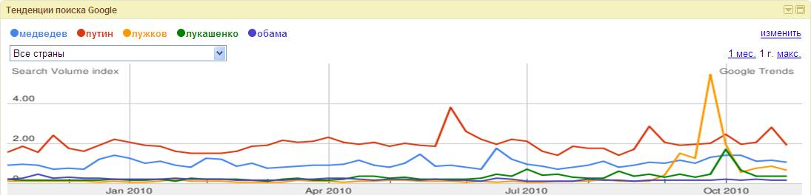
25.12.10.Моему организму исполнилось 60 лет. Слава Богу! Я поддерживал его как мог.
Спаси Бог и моих близких, моих коллег, население России, знакомых и незнакомых мне людей, окружающую природу и диких животных всего мира.
В свои 20 лет мне казалось, что я делаю ошибки в жизни, но их не более 20%. Соответственно в 30–30%, 40–40%, 50–50% и теперь в 60 лет мне представляется, что ошибок было 60%. Говорят: с года ми приходит мудрость, тоска и печаль: КПД (коэффициент полезного действия) машин не высок. Наверно, и эффективность человеческой жизни, сообществ людей в среднем 3%. Проживший 100 лет человек может гордиться только 3 года ми, полезными мгновениями, которые и осветили, скрепили жизнь. Так что любому человеку не стоит тужить о бесполезности и бессмысленности жизни. Кипучая деятельность не всегда полезна, а если и полезна, то далеко не на 100%.
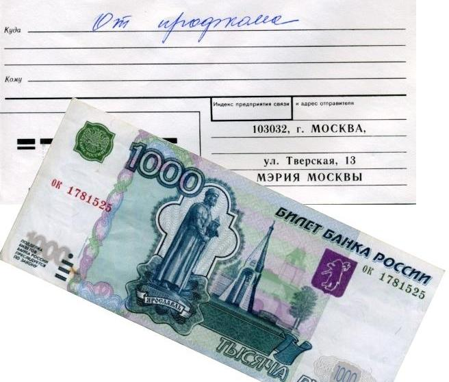
В день своего рождения 17 декабря получил одну тысячу рублей от профкома и по частному приглашению отправился слушать романсы в Колонном зале Дома союзов .Слушая наших молодых исполнителей, я чувствовал что-то дикое в общем фоне классического русского романса. Да и Дом Союзов в нашем обществе пока мало связан с проявлениями солидарности нашего населения. Это понятие означает общие цели, интересы, убеждения, взаимопомощь. Качества, которых не хватает населению нашей страны для работы в инновационной экономике, для уютной жизнедеятельности в своём государстве.
В резолюции ООН ко дню учреждения праздника Солидарности указано, что такое понятие как солидарность, должно стать главным понятием в 21 веке. Ассамблея ООН дала указания всем государствам внедрять в СМИ: газеты, телевидение, радио больше программ на тему солидарности людей по отношению друг к другу.
К 25 декабря завершился мой двухнедельный социальный марафон по оформлению пенсии и занесения в социальный регистр моих персональных данных. Кажется, что нет никому дела до меня, а мои учётные данные разбросаны, где сподобило мне проявиться. Казалось бы, не собери я их сам, то и нашему дорогому госаппарату их никогда не собрать. Горят и уходят в безвестность люди, как ушёл в никуда, в номер на могильном холмике мой одинокий сосед по дому. Хорошо, что соседи проявили солидарность и собрали деньги на могильный крест с фамилией. Так хоронят одиноких жителей посёлка Власиха - центра РВСН. А что в глубине России?.
08.08.11
Исполнилось 20 лет сети WWW , которую подарил нам Запад. Наше же Правительство, освоив деньги на Электронную Россию и Одно окно, забыло про электронного гражданина. И теперь эти проекты никак не могут пристыковаться ни к реальному руководству, ни к реальному населению, почему-то не учтённому в этих проектах. Хотя деньги выделялись большие ! Ушедшее десятилетие запомнилось мне лишь постоянно сновавшими по мэрии руководителей ИТ проектов в поисках новых бюджетных ассигнований, их обновляемыми костюмам, новыми ароматами их парфюма и тучными корзинами с подарками для распорядителей казённых средств.
Ни разу мне не удалось встретить в коридорах мэрии инженеров или энтузиастов от науки. Только однажды видел слёзы девушки, не прошедшей конкурс на замещение вакантной госдолжности с первого разу. Компьютеризация за последние 20 лет не изменила принципов тяги машины управления, создала лишь некий комфорт в документообороте. Как переход с угля на мазут в паровозах: кочегар стал оператором паровой машины, КПД поднялся на 1–3%, а пассажиры этого и не заметили. Видимо, наши трудности надо искать в нашей истории, в её глубинах и создавать фильтры для деятельных идиотов на руководящих постах.
19.08.11
Дни 19–21 августа 1991 года мне запомнились наибольшей неопределённостью, в которой находился я, наше население и, наверное, руководство СССР и команда М. С. Горбачёва, затеявшая перестройку в СССР.
Согласно своему менталитету и, видимо, по рекомендации жены – М. С. Горбачёв отпустил вожжи государственного управления. И, возможно, это было сделано по плану «Куда лошадь вывезет!» с ограничением на кровопролитие в Москве. Утром 19 августа Главнокомандующий РВСН собрал совещание и всем офицерам штаба приказал соблюдать спокойствие и не вмешиваться в гражданские события в Москве. Но когда вожжи были отпущены, лошадь госуправления СССР вдруг встала, а социальная метель резко усилилась. Например, были предложения от «верных делу партии товарищей» оперативно оформить внесудебные тройки и списки неблагонадёжных из рядов своих товарищей, изолировать демократов ..
Вероятно, события начали пугать тогдашних советников и прежде всего супругу М. С. Горбачёва. Она запуталась и её нерешительность просвечивала в поступках Верховного Главнокомандующего.
К 21 августа наиболее решительными оказались действия Б. Н. Ельцина и гражданская позиция его сторонников вокруг Белого дома. В его руки и попали вожжи госуправления СССР. При этом демократизация продолжилась с ускорением, а суеты в перестройке не убавилось. В это смутное время и я примкнул к демократическому движению под знамёнами Г. Попова, А. Собчака и других здравомыслящих современников.
Тогда в СССР, да и теперь государственная машина, её аппарат не успевает за вызовами времени. Мне представляется, что осознание и решение цивилизационных проблем России лежит вне партий и будет зависит от активности на основе чувства собственного достоинства человека в каждом из нас. И первые шаги в этом направлении дают результаты: при Медведеве и В. Путине население стало реже употреблять идиомы: "дерьмократы", "либерасты" и т. д.
Интересно, что самые горластые из критиков молодой демократии получили у нас в Одинцовском районе землю от дерьмократической власти, растолкав многих локтями. Не получил земли под сад и огород и я, публично, но без показухи, участвуя почти 20 лет в различных демократических начинаниях нашего района и страны.
Население, в своей массе, продолжает верить в чудеса и не торопится стать полновесными гражданами.
Был в отпуске в Гусь-Хрустальном и смотрел на увесистые замки - символы личного счастья молодых людей. Но надёжной материальной базы из доли национальных богатств России как не было так и нет. Фабрики и земля не принесли реального благосостояния рабочим и крестьянам.
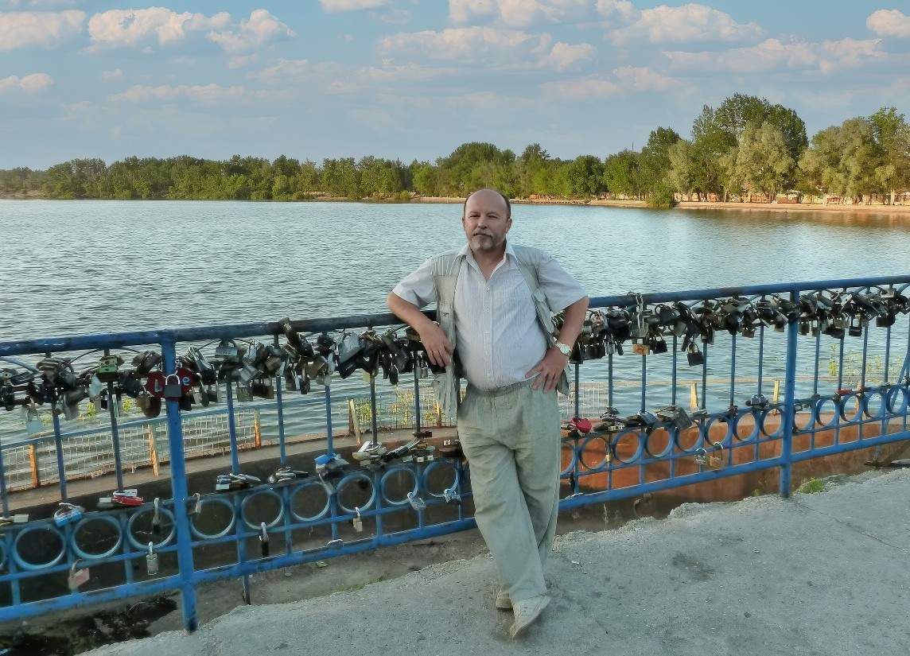
19.10.11
В городе Калуге, в Издательстве ГП Облиздат, в 2011году вышла интересная книга К.Б. Норкина «Системные проблемы борьбы с коррупцией в России». В своём труде профессор К.Б. Норкин, собрал некоторые полезные мысли о правильных, системных основах построения современного государства, которое обязано служить гражданам, а не удовлетворять законные нужды, правящего сословия, на основе текущего понимания границ и размера благосостояния подданного населения, личного состава или вверенного им коллектива. Он пишет: «Конечно, и в Москве, как и во всей России, есть серьёзные проблемы с коррупцией, но обвинять в ней, например, исключительно мэра не больше оснований, чем обвинять высшее российское руководство в размахе российской коррупции. Скорее можно обвинить в этом Петра I, который, «прорубая окно в Европу», не ввёл в России Магдебургское право, или Екатерину Великую, которая, утвердив великолепную «Жалованную грамоту городам» не сумела внедрить в неё инструменты гражданского общества, а все гражданские инициативы обусловила «соизволением» губернатора или иных высокопоставленных чиновников.» Стр.10 По существу К.Б. Норкин предупреждает о пагубности не только коррупционной составляющей, но и о негативных моментах холуйства в законодательстве, правилах и нормах общежития нашего населения.
Подробнее здесь - https://sites.google.com/site/dignity21/ .
18.11.11
Обстоятельства оставили меня дома, и я включил телевизор, посмотрел новости и переключился на канал Культура. Там шёл фильм "Юрий Кувалдин. Жизнь в тексте" Режиссер: Ваграм Кеворков. Производство: 2006. Так я познакомился с Юрием Кувалдиным. Прочёл его эссе, ФЕДОР КРЮКОВ, ВОСКРЕСШИЙ ИЗ ПЕПЛА, ИЛИ ШОЛОХОВЩИНА, КАК КОММУНИСТИЧЕСКАЯ МИСТИФИКАЦИЯ - http://www.kuvaldin.ru/12.html и мне представился весёлый, находчивый Михаил Шолохов, которого обстоятельства именно таким образом сориентировали, выделив из тёмной массы дезориентированного населения. Можно сказать, ему крупно повезло в ходе социального конфликта в России, "в зобу дыханье спёрло" от предложений старших товарищей.
По-моему, в русле сегодняшней модернизации с надеждами на инициативу и авторство каждого, надо бы расследовать ситуацию с авторством Шолохова, дать оценку и этого случая находчивости на уровне Федерального Собрания. Однако начальство нашего населения продолжает традицию поощрения весёлых и находчивых, а России сегодня нужно массовое движение вдумчивых и изобретательных авторов.
15.12.11
Выборы 2011 с массовой фальсификацией волеизъявления, манипуляцией с подведением итогов и их почти прямой трансляцией по интернет, ещё раз уверили меня в невозможности модернизации России без наличия у нас гражданского общества , активности каждого человека, опирающегося на собственное достоинство. Вместо высоких темпов либерального развития Россия в ХХ веке явило миру из либеральной области только личный подвиг В.Новодворской . Теперь мы сможем развиваться с достигнутого уровня только устойчиво и не более. Убеждён, век либерализма закончился для всего мира. Однако этого пока не понимают ни лидеры, ни население, а наука не популярна во многих станах.
Сегодня прошёл месяц после завершения моего служения в мэрии Москвы в качестве консультанта по информационным технологиям. Немножко отдохнул, а потому и посетил Национальный исследовательский университет "Высшая школа экономики", факультет социологии. Университет совместно с Российским обществом социологов и Сообществом профессиональных социологов проводит научно-практическую конференцию СОВРЕМЕННАЯ СОЦИОЛОГИЯ СОВРЕМЕННОЙ РОССИИ, посвящённую памяти первого декана факультета социологии Александра Олеговича Крыштановского.
Выступил доктор философских наук, профессор. Президент Российского общества социологов, заместитель директора Института социологии РАН, почётный доктор Института социологии РАН. Он отметил, что наша социология как наука зависима от практики политических лидеров, а штатные научные корифеи не знают общества, в котором сами живут. Однако после переквалификации из замполитов социологи успешно представляют Россию на международных форумах и приступили к созданию профессиональных союзов, по справедливости, распределяя бюджетные деньги и гранты, усугубляя безнадёжное состояние по активизации населения и всех каналов управления страной.
В.А. Ядов рассказал, что будущее социологов неотделимо от глобализации, от точного просчёта рисков, к которым приводят те или иные социальные действия. Однако им придётся решать и проблемы локальные или уже отдельного анклава, которых в России не мало.
Н. Е. Покровский высказал мнение, что и у них, там за бугром, дела не лучше. Муть начинается уже с названий международных конгрессов социологов, а уж далее и говорить ему было не о чем. Да и времени было в обрез.
В.В. Радаев в российской социологии выделил 10 болезней. При этом все наши болячки от того, что у каждого дипломированного социолога или любителя, как я, свой аршин в кармане.
А. Ю. Чепуренко и совсем не стал выступать: сообщество поспешило на кофе-брейк. После кофе послушал я и наших социальных практиков, замеряющих тенденции продаж от рекламы какой-нибудь Кока-Колы и других товаров народного потребления. Они меня совсем утомили. Дело оказалось не в качестве товара, а в этикетке на нём. И я ушёл на свежий воздух - проветривать помещения было некому, а мои желание поднять ветер в аудитории не приветствовалось бледной публикой.
На улице я пожалел о 4 часах езды от дома до Вышки. Да ещё представились монтёры, по инновационному заданию Правительства прикручивающие веб-камеры к урнам для голосования вместо аудиторий хотя бы ведущих университетов страны. И мне стало совсем грустно. 27.02.12.
Мои замеры индекса популярности пользователей интернета перед выборами в США подтвердились в результате выборов.
Сработает ли этот же замер для сегодняшней России?.
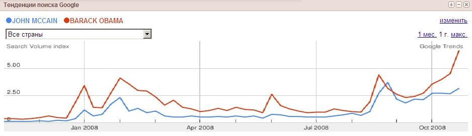
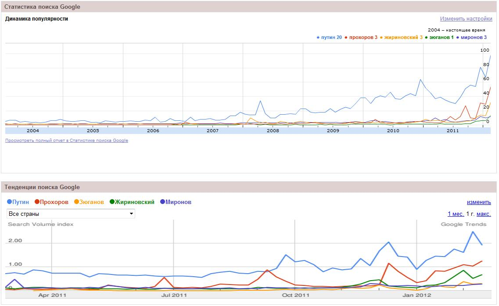
Из динамики популярности следует, что В. Путин победит в первом туре или во втором с Прохоровым.
15.03.12
Прогноз оправдался с ошеломляющим результатом, что и отразил в небольшой заметке.
06.04.12
Сегодня 200 лет со дня рождения А.И.Герцена, способствовавшего вселению холопов из землянок в собственные дома.
Уверен, что нынешнее самосовершенствование и самоорганизация нашего народа может произойти только с понятием и развитым чувством собственного достоинства. Разбудить ДОСТОИНСТВО в каждом человеке для участия в гуманитарной революции XXI века - задача современных герценых. Если этого не произойдёт, то Россия вслед за НТР проспит и эту революцию. Власть и в обнимку с собственностью без гуманитарного знания и традиций будут продолжать губить ростки национального сознания народа.
Жаль, если восклицание Юрия Нагибина в его Дневнике: "До чего же испорченный, безнадежно испорченный народ!" окажется истинным.
19.05.12
Жду 18 лет участка под огород . С 1994 года в военкомате несколько лет уверяли меня в строгом учёте и контроле заявлений ветеранов военной службы. Потом были опубликованы факты обогащения отдельных лиц за счёт общей земли, выросли даже какие-то рублёвские районы вокруг Одинцово. Некоторые получали по несколько участков на одну льготу: и под огород, и под сад, и под дачу, и под гараж, и под стоянку и теперь новый чиновник нового административного образования вновь меня уверил в действенности установленного порядка строгого учёта и контроля распределения благ.
Вновь вступающим в жизнь поколениям не до прогулок - пройти затруднительно с коляской новорождённого малыша. На Власихе площадь под гаражами, стоянками и припаркованными автомобилями возле подъездов превышает пространство для жителей нашего стратегического городка, упакованных в многоэтажки: любые призывы убрать машину в пустующий гараж с подвалом или стоянку, встречаются агрессивными напоминаниями своего права в действующих правилах и законах. Думается, что наши стратеги всегда готовы к межличностным войнам так же, как и постоянно готовы к пускам стратегических российских ракет по противнику. Впрочем, и гражданское население больших и малых городов теперь часто решает вопросы парковки поножовщиной.
Продолжаю надеяться до сих пор на "установленный порядок", а что остаётся, если вовремя не понял, не подсуетился, не схватил, не ....? А мне ведь советовали обогащающиеся за счёт общей земли и участков для ветеранов: - "Получи 100 долларов за два заявления: одно на просьбу, а другое на отказ от участка. Если не получишь эти 100 долларов, то от нашей суверенной и декоративной демократии ничего не получишь. А так хоть шерсти клок с паршивой овцы". Возможно, так оно и будет. Нет уже сил найти где-либо подушную базу данных учёта и распределения льгот и общих благ - Портал госуслуг её и не планирует пока, а от электронной демократии прошлой Электронной России осталось закрытое Одно окно, за которым мрак аппаратной кухни всех наших контор.
Разве что пошить себе адмиральский китель, купить муляжи высших наград, сфотографироваться и поздороваться с самим Президентом на самой главной площади страны - как это сделала ряженая генеральша
Если бы эти майские дни назвались днями памяти павших и примирения с бывшими врагами этого не произошло бы. А к Победе наш многочисленный бедный и слабый человек прислоняется уж многие лета и добром здравии, и в полном безумии
В России сейчас переходный период от командно-административной системы управления к постдемократической, т.е. той, которая должна обеспечить устойчивое развитие общества в последующие десятилетия и столетия за счёт активизации интеллекта.
Развитые страны тоже переходят от развитой демократии к постмодерну и у них эта социальная стадия и по форме, и по времени будет иной в каждой стране, словно процесс превращения различных гусениц в бабочек разного размера, форма и расцветки.
Митинги и марши в Москве — это реакция молодёжи на прежний, изживший себя командно-административный метод, который был применён для выборов в новую Думу и Президента. Это отголосок и демократической эйфории населения1987-1999 годов, когда люди интуитивно радовались обвалу командной администрации КПСС, завершившей азиатским методом индустриализацию страны - т. е. насильственно, без интеллекта, без демократии, без самоуправления масс, без заинтересованности масс в виде автомобилизации и собственного домостроения. Конечно, такая индустриализация свершилась болезненно, неэффективно, как роды при кесаревом сечении без потуг роженицы. Интенсивное освоение ресурсов природы, индустриализация без демократии свершилась в России и Китае и других странах. В России ситуация была усугублена насильственным внедрением светской системы отношений путём репрессий священнослужителей, взрывом или опустошением храмов. Но ресурсы мира не безграничны, обозначились пределы интенсивного роста и, естественно, наступает новая постиндустриальная эпоха. Вслед за научно-технической революцией, которая обеспечила экономику энергией на углеводородах, в мире разворачивается научно-гуманитарная. Запад со своим толерантным, активным населением, прошедшем через демократию и устойчивыми светскими общественными отношениями, видимо, легче эволюционирует, а наше население и руководство страны, неподготовленное к новым вызовам, могут создать сами себе неприятности. Надеюсь, что на этот раз "классы" обойдутся без гражданской войны. Конечно, нужно возродить демократию, как церковь, в качестве фактора общественной жизни, но не готовить массы и демократические партии в качестве локомотива общества . Населению в новую эпоху будут важны и нужны все ценности, а не только ДЕМОКРАТИЯ и её главная ценность СВОБОДА. Сегодня нужно создавать инновационные научные центры социального развития и культуры общества, реформировать школы, создать все условия для активного ценностного ориентирования населения. Нам надо осмысливать ушедшее время и строить постиндустриальную (постдемократическую), уютную для жизни Россию, постепенно отходя от выборов политических лидеров и их программ к научным проектам социального управления от местного до национального уровня, которые будут осуществляться открыто, с реальным участием каждого. Возможно, такое понятие как гражданин и гражданское общество западного типа в России и не установится, раз уж мы обошлись без демократии в ХХ веке, то и гражданское общество прошлого века нам нет смысла складывать по старым лекалам. Надеюсь, после конструктивных усилий, больших финансовых затрат и научного воспитания в России может появиться ценностно-ориентированное население, общество постмодерна, т. е. население с защищённым достоинством человека, которое живёт для счастья, а не ради исполнения гражданского долга. В новом обществе приживётся обращение "Ваше достоинство", будут использовать и старые добрые имена прежних эпох: Господин, Товарищ, Брат...! Если же мы будем выстраивать только демократию, что недостаточно для нынешней постдемократической эпохи или восстанавливать и обновлять только командно-административную систему, что уж совсем плохо, то население России опять отстанет от прогрессивных наших братьев из других частей планеты и в XXI веке. И Россию вновь обойдёт Запад, население Юго-Восточной Азии и других регионов, а достоинство масс прорвётся через социальный взрыв. 05.07.12.
Сегодня актуален лозунг устойчивого общественного развития: «Всё, что не работает на ДОСТОИНСТВО ЧЕЛОВЕКА, работает против ЧЕЛОВЕКА, против РОССИИ». Появились первые статьи на эту тему: идёт полезное телешоу Пусть говорят
7.09.12
Вчера по телеку в программе Пусть говорят ещё раз и убедительно была показана очередная сцена из трагедии дезориентированного населения России, которая длится уже несколько десятилетий. Заслуженные учителя мухлюют на избирательных участках, а доценты идут дальше.
При этом в России закрыто всё, кроме афиш, приглашающих на песни и пляски на сцене и льду.
Почему бы не публиковать хотя бы мониторинг основных ценностей человека: например, федерального кошелька, местных бюджетов и мониторинг местных заработков. Людям важно знать состав своего кошелька в широком смысле. Российскому человеку пора покончить с холопством, пора стать хозяином государственного бюджета и всего государства. Например, опубликовали, что в Крымске перед наводнением украли деньги на расчистку рек и случайно заметили только после наводнения. И так везде случайно узнают о краже миллионов. Странная случайность при всеобщей грамотности.
7.10.1.
Посмотрел фильм " Бобби Фишер против всего мира " и ещё раз убедился на истории последнего гениального шахматиста, что ценностные ориентиры чрезвычайно важны каждому человеку в современном мире. Спасский, Карпов и Каспаров мной уважаемы, но они всё-таки часть системной и целенаправленной подготовки советской школы пропаганды против Запада, индивидуала и иконы Холодной войны - Бобби Фишера , на которого в свою очередь несомненно оказывало влияние ЦРУ и Госдеп, против которых он выступал весь остаток своей жизни на грани своего безумия в условиях массового психоза в ХХ веке. Жизнь и смерть Бобби, да и трагические судьбы других участников имиджевых проектов за казённый счёт взывает к Правительствам всех стран: - " Откажитесь от пропаганды и грубого вмешательства в системы ценностной ориентации человека, населения ; займитесь безопасностью и финансово-хозяйственной работой на благо каждого гражданина".
19.02.13.
Год назад в гостевой книге Владимира Войновича, нашего классика по литературе, я оставил запись:.
Школьная программа по литературе.
Владимир Николаевич! Посмотрел школьную программу по литературе, возможно, я ошибаюсь, но не нашёл там Ваших произведений. Две-три сказки в программу 11 класса надо бы внести за счёт громоздких полотен иных авторов. Например, Сказка о глупом Галилее в сочетании с учебником астрономии, существенно помогла бы нашей молодёжи, новому поколению строить своё устойчивое счастье, внимательно относиться к ДОСТОИНСТВУ ЧЕЛОВЕКА своего сообщества, каким бы диким или развитым оно не было. При этом население получит крайне важные понятия астрономического и социального времени. И школьные диспуты о том, что Галилей - дуралей или нет запомнятся твёрдо и на всю оставшуюся жизнь. Сейчас же о том, что Земля вертится, большинство не вспоминает, а меньшинство от ложной мудрости вертятся сами на горе остальным.
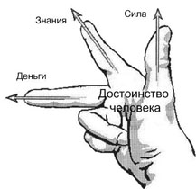
Дата создания: 2012 года 19 Февраль.Сегодня я повторяю эту запись в связи с публикацией на сайте http://litradio.ru/author/392.htm его сказок в исполнении автора, компактная версия сказки о Галилее здесь
9.05.2013.
Надеюсь, этот символ основных ценностей человека станет понятен каждому варианты. Нарисовал его после контент-анализа "Ценностей человека" в книгах моего времени по индексу Google.
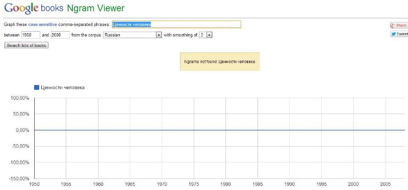
Продолжение своих размышлений о глобализации социально-гуманитарных наук и практик здесь - https://sites.google.com/site/dignity21/page